<title>The Metamyth Legend</title>
<meta name="claude:viewport-fit-sides" content="cover">
<style>
@font-face{font-family:'Futura';src:url('assets/fonts/futura-regular.ttf') format('truetype');font-weight:100 450;font-display:swap}
@font-face{font-family:'Futura';src:url('assets/fonts/futura-medium.otf') format('opentype');font-weight:451 900;font-display:swap}
@font-face{font-family:'Pherome';src:url('assets/fonts/pherome.otf') format('opentype');font-weight:100 900;font-display:swap}

@font-face{font-family:'Futura';src:url('assets/fonts/futura-regular.ttf') format('truetype');font-weight:100 450;font-display:swap}
@font-face{font-family:'Futura';src:url('assets/fonts/futura-medium.otf') format('opentype');font-weight:451 900;font-display:swap}
@font-face{font-family:'Pherome';src:url('assets/fonts/pherome.otf') format('opentype');font-weight:100 900;font-display:swap}
/* Layout: a cinematic scroll in chapters. Full-bleed artwork bands carry one line each; a single reading column carries the story; the Request closes on the sea at sundown. Committed single dark look from the Metamyth brand. */
:root{
  --forest:#091e14; --moss:#0d3122; --deep:#06150e;
  --gold:#d4a843; --teal:#2ec4b0; --cream:#f0e8d0; --mist:#b9c4b6; --line:rgba(212,168,67,.24);
  --display:'Pherome',Georgia,serif;
  --body:'Futura','Century Gothic','Avenir Next',system-ui,sans-serif;
  color-scheme:dark;
}
*{box-sizing:border-box}
html{scroll-behavior:smooth;scroll-padding-top:72px}
body{margin:0;background:var(--forest);color:var(--cream);font-family:var(--body);font-weight:300;font-size:18px;line-height:1.75;overflow-x:hidden}
body::after{content:"";position:fixed;inset:0;pointer-events:none;z-index:60;opacity:.07;mix-blend-mode:overlay;
  background-image:url("data:image/svg+xml,%3Csvg xmlns='http://www.w3.org/2000/svg' width='160' height='160'%3E%3Cfilter id='n'%3E%3CfeTurbulence type='fractalNoise' baseFrequency='.9' numOctaves='3'/%3E%3C/filter%3E%3Crect width='100%25' height='100%25' filter='url(%23n)'/%3E%3C/svg%3E")}
body::before{content:"";position:fixed;inset:0 0 auto;height:env(safe-area-inset-top,0px);z-index:10;background:var(--deep)}
::selection{background:var(--gold);color:var(--forest)}
a{color:var(--teal)} a:hover{color:var(--gold)}
:focus-visible{outline:2px solid var(--teal);outline-offset:4px;border-radius:2px}
.wrap{width:100%;max-width:1180px;margin:0 auto;padding-left:max(16px,env(safe-area-inset-left,0px));padding-right:max(16px,env(safe-area-inset-right,0px))}
.label.sublabel{display:block;font-size:.62rem;margin-top:.6em;color:var(--mist,#b0c4bb);letter-spacing:.22em}
.label{font-family:var(--body);text-transform:uppercase;letter-spacing:.32em;font-size:.7rem;font-weight:500;color:var(--gold)}

/* nav */
.nav{position:sticky;top:env(safe-area-inset-top,0px);z-index:20;background:rgba(6,21,14,.82);backdrop-filter:blur(10px);border-bottom:1px solid var(--line)}
.nav .wrap{display:flex;align-items:center;justify-content:space-between;gap:16px;min-height:60px}
.brand{display:flex;align-items:center;gap:10px;text-decoration:none;color:var(--gold)}
.brand img{width:28px;height:28px;object-fit:contain}
.brand span{letter-spacing:.32em;font-size:.78rem;font-weight:500}
.nav-links{display:flex;align-items:center;gap:22px}
.nav-links a{color:var(--cream);text-decoration:none;font-size:.82rem;letter-spacing:.14em;text-transform:uppercase}
.nav-links a:hover{color:var(--gold)}
.progress{position:absolute;left:0;bottom:-1px;height:2px;width:0;background:linear-gradient(90deg,var(--teal),var(--gold))}

/* buttons */
.btn{display:inline-flex;align-items:center;gap:.7rem;min-height:48px;padding:.85rem 1.6rem;border:1px solid var(--gold);background:var(--gold);color:var(--forest);text-decoration:none;font-weight:500;letter-spacing:.12em;text-transform:uppercase;font-size:.78rem;transition:background .4s,color .4s}
.btn:hover{background:transparent;color:var(--gold)}
.btn.ghost{background:transparent;border-color:rgba(240,232,208,.35);color:var(--cream)}
.btn.ghost:hover{border-color:var(--teal);color:var(--teal)}
.btn.small{min-height:40px;padding:.55rem 1.1rem;font-size:.72rem}

/* hero */
.hero{position:relative;overflow:hidden;isolation:isolate;padding-block:clamp(96px,16vw,190px) clamp(64px,9vw,110px)}
.hero-img{position:absolute;inset:-6%;width:112%;height:112%;object-fit:cover;z-index:-2;animation:drift 26s ease-in-out infinite}
.hero::after{content:"";position:absolute;inset:0;z-index:-1;background:linear-gradient(180deg,rgba(6,21,14,.35) 0%,rgba(9,30,20,.55) 45%,var(--forest) 100%)}
.hero h1{font-family:var(--display);font-weight:400;font-size:clamp(46px,8.4vw,112px);line-height:.95;letter-spacing:-.01em;margin:22px 0 0;max-width:15ch;text-wrap:balance}
.hero h1 em{display:block;font-style:normal;color:var(--gold)}
.hero .lede{max-width:60ch;margin:28px 0 0;font-size:clamp(17px,1.6vw,20px);color:var(--cream)}
.hero .ctas{display:flex;flex-wrap:wrap;gap:12px;margin-top:36px}
@keyframes drift{0%,100%{transform:translate3d(0,0,0) scale(1)}50%{transform:translate3d(0,-1.5%,0) scale(1.04)}}

/* the round */
.round{border-block:1px solid var(--line);background:var(--deep)}
.round .wrap{display:grid;grid-template-columns:repeat(4,minmax(0,1fr));gap:24px;padding-block:28px}
.stat b{display:block;font-family:var(--display);font-weight:400;font-size:clamp(30px,3.6vw,44px);line-height:1.05;color:var(--cream);font-variant-numeric:tabular-nums}
.stat span{display:block;margin-top:6px;font-size:.7rem;letter-spacing:.2em;text-transform:uppercase;color:var(--mist)}

/* contents */
.contents .wrap{padding-block:56px 8px}
.contents ol{list-style:none;margin:16px 0 0;padding:0;display:flex;flex-wrap:wrap;gap:10px 8px}
.contents a{display:inline-block;padding:6px 12px;border:1px solid var(--line);color:var(--cream);text-decoration:none;font-size:.85rem}
.contents a:hover{border-color:var(--gold);color:var(--gold)}

/* art bands */
.band{position:relative;margin:0;height:clamp(300px,62vw,640px);overflow:hidden;isolation:isolate}
.band-img{position:absolute;left:0;top:-10%;width:100%;height:120%;object-fit:cover;z-index:-2;will-change:transform}
.band::after{content:"";position:absolute;inset:0;z-index:-1;background:linear-gradient(180deg,var(--forest) 0%,rgba(9,30,20,0) 26%,rgba(9,30,20,0) 58%,var(--forest) 100%)}
.band figcaption{position:absolute;left:0;right:0;bottom:clamp(20px,5vw,56px)}
.band figcaption span{display:block;max-width:26ch;font-family:var(--display);font-size:clamp(28px,4.6vw,60px);line-height:1;color:var(--cream);text-shadow:0 2px 24px rgba(0,0,0,.55);text-wrap:balance}

/* chapters */
.chapter .wrap{padding-block:clamp(48px,7vw,96px)}
.ch-head{display:flex;align-items:center;gap:16px;margin-bottom:28px}
.ch-head h2{font-family:var(--display);font-weight:400;font-size:clamp(38px,5.4vw,72px);line-height:1;margin:0;color:var(--cream);text-wrap:balance}
.sigil{width:64px;height:64px;object-fit:contain;flex:none;filter:drop-shadow(0 0 18px rgba(46,196,176,.25))}
.prose{max-width:66ch}
.prose p{margin:0 0 1.25em}
.prose strong{color:var(--gold);font-weight:500}
.prose em{color:var(--cream)}
.chapter#origin .prose > p:first-child{font-size:clamp(20px,2.2vw,26px);line-height:1.5;color:var(--cream)}
.chapter#origin .wrap{display:grid;grid-template-columns:minmax(0,1fr);gap:0}
.portrait{margin:0 0 32px;max-width:360px}
.portrait img{display:block;width:100%;aspect-ratio:3/4;object-fit:cover;border:1px solid var(--line)}
.portrait figcaption,.strip-cap{margin-top:10px;font-size:.72rem;letter-spacing:.2em;text-transform:uppercase;color:var(--mist)}
@media (min-width:980px){
  .chapter#origin .wrap{grid-template-columns:minmax(0,1fr) 340px;column-gap:72px}
  .chapter#origin .ch-head{grid-column:1 / -1}
  .chapter#origin .portrait{grid-column:2;grid-row:2;position:sticky;top:96px;align-self:start}
  .chapter#origin .prose{grid-column:1;grid-row:2}
}
.inline{margin:36px 0}
.inline img{display:block;width:100%;height:auto;border:1px solid var(--line)}
.inline figcaption{margin-top:10px;font-size:.72rem;letter-spacing:.2em;text-transform:uppercase;color:var(--mist)}
.summary{padding:72px 0 24px}
.summary .wrap{max-width:820px}
.summary h2{font-family:var(--display);font-weight:normal;color:var(--cream);font-size:clamp(34px,5vw,52px);line-height:1.05;margin:10px 0 26px}
.summary p{font-size:1.06rem;line-height:1.75;margin:0 0 18px}
.sumcard{position:relative;padding:clamp(24px,4vw,48px);border:1px solid var(--gold);background:linear-gradient(180deg,rgba(13,49,34,.92),rgba(6,21,14,.92));box-shadow:0 30px 80px rgba(0,0,0,.45),inset 0 0 0 6px rgba(9,30,20,1),inset 0 0 0 7px rgba(212,168,67,.28)}
.stabs{display:flex;flex-wrap:wrap;gap:8px;margin:14px 0 26px;border-bottom:1px solid var(--line)}
.stab{all:unset;cursor:pointer;padding:10px 4px 12px;margin-right:22px;min-height:44px;box-sizing:border-box;font-family:var(--display);font-size:clamp(24px,3vw,34px);line-height:1;color:var(--mist);border-bottom:2px solid transparent;margin-bottom:-1px;transition:color .3s,border-color .3s}
.stab:hover{color:var(--cream)}
.stab[aria-selected="true"]{color:var(--cream);border-bottom-color:var(--gold)}
.stab:focus-visible{outline:2px solid var(--teal);outline-offset:4px}
.spanel{animation:wfade .4s ease}
.spanel[hidden]{display:none}
.summary .note-h{font-family:var(--display);color:var(--gold);font-size:clamp(22px,3vw,28px);margin:34px 0 10px;font-weight:normal}
.figs{width:100%;border-collapse:collapse;margin:22px 0 8px;font-size:.95rem;font-variant-numeric:tabular-nums}
.figs th,.figs td{padding:11px 12px;border-bottom:1px solid var(--line);text-align:right}
.figs th:first-child,.figs td:first-child{text-align:left;color:var(--text)}
.figs thead th{font-size:.7rem;letter-spacing:.2em;text-transform:uppercase;color:var(--gold);font-weight:500}
.figs td{color:var(--cream)}
.figs-wrap{overflow-x:auto}
.figs-note{font-size:.8rem;color:var(--mist);margin:6px 0 0}
.ledger{margin:26px 0 8px}
.ledger .figs{margin:14px 0 6px;color:var(--ink);font-size:15px}
.ledger .figs th,.ledger .figs td{border-bottom:1px solid rgba(70,86,168,.24);color:var(--ink);padding:11px 10px}
.ledger .figs thead th{font-family:var(--body);font-style:normal;font-size:14.3px;letter-spacing:0;text-transform:none;color:var(--ink-soft);border-bottom:1.5px solid var(--ink);font-weight:500}
.ledger .figs td:first-child{font-family:var(--body);font-style:normal;font-size:14.7px;color:var(--ink);font-weight:500}
.ledger .figs td:not(:first-child){font-family:var(--body);font-weight:500;font-size:14.3px;font-variant-numeric:tabular-nums}
.ledger .figs.wide td:not(:first-child){font-size:15.5px;font-weight:600}
.ledger .figs tbody tr:hover td{background:rgba(0,143,132,.07)}
@media (max-width:600px){.ledger .figs thead{display:none}.ledger .figs tr{display:grid;grid-template-columns:repeat(var(--nc,3),minmax(0,1fr));gap:2px 8px;padding:10px 0;border-bottom:1px solid rgba(70,86,168,.24)}.ledger .figs.wide tr{--nc:2}.ledger .figs td{border:0;padding:2px 0;text-align:left}.ledger .figs td:first-child{grid-column:1 / -1;font-size:18px}.ledger .figs td[data-c]::before{content:attr(data-c);display:block;font-family:var(--body);font-style:normal;font-weight:500;font-size:11px;color:var(--ink-soft)}}
.ledger .figs-note{color:var(--ink-soft);font-family:var(--body);font-style:normal;font-size:13px;line-height:1.5;margin:10px 0 0;max-width:78ch}
.terms-line{display:flex;flex-wrap:wrap;gap:10px 22px;margin:18px 0 0;font-size:.85rem;color:var(--text)}
.terms-line b{color:var(--cream);font-weight:500}
.photo{margin:40px 0 0;max-width:900px}
.photo img{display:block;width:100%;height:auto;border:1px solid var(--line)}
.photo figcaption{margin-top:10px;font-size:.72rem;letter-spacing:.2em;text-transform:uppercase;color:var(--mist)}

/* punctuation strips */
.punct{display:grid;grid-auto-flow:column;grid-auto-columns:minmax(0,1fr);gap:6px;height:clamp(84px,13vw,150px);margin:34px 0}
.punct img{display:block;width:100%;height:100%;object-fit:cover;border:1px solid var(--line);filter:saturate(1.02)}

/* offer ladder */
.prose ul{padding-left:1.1em}
.ladder{list-style:none;padding:0!important;margin:8px 0 28px;display:grid;gap:12px;max-width:none}
.ladder li{position:relative;padding:20px 22px 20px 26px;background:var(--moss);border:1px solid var(--line)}
.ladder li::before{content:"";position:absolute;left:0;top:0;bottom:0;width:3px;background:linear-gradient(var(--gold),var(--teal))}
.ladder li strong{display:block;font-family:var(--display);font-weight:400;font-size:28px;line-height:1.1;color:var(--cream);margin-bottom:4px}

/* proof */
.strip{display:grid;grid-template-columns:repeat(4,minmax(0,1fr));gap:8px;margin:0 0 40px}
.strip.three{grid-template-columns:repeat(3,minmax(0,1fr));margin:36px 0 0}
.strip img{display:block;width:100%;aspect-ratio:4/3;object-fit:cover;filter:saturate(.92)}
.proof{list-style:none;padding:0!important;margin:0;display:grid;grid-template-columns:repeat(2,minmax(0,1fr));gap:14px;max-width:1000px}
.prose:has(.proof){max-width:1000px}
.proof li{padding:24px;border:1px solid var(--line);background:rgba(13,49,34,.55);font-size:16px;line-height:1.65}
.proof li strong{font-weight:600;color:var(--gold)}

/* request */
.request{position:relative;isolation:isolate;overflow:hidden;border-top:1px solid var(--line)}
.request-bg{position:absolute;inset:0;width:100%;height:100%;object-fit:cover;z-index:-2;opacity:.55}
.request::after{content:"";position:absolute;inset:0;z-index:-1;background:linear-gradient(180deg,var(--forest) 0%,rgba(9,30,20,.7) 30%,rgba(6,21,14,.92) 100%)}
.request .wrap{padding-block:clamp(72px,10vw,140px)}
.request h2{font-family:var(--display);font-weight:400;font-size:clamp(46px,7vw,96px);line-height:.95;margin:14px 0 18px;text-wrap:balance}
.request .lead{max-width:60ch;font-size:clamp(17px,1.6vw,20px)}
.request .lead .story{color:var(--gold);font-weight:500;letter-spacing:.06em}
.note-detail{margin-top:72px}
.note-detail .lead{margin-top:12px}
.note-detail + .grid2{margin-top:28px}
.horizons{list-style:none;padding:0;margin:44px 0 0;display:grid;grid-template-columns:repeat(3,minmax(0,1fr));gap:12px}
.horizons li{padding:22px;border:1px solid var(--line);background:rgba(6,21,14,.6)}
.horizons li.now{border-color:var(--gold);background:rgba(212,168,67,.08)}
.horizons b{display:block;font-family:var(--display);font-weight:400;font-size:34px;line-height:1.05;color:var(--cream);font-variant-numeric:tabular-nums}
.horizons i{font-style:normal;display:block;margin:6px 0 10px;font-size:.7rem;letter-spacing:.2em;text-transform:uppercase;color:var(--gold)}
.horizons p{margin:0;font-size:15px;line-height:1.6;color:var(--mist)}
.grid2{display:grid;grid-template-columns:repeat(2,minmax(0,1fr));gap:24px;margin-top:48px}
.panel{padding:26px;border:1px solid var(--line);background:rgba(6,21,14,.7);min-width:0}
.panel h3{font-family:var(--display);font-weight:400;font-size:30px;line-height:1.1;margin:6px 0 16px}
.returns{display:grid;grid-template-columns:repeat(4,minmax(0,1fr));gap:10px}
.returns div{padding:14px 12px;background:var(--moss);text-align:left}
.returns b{display:block;font-family:var(--display);font-weight:400;font-size:32px;color:var(--gold);line-height:1;font-variant-numeric:tabular-nums}
.returns span{display:block;margin-top:8px;font-size:.66rem;letter-spacing:.16em;text-transform:uppercase;color:var(--mist)}
.panel p.note{margin:16px 0 0;font-size:15px;color:var(--mist)}
table.funds{width:100%;border-collapse:collapse;font-size:15px}
table.funds td{padding:7px 0;border-bottom:1px solid rgba(46,196,176,.16)}
table.funds td:last-child{text-align:right;color:var(--cream);font-variant-numeric:tabular-nums;padding-left:12px;white-space:nowrap}
table.funds caption{text-align:left;padding:14px 0 6px;font-size:.7rem;letter-spacing:.2em;text-transform:uppercase;color:var(--gold)}
.docs{list-style:none;padding:0;margin:48px 0 0;display:grid;grid-template-columns:repeat(4,minmax(0,1fr));gap:12px}
.docs a{display:flex;flex-direction:column;gap:6px;height:100%;padding:24px 22px;border:1px solid rgba(200,168,88,.4);outline:1px solid rgba(200,168,88,.16);outline-offset:-6px;background:radial-gradient(120% 100% at 20% 0%,rgba(72,227,208,.07),transparent 60%),#0a2117;color:var(--cream);text-decoration:none;transition:border-color .3s,background .3s}
.docs a:hover{border-color:var(--gold);background:rgba(212,168,67,.08)}
.docs small{font-family:var(--body);font-style:normal;font-size:13.4px;color:var(--gold)}
.docs strong{font-family:var(--display);font-weight:400;font-size:26px;line-height:1.1;color:var(--cream)}
.docs span{font-size:14px;line-height:1.55;color:var(--mist)}
.talk{margin-top:56px;display:flex;flex-wrap:wrap;align-items:center;gap:16px 28px;padding:28px;border:1px solid var(--gold)}
.talk h3{font-family:var(--display);font-weight:400;font-size:clamp(34px,4vw,48px);line-height:1;margin:0}
.talk .email{font-size:clamp(16px,1.8vw,20px);color:var(--cream);user-select:all;word-break:break-all}
.talk .who{flex-basis:100%;font-size:.72rem;letter-spacing:.2em;text-transform:uppercase;color:var(--gold)}
footer.fine{border-top:1px solid var(--line);background:var(--deep)}
footer.fine .wrap{padding-block:28px;font-size:13px;color:var(--mist)}

@media (max-width:860px){
  .nav-links a.hide-sm{display:none}
  .round .wrap{grid-template-columns:repeat(2,minmax(0,1fr))}
  .strip{grid-template-columns:repeat(2,minmax(0,1fr))}
  .strip.three{grid-template-columns:minmax(0,1fr)}
  .proof,.grid2,.horizons{grid-template-columns:minmax(0,1fr)}
  .docs{grid-template-columns:repeat(2,minmax(0,1fr))}
  .returns{grid-template-columns:repeat(2,minmax(0,1fr))}
  body{font-size:17px}
}
@media (max-width:480px){ .docs{grid-template-columns:minmax(0,1fr)} .sigil{width:48px;height:48px} }
@media (prefers-reduced-motion:reduce){
  html{scroll-behavior:auto} .hero-img{animation:none} .band-img{transform:none!important}
}

/* ways to be part of it */
/* clients: price ladder */
.pladder{margin:8px 0 0}
.lscale{position:relative;height:74px;margin:0 28px 18px 8px}
.ltrack{position:absolute;left:0;right:0;top:34px;height:1px;background:rgba(212,168,67,.45)}
.lrange{position:absolute;top:31px;height:7px;background:linear-gradient(90deg,rgba(46,196,176,.85),rgba(46,196,176,.55));border-radius:4px;box-shadow:0 0 14px rgba(46,196,176,.45)}
.ldot{position:absolute;top:28px;width:13px;height:13px;margin-left:-6.5px;border-radius:50%;background:var(--gold);box-shadow:0 0 0 4px rgba(212,168,67,.16),0 0 14px rgba(212,168,67,.55)}
.ldot.t{background:var(--teal,#2ec4b0);box-shadow:0 0 0 4px rgba(46,196,176,.16)}
.ldot i{position:absolute;bottom:20px;left:50%;transform:translateX(-50%);font-style:normal;font-family:var(--display);font-size:22px;color:var(--gold);white-space:nowrap}
.lticks b{position:absolute;top:48px;transform:translateX(-50%);font-weight:500;font-size:11px;letter-spacing:.18em;color:var(--smoke,#607a6e)}
.lticks b:first-child{transform:none}
.lticks b:last-child{transform:translateX(-100%)}
.lrows{list-style:none;margin:0;padding:0;display:grid;grid-template-columns:repeat(3,minmax(0,1fr));gap:0}
.lrows li{display:flex;flex-direction:column;gap:6px;padding:22px 24px 4px 0;border-top:1px solid rgba(212,168,67,.45)}
.lrows li + li{padding-left:24px;border-left:1px solid rgba(212,168,67,.16)}
.lrows li.t{border-top-color:rgba(46,196,176,.6)}
.lp{font-family:var(--display);font-size:clamp(32px,3.4vw,44px);line-height:1;color:var(--gold);text-shadow:0 0 22px rgba(212,168,67,.35)}
.lrows li.t .lp{color:var(--teal,#2ec4b0);text-shadow:0 0 22px rgba(46,196,176,.35)}
.lk{margin-top:8px;font-weight:500;font-size:12px;letter-spacing:.24em;text-transform:uppercase;color:var(--cream)}
.lw{font-family:var(--display);font-size:18px;line-height:1.3;color:var(--ivory,#e8ddc0)}
.ld{font-size:14.5px;line-height:1.6;color:var(--mist)}
.lnote{margin:26px 0 0;max-width:62ch;font-size:15px;line-height:1.6;color:var(--mist)}
@media (max-width:760px){.lrows{grid-template-columns:minmax(0,1fr)}.lrows li + li{padding-left:0;border-left:0}.lrows li{padding-right:0;padding-bottom:16px}.ldot i{font-size:17px}.lscale{margin-right:18px}}

.ways{margin-top:64px}
.ways-h{font-family:var(--display);font-weight:400;font-size:clamp(34px,4.6vw,56px);line-height:1;margin:12px 0 12px}
.ways-lead{max-width:60ch;margin:0 0 28px;color:var(--mist)}
.wtabs{display:grid;grid-template-columns:repeat(5,minmax(0,1fr));gap:8px}
.wtab{all:unset;box-sizing:border-box;cursor:pointer;display:flex;flex-direction:column;gap:6px;padding:16px 16px 14px;border:1px solid rgba(200,168,88,.25);border-bottom:0;background:linear-gradient(180deg,rgba(200,168,88,.06),transparent);color:var(--mist);transition:border-color .3s,background .3s,color .3s;min-height:76px}
.wtab:hover{border-color:rgba(212,168,67,.55);color:var(--cream)}
.wtab:focus-visible{outline:2px solid var(--teal);outline-offset:3px}
.wtab[aria-selected="true"]{border-color:rgba(200,168,88,.6);background:linear-gradient(180deg,rgba(72,227,208,.10),rgba(10,33,23,.9));color:var(--cream);box-shadow:inset 0 2px 0 var(--gold),0 -6px 18px -10px rgba(72,227,208,.6)}
.wn{font-size:.66rem;letter-spacing:.24em;color:var(--gold)}
.wl{font-family:var(--display);font-size:21px;line-height:1.1}
.wpanel{margin-top:0;padding:clamp(26px,3.6vw,44px);animation:wfade .45s ease}
.wpanel h3{font-family:var(--display);font-weight:400;font-size:clamp(30px,3.6vw,44px);line-height:1;margin:8px 0 10px}
.wlead{max-width:30ch;margin:0 0 14px;font-family:var(--display);font-size:clamp(24px,2.6vw,32px);line-height:1.2;color:var(--cream);text-wrap:balance}
.whow{max-width:62ch;margin:0 0 28px;font-size:15px;line-height:1.65;color:var(--mist)}
.forms{margin-top:44px;padding-top:32px;border-top:1px solid var(--line)}
.forms h4{font-family:var(--display);font-weight:400;font-size:clamp(26px,3vw,38px);line-height:1.1;margin:10px 0 22px;max-width:24ch;text-wrap:balance}
.fgrid{display:grid;grid-template-columns:repeat(3,minmax(0,1fr));gap:8px;align-items:start}
.form{border:1px solid rgba(200,168,88,.25);background:rgba(10,33,23,.55);transition:border-color .3s}
.form[open]{border-color:rgba(46,196,176,.5)}
.form summary{list-style:none;cursor:pointer;display:flex;align-items:flex-start;justify-content:space-between;gap:10px;padding:14px 14px;min-height:48px}
.form summary::-webkit-details-marker{display:none}
.form .ft{color:var(--cream);font-size:15px;line-height:1.35}
.form .tag{flex:none;font-size:.6rem;letter-spacing:.18em;text-transform:uppercase;color:var(--mist);border:1px solid rgba(185,196,182,.3);padding:3px 7px}
.form .tag.on{color:var(--forest);background:var(--gold);border-color:var(--gold)}
.form p{margin:0;padding:0 14px 14px;font-size:14px;line-height:1.6;color:var(--mist)}
.further{margin-top:28px;display:flex;flex-wrap:wrap;align-items:center;gap:18px 28px;padding:24px;border:1px solid var(--gold);background:rgba(212,168,67,.06)}
.further p{flex:1 1 380px;margin:0;font-size:16px;line-height:1.65;color:var(--cream)}
.wgrid{display:grid;grid-template-columns:minmax(0,1fr);gap:28px;max-width:760px}
.wgrid.two{grid-template-columns:minmax(0,1fr) minmax(0,1fr);max-width:none}
.wcol .label{display:block;margin-bottom:10px}
.lvls{display:grid;gap:8px}
.lvl{border:0;border-bottom:1px dotted rgba(200,168,88,.35);background:transparent;transition:background .3s}
.lvl[open]{background:rgba(72,227,208,.05)}
.lvl summary{list-style:none;cursor:pointer;display:flex;align-items:center;gap:14px;padding:14px 16px;min-height:48px}
.lvl summary::-webkit-details-marker{display:none}
.lvl .n{display:none}
.lvl .t{flex:1;color:var(--cream);font-weight:400;font-family:var(--body);font-style:normal;font-size:16px}
.lvl .pm{position:relative;width:12px;height:12px;flex:none}
.lvl .pm::before,.lvl .pm::after{content:"";position:absolute;left:0;right:0;top:50%;height:1px;background:var(--gold);transition:transform .3s}
.lvl .pm::after{transform:rotate(90deg)}
.lvl[open] .pm::after{transform:rotate(0)}
.lvl .lt{width:54px;height:36px;object-fit:cover;flex:none;border:1px solid var(--line)}
.lvl .lbig{display:block;width:calc(100% - 32px);height:clamp(110px,16vw,170px);object-fit:cover;margin:0 16px 12px;border:1px solid var(--line)}
.lvl p{margin:0;padding:0 16px 16px 16px;font-size:15px;line-height:1.65;color:var(--mist)}
.lvl p a{color:var(--teal)}
.dtabs{display:flex;flex-wrap:wrap;gap:6px;margin-bottom:10px}
.dtab{all:unset;box-sizing:border-box;cursor:pointer;padding:8px 12px;min-height:40px;display:inline-flex;align-items:center;border:1px solid var(--line);font-size:.8rem;letter-spacing:.06em;color:var(--mist);transition:border-color .3s,color .3s,background .3s}
.dtab:hover{color:var(--cream);border-color:rgba(212,168,67,.55)}
.dtab:focus-visible{outline:2px solid var(--teal);outline-offset:3px}
.dtab[aria-selected="true"]{color:var(--forest);background:var(--teal);border-color:var(--teal)}
.dpanel{border:1px solid rgba(200,168,88,.28);background:rgba(10,33,23,.6);padding:6px 18px;animation:wfade .35s ease}
.dpanel ul{list-style:none;margin:0;padding:0}
.dpanel li{padding:11px 0;border-bottom:1px solid rgba(46,196,176,.14);font-size:15px;color:var(--cream)}
.dpanel li:last-child{border-bottom:0}
.wcta{margin-top:28px}
@keyframes wfade{from{opacity:0;transform:translateY(6px)}to{opacity:1;transform:none}}
@media (min-width:861px) and (max-width:1080px){.fgrid{grid-template-columns:repeat(2,minmax(0,1fr))}}
@media (max-width:860px){
  .wtabs{grid-template-columns:repeat(2,minmax(0,1fr))}
  .wtabs .wtab:last-child{grid-column:1 / -1}
  .wgrid.two{grid-template-columns:minmax(0,1fr)}
  .fgrid{grid-template-columns:minmax(0,1fr)}
}
@media (prefers-reduced-motion:reduce){.wpanel,.dpanel{animation:none}}

/* reading depth */
.depth{padding:56px 0 8px}
.depth-row{display:grid;grid-template-columns:repeat(2,minmax(0,1fr));gap:16px;margin-top:16px}
.mbtn.dcard{display:flex;flex-direction:column;align-items:flex-start;gap:10px;padding:26px 28px 28px;min-height:0;text-transform:none;letter-spacing:0;font-weight:400;border:1px solid rgba(212,168,67,.35);border-top:2px solid rgba(212,168,67,.35);background:rgba(13,49,34,.55);color:var(--cream);text-align:left;white-space:normal}
.mbtn.dcard:hover{background:rgba(26,77,52,.6);border-color:rgba(212,168,67,.6)}
.mbtn.dcard[aria-pressed="true"]{background:rgba(26,77,52,.75);color:var(--cream);border-color:var(--gold);border-top-color:var(--gold);box-shadow:0 0 28px -12px rgba(212,168,67,.6)}
.dk{font-weight:500;font-size:12px;letter-spacing:.32em;color:var(--gold)}
.dt{font-family:var(--display);font-size:clamp(30px,3.4vw,42px);line-height:1}
.dd{font-size:16px;line-height:1.6;color:var(--mist);max-width:44ch}
.depth-note{margin:14px 0 0;font-size:14px;color:var(--mist)}
@media (max-width:700px){.depth-row{grid-template-columns:minmax(0,1fr)}.mbtn.dcard{padding:20px}}

.mode{display:inline-flex;border:1px solid rgba(212,168,67,.6);padding:4px;gap:4px;background:rgba(6,21,14,.85)}
.mbtn{all:unset;cursor:pointer;padding:10px 16px;min-height:42px;box-sizing:border-box;display:inline-flex;align-items:center;font-weight:500;font-size:.82rem;letter-spacing:.16em;text-transform:uppercase;color:var(--cream);transition:background .3s,color .3s}
.mbtn:hover{background:rgba(212,168,67,.14)}
.mbtn[aria-pressed="true"]{background:var(--gold);color:var(--forest)}
.mbtn:focus-visible{outline:2px solid var(--teal);outline-offset:2px}
body:not([data-mode="whole"]) .whole-only{display:none!important}
body[data-mode="whole"] .mission-only{display:none!important}
/* acts: chapters as cards that open */
.acts{display:grid;gap:6px;padding-block:24px;counter-reset:act}
.act{counter-increment:act;min-width:0}
.act-body,.act-body > .wrap,.fly,.receipt{min-width:0}
.act-n::before{content:"Chapter " counter(act,decimal-leading-zero)}
.act{background:var(--forest)}
.act-card{list-style:none;cursor:pointer;position:relative;display:block;height:clamp(170px,24vw,290px);overflow:hidden;isolation:isolate}
.act-card::-webkit-details-marker{display:none}
.act-img{position:absolute;inset:0;width:100%;height:100%;object-fit:cover;z-index:-2;transition:transform 1.2s ease,filter .6s}
.act-card::after{content:"";position:absolute;inset:0;z-index:-1;background:linear-gradient(90deg,rgba(6,21,14,.88) 0%,rgba(6,21,14,.55) 45%,rgba(6,21,14,.15) 100%)}
.act-card:hover .act-img{transform:scale(1.04)}
.act-card:focus-visible{outline:2px solid var(--teal);outline-offset:-4px}
.act-txt{position:absolute;left:0;right:0;bottom:0;padding:0 max(16px,env(safe-area-inset-right,0px)) clamp(18px,3vw,32px) max(16px,env(safe-area-inset-left,0px));max-width:1180px;margin:0 auto;display:flex;flex-direction:column;gap:6px}
@media (min-width:1212px){.act-txt{left:calc((100% - 1180px)/2);right:auto;width:1180px;padding-left:16px}}
.act-n{font-size:.68rem;letter-spacing:.3em;color:var(--gold)}
.act-t{font-family:var(--display);font-size:clamp(34px,5vw,64px);line-height:.95;color:var(--cream);text-wrap:balance;max-width:16ch}
.act-cap{font-size:clamp(14px,1.4vw,17px);color:var(--mist);max-width:48ch}
.act-more{position:absolute;right:max(16px,env(safe-area-inset-right,0px));top:clamp(16px,2.4vw,26px);font-size:.68rem;letter-spacing:.24em;text-transform:uppercase;color:var(--cream);border:1px solid rgba(240,232,208,.4);padding:8px 12px;background:rgba(6,21,14,.5)}
.act[open] .act-more span{font-size:0}
.act[open] .act-more span::after{content:"Close";font-size:.68rem}
.act[open] .act-card{height:clamp(150px,18vw,220px)}
.act-body{animation:actin .6s ease}
.act-body .chapter-wrap{padding-block:0}
.act-body > .wrap{padding-block:clamp(36px,5vw,72px)}
.act-body .ch-head{display:none}
@keyframes actin{from{opacity:0;transform:translateY(10px)}to{opacity:1;transform:none}}
.acts-tools{display:flex;justify-content:space-between;align-items:center;gap:12px;flex-wrap:wrap;padding-top:48px}
.acts-tools button{all:unset;cursor:pointer;font-size:.72rem;letter-spacing:.2em;text-transform:uppercase;color:var(--teal);padding:8px 0;min-height:36px}
.acts-tools button:hover{color:var(--gold)}
.more-card{padding-block:28px 8px}
.more-in{border:1px solid var(--gold);padding:clamp(22px,4vw,40px);background:linear-gradient(135deg,rgba(212,168,67,.1),rgba(6,21,14,.6))}
.more-in h3{font-family:var(--display);font-weight:400;font-size:clamp(28px,3.6vw,44px);line-height:1.05;margin:10px 0 10px}
.more-in p{max-width:60ch;color:var(--mist);margin:0 0 20px}
.figs.wide td{font-size:.86rem}
.journey{margin:28px 0 0;padding:22px 24px;border-left:3px solid var(--gold);background:rgba(212,168,67,.06);font-size:clamp(17px,1.6vw,20px);line-height:1.7;color:var(--cream)}
@media (prefers-reduced-motion:reduce){.act-img{transition:none}.act-body{animation:none}}
@media (max-width:860px){.mode .mbtn{padding:8px 9px;min-height:38px;font-size:.64rem;letter-spacing:.08em;white-space:nowrap}.nav-links a.btn{display:none}}

/* the crew: dramatis personae */
.crew-block{margin-top:52px}
.crew{list-style:none;margin:22px 0 0;padding:0;display:grid;grid-template-columns:repeat(2,minmax(0,1fr));gap:0 40px}
.crew-card{position:relative;display:flex;flex-direction:column;gap:2px;padding:16px 0 16px 26px;border-bottom:1px dotted rgba(43,36,22,.4);min-width:0}
.crew-card::before{content:"";position:absolute;left:4px;top:24px;width:9px;height:9px;transform:rotate(45deg);border:1.3px solid var(--leaf);background:var(--paper)}
.crew-card b{font-family:var(--body);font-style:normal;font-weight:500;color:var(--ink);font-size:19.3px;line-height:1.15}
.crew-card .role{font-family:var(--body);font-size:12.6px;letter-spacing:.06em;color:var(--leaf);font-weight:500}
.crew-card p{margin:6px 0 0;color:var(--ink-soft);font-size:14.5px;line-height:1.6}
.crew-card.all{grid-column:1 / -1;border-bottom:0;margin-top:6px;padding:18px 20px 18px 46px;background:linear-gradient(90deg,rgba(0,143,132,.14),transparent 80%);border-left:2px solid var(--lumen)}
.crew-card.all::before{left:20px;top:27px;background:var(--lumen);border-color:var(--lumen);box-shadow:0 0 12px rgba(72,227,208,.9)}
.crew-tail p{margin:16px 0 0;font-family:var(--body);font-style:normal;font-size:14.3px;color:var(--ink-soft)}
@media (max-width:760px){.crew{grid-template-columns:minmax(0,1fr)}}

/* voices: margin quotes */
.ed aside.tq{border-left:2px solid var(--teal);padding-left:20px}
.ed aside.tq .pq{font-size:clamp(21px,1.8vw,26px);line-height:1.22;text-wrap:pretty}
.ed .cite{margin:14px 0 0;display:flex;flex-direction:column;gap:3px}
.ed .cite b{font-family:var(--body);font-weight:500;font-size:.74rem;letter-spacing:.24em;text-transform:uppercase;color:var(--gold)}
.ed .cite span{font-size:13.5px;line-height:1.45;color:var(--mist)}
.ed .tqpair{display:grid;grid-template-columns:repeat(auto-fit,minmax(min(100%,280px),1fr));gap:clamp(20px,3vw,40px);margin:6px 0 34px}
.ed .tq2{margin:0;padding-top:20px;border-top:1px solid var(--line)}
.ed .tq2 .pq{font-size:clamp(22px,2vw,28px);line-height:1.2;margin:0;text-wrap:pretty}
/* voices: testimony block */
.ed .tblock{margin:18px 0 46px;padding:clamp(28px,4vw,56px) clamp(20px,5vw,72px);border-top:1px solid var(--teal);border-bottom:1px solid var(--line);background:linear-gradient(180deg,rgba(46,196,176,.07),rgba(46,196,176,0));position:relative}
.ed .tb-mk{display:block;font-family:var(--display);font-size:clamp(64px,8vw,110px);line-height:.6;height:.42em;color:var(--teal);opacity:.9}
.ed .tblock blockquote{margin:0;font-family:var(--display);font-size:clamp(25px,2.7vw,38px);line-height:1.2;color:var(--cream);max-width:34ch;text-wrap:pretty}
.ed .tblock.long blockquote{font-size:clamp(21px,2vw,28px);line-height:1.34;max-width:52ch}
.ed .tblock .cite{margin-top:22px}
/* voices: click-through */
.ed .vcar{margin:22px 0 48px;padding-top:28px;border-top:1px solid var(--line);min-width:0}
.ed .vc-h{font-family:var(--display);font-weight:400;font-size:clamp(30px,3.4vw,46px);line-height:1.05;color:var(--cream);margin:8px 0 10px;text-wrap:balance}
.ed .vc-lede{color:var(--mist);max-width:62ch;margin:0 0 18px}
.ed .vc-names{display:flex;flex-wrap:wrap;gap:6px 6px;margin:0 0 22px}
.ed .vc-names button{display:inline-flex;align-items:center;gap:8px;min-height:40px;padding:0 14px;background:none;border:1px solid var(--line);color:var(--mist);font-family:var(--body);font-size:12px;letter-spacing:.14em;text-transform:uppercase;cursor:pointer;transition:color .3s,border-color .3s,background .3s}
.ed .vc-names button i{font-style:normal;color:var(--teal)}
.ed .vc-names button:hover{color:var(--cream);border-color:var(--teal)}
.ed .vc-names button.on{color:var(--deep,#091e14);background:var(--teal);border-color:var(--teal)}
.ed .vc-names button.on i{color:var(--deep,#091e14)}
.ed .vc-track{display:grid;grid-auto-flow:column;grid-auto-columns:100%;overflow-x:auto;scroll-snap-type:x mandatory;scroll-behavior:smooth;scrollbar-width:none;outline:none;border-top:1px solid var(--teal);border-bottom:1px solid var(--line);background:linear-gradient(180deg,rgba(46,196,176,.07),rgba(46,196,176,0))}
.ed .vc-track::-webkit-scrollbar{display:none}
.ed .vc-card{scroll-snap-align:start;margin:0;padding:clamp(28px,4vw,56px) clamp(20px,5vw,72px);min-width:0}
.ed .vc-card blockquote{margin:0;font-family:var(--display);font-size:clamp(25px,2.7vw,38px);line-height:1.2;color:var(--cream);max-width:36ch;text-wrap:pretty}
.ed .vc-card.long blockquote{font-size:clamp(20px,1.9vw,27px);line-height:1.36;max-width:56ch}
.ed .vc-card .cite{margin-top:22px}
.ed .vc-nav{display:flex;align-items:center;justify-content:flex-end;gap:14px;margin-top:14px}
.ed .vc-nav button{width:46px;height:46px;border:1px solid var(--line);background:none;color:var(--cream);font-size:18px;cursor:pointer;transition:border-color .3s}
.ed .vc-nav button:hover:not(:disabled){border-color:var(--teal)}
.ed .vc-nav button:disabled{opacity:.3;cursor:default}
.ed .vc-count{font-size:12px;letter-spacing:.2em;color:var(--mist)}
@media (prefers-reduced-motion:reduce){.ed .vc-track{scroll-behavior:auto}}

.ed .viz.lv5{margin:0 0 40px;padding:clamp(24px,3vw,40px);border:1px solid var(--line);background:rgba(13,49,34,.45)}
.ed .viz.lv5 h2{font-family:var(--display);font-weight:400;font-size:clamp(28px,3vw,40px);line-height:1.05;color:var(--cream);margin:8px 0 34px}
.lv5-path{list-style:none;margin:0;padding:0;display:grid;grid-template-columns:repeat(5,minmax(0,1fr));gap:22px;position:relative}
.lv5-path::before{content:"";position:absolute;left:28px;right:28px;top:28px;border-top:1px dashed rgba(212,168,67,.55)}
.lv5-path li{position:relative;min-width:0}
.lv5-path img{width:56px;height:56px;object-fit:contain;display:block;position:relative;background:var(--deep,#091e14);border-radius:50%;box-shadow:0 0 0 6px var(--deep,#091e14)}
.lv5-n{display:block;margin-top:14px;font-size:.66rem;letter-spacing:.26em;text-transform:uppercase;color:var(--teal)}
.lv5-path b{display:block;font-family:var(--display);font-weight:400;font-size:clamp(20px,1.7vw,24px);line-height:1.1;color:var(--cream);margin:6px 0 8px}
.lv5-path p{margin:0;font-size:14px;line-height:1.55;color:var(--mist)}
@media (max-width:860px){.lv5-path{grid-template-columns:minmax(0,1fr);gap:24px}.lv5-path::before{left:28px;right:auto;top:28px;bottom:28px;border-top:0;border-left:1px dashed rgba(212,168,67,.55)}
.lv5-path li{display:grid;grid-template-columns:56px minmax(0,1fr);column-gap:18px}.lv5-path img{grid-row:1 / span 3}.lv5-n{margin-top:2px}}

.ed .v6{margin:14px 0 46px;padding:clamp(24px,3.4vw,44px);border:1px solid var(--line);background:linear-gradient(180deg,rgba(13,49,34,.6),rgba(9,30,20,.4));min-width:0}
.ed .v6-h{font-family:var(--display);font-weight:400;font-size:clamp(26px,3vw,40px);line-height:1.06;color:var(--cream);margin:8px 0 22px;max-width:30ch;text-wrap:balance}
.ed .v6-lede{color:var(--mist);margin:-10px 0 24px;max-width:60ch}
.ed .v6-foot{margin:18px 0 0;font-size:14px;color:var(--mist)}
.ed .v6 img{width:56px;height:56px;object-fit:contain}
/* opportunity */
.ed .opp-row{display:grid;grid-template-columns:minmax(0,1fr) minmax(0,1.05fr) minmax(0,1fr);gap:clamp(14px,2vw,26px);align-items:stretch}
.ed .opp-side,.ed .opp-mid{display:flex;flex-direction:column;gap:8px;padding:22px;border:1px solid var(--line);background:rgba(9,30,20,.55)}
.ed .opp-side b,.ed .opp-mid b{font-family:var(--display);font-weight:400;font-size:clamp(22px,2vw,28px);color:var(--cream);line-height:1.1}
.ed .opp-side p,.ed .opp-mid p{margin:0;font-size:15px;line-height:1.5;color:var(--mist)}
.ed .opp-n{margin-top:auto;padding-top:14px;border-top:1px solid var(--line);font-size:12px;letter-spacing:.2em;text-transform:uppercase;color:var(--mist)}
.ed .opp-n i{font-style:normal;font-family:var(--display);font-size:clamp(30px,3vw,42px);letter-spacing:0;text-transform:none;color:var(--gold);display:block;line-height:1;margin-bottom:4px}
.ed .opp-mid{border-color:var(--gold);background:radial-gradient(ellipse at 50% 30%,rgba(212,168,67,.14),rgba(9,30,20,.6) 70%);align-items:center;text-align:center;justify-content:center}
.ed .opp-mid b{color:var(--gold)}
.ed .opp-line{display:block;width:1px;height:22px;background:linear-gradient(var(--gold),transparent)}
@media (max-width:860px){.ed .opp-row{grid-template-columns:minmax(0,1fr)}}
/* dragons */
.ed .dr-bar{display:flex;height:42px;gap:3px;margin:0 0 8px}
.ed .dr-bar span{background:var(--c);border-radius:3px;display:flex;align-items:center;justify-content:center;min-width:0}
.ed .dr-bar i{font-style:normal;font-size:12px;letter-spacing:.08em;color:#091e14;font-weight:500;white-space:nowrap;overflow:hidden}
.ed .dr-cap{margin:0 0 20px;font-size:12px;letter-spacing:.2em;text-transform:uppercase;color:var(--mist)}
.ed .dr-list{list-style:none;margin:0;padding:0;display:grid;gap:0}
.ed .dr-list li{display:grid;grid-template-columns:minmax(0,.9fr) minmax(0,1.5fr) minmax(0,1.1fr);gap:18px 24px;padding:18px 0;border-top:1px solid var(--line);align-items:start}
.ed .dr-name{display:flex;align-items:center;gap:12px}
.ed .dr-name img{width:44px;height:44px}
.ed .dr-name b{font-family:var(--display);font-weight:400;font-size:clamp(20px,1.8vw,25px);color:var(--cream);line-height:1.1}
.ed .dr-what{margin:0;font-size:15px;line-height:1.55;color:var(--ivory,#e8ddc0)}
.ed .dr-key{display:grid;grid-template-columns:12px minmax(0,1fr) auto;gap:10px;align-items:start;font-size:14px;line-height:1.45;color:var(--mist)}
.ed .dr-sw{width:12px;height:12px;border-radius:2px;background:var(--c);margin-top:4px;border:1px solid var(--line)}
.ed .dr-free .dr-sw{visibility:hidden}
.ed .dr-free span{color:var(--teal)}
.ed .dr-amt{font-family:var(--display);font-weight:400;font-size:24px;color:var(--gold);line-height:1}
@media (max-width:860px){.ed .dr-list li{grid-template-columns:minmax(0,1fr)}}
@media (max-width:560px){.ed .dr-bar i{display:none}}
/* ladder */
.ed .lad{list-style:none;margin:0;padding:0;display:grid;grid-template-columns:repeat(4,minmax(0,1fr));gap:12px;align-items:end;min-height:340px}
.ed .lad li{height:var(--h);min-height:170px;display:flex;flex-direction:column;gap:6px;padding:18px;border:1px solid var(--line);border-top:2px solid var(--gold);background:linear-gradient(180deg,rgba(212,168,67,.10),rgba(9,30,20,.4))}
.ed .lad li.lad-fund{border-top-color:var(--teal);background:linear-gradient(180deg,rgba(46,196,176,.14),rgba(9,30,20,.4))}
.ed .lad-when{font-size:11px;letter-spacing:.22em;text-transform:uppercase;color:var(--mist)}
.ed .lad-amt{font-family:var(--display);font-weight:400;font-size:clamp(30px,3vw,44px);color:var(--gold);line-height:1}
.ed .lad-fund .lad-amt{color:var(--teal)}
.ed .lad-name{font-size:12px;letter-spacing:.16em;text-transform:uppercase;color:var(--cream)}
.ed .lad p{margin:auto 0 0;font-size:14px;line-height:1.5;color:var(--mist)}
@media (max-width:860px){.ed .lad{grid-template-columns:minmax(0,1fr);min-height:0}.ed .lad li{height:auto;min-height:0}}
/* chart */
.ed .ch-wrap{overflow-x:auto}
.ed .ch-svg{display:block;width:100%;min-width:520px;height:auto}
.ed .ch-svg .gl{stroke:rgba(176,196,187,.16);stroke-width:1}
.ed .ch-svg .ax{fill:var(--mist);font-family:var(--body);font-size:13px;letter-spacing:.06em}
.ed .ch-svg .vl{fill:var(--cream);font-family:var(--display);font-size:17px}
.ed .ch-key{list-style:none;margin:16px 0 0;padding:0;display:grid;grid-template-columns:repeat(3,minmax(0,1fr));gap:14px}
.ed .ch-key li{display:grid;grid-template-columns:12px minmax(0,1fr);column-gap:10px;row-gap:2px;padding-top:12px;border-top:1px solid var(--line)}
.ed .ch-key i{grid-row:1 / span 3;width:12px;height:12px;border-radius:2px;margin-top:4px}
.ed .ch-key b{font-weight:500;font-size:12px;letter-spacing:.22em;text-transform:uppercase;color:var(--cream)}
.ed .ch-key span{font-family:var(--display);font-size:20px;color:var(--gold)}
.ed .ch-key em{font-style:normal;font-size:13px;color:var(--mist)}
.ed .chm{display:none}
.ed .chm-y{display:grid;gap:5px;padding:12px 0;border-top:1px solid var(--line)}
.ed .chm-l{font-size:11px;letter-spacing:.22em;text-transform:uppercase;color:var(--mist)}
.ed .chm-r{display:grid;grid-template-columns:minmax(0,1fr) 64px;gap:10px;align-items:center}
.ed .chm-r i{display:block;height:14px;border-radius:0 3px 3px 0}
.ed .chm-r b{font-family:var(--display);font-weight:400;font-size:16px;color:var(--cream);text-align:right}
@media (max-width:640px){.ed .ch-key{grid-template-columns:minmax(0,1fr)}.ed .ch-wrap{display:none}.ed .chm{display:block}}
/* the game */
.ed .gm{list-style:none;margin:0;padding:0;display:grid;gap:10px}
.ed .gm li{display:grid;grid-template-columns:56px minmax(0,1fr) minmax(0,230px);gap:18px;align-items:center;padding:14px 18px;margin-left:calc(var(--i) * clamp(0px,2.2vw,30px));border:1px solid var(--line);border-left:2px solid var(--teal);background:rgba(9,30,20,.5);position:relative}
.ed .gm li + li::before{content:"";position:absolute;left:44px;top:-11px;width:1px;height:10px;background:var(--teal)}
.ed .gm-n{font-size:11px;letter-spacing:.22em;color:var(--teal);display:block}
.ed .gm-t b{font-family:var(--display);font-weight:400;font-size:clamp(20px,1.8vw,25px);color:var(--cream);display:block;line-height:1.1;margin:2px 0 4px}
.ed .gm-t p{margin:0;font-size:14.5px;line-height:1.5;color:var(--mist)}
.ed .gm-r{text-align:right}
.ed .gm-r span{display:block;font-size:11px;letter-spacing:.22em;text-transform:uppercase;color:var(--mist)}
.ed .gm-r b{font-family:var(--display);font-weight:400;font-size:19px;color:var(--gold);line-height:1.15}
@media (max-width:700px){.ed .gm li{grid-template-columns:44px minmax(0,1fr);margin-left:0}.ed .gm li img{width:44px;height:44px}.ed .gm-r{grid-column:2;text-align:left}.ed .gm li + li::before{left:40px}}

/* the plot in seven chapters: editorial layout A */
.ch7{max-width:1240px}
.act-body > .wrap.ch7{padding-block:clamp(28px,4vw,56px) clamp(36px,5vw,64px)}
.sub7{padding-top:clamp(20px,3vw,36px)}
.sub7 + .sub7{margin-top:clamp(36px,5vw,64px)}
.subband{position:relative;margin:0 0 clamp(26px,3.5vw,44px);height:clamp(220px,34vw,420px);overflow:hidden;isolation:isolate}
.subband img{position:absolute;inset:0;width:100%;height:100%;object-fit:cover;z-index:-2}
.subband::after{content:"";position:absolute;inset:0;z-index:-1;background:linear-gradient(180deg,rgba(9,30,20,0) 45%,rgba(9,30,20,.88))}
.subband figcaption{position:absolute;left:clamp(16px,3vw,32px);right:clamp(16px,3vw,32px);bottom:clamp(16px,2.6vw,30px)}
.subband figcaption span{display:block;max-width:26ch;font-family:var(--display);font-size:clamp(24px,3.4vw,44px);line-height:1.04;color:var(--cream);text-shadow:0 2px 20px rgba(0,0,0,.55);text-wrap:balance}
.ed{display:grid;grid-template-columns:minmax(0,7fr) minmax(0,4fr);column-gap:clamp(28px,5vw,80px)}
.ed > p.lift{grid-column:1 / -1}
.ed > p,.ed > .subh,.ed > .inl{grid-column:1}
.ed > aside{grid-column:2;align-self:start;padding-top:6px;margin-bottom:24px}
.ed > .span,.ed > .wide{grid-column:1 / -1}
.subh{font-family:var(--display);font-weight:400;font-size:clamp(34px,4.2vw,56px);line-height:1;color:var(--cream);margin:0 0 22px;text-wrap:balance}
.ed p{margin:0 0 1.2em}
.ed p strong{color:var(--gold);font-weight:500}
.ed .lede{font-size:clamp(20px,1.9vw,23px);line-height:1.6;color:var(--cream)}
.ed .kline{font-family:var(--display);font-size:clamp(22px,2.2vw,28px);line-height:1.3;color:var(--gold)}
.ed .pq{font-family:var(--display);color:var(--cream);line-height:1.14;margin:0}
.ed .pq .mk{color:var(--gold)}
.ed aside.q .pq{font-size:clamp(23px,2.1vw,30px);border-left:2px solid var(--gold);padding-left:20px;text-wrap:pretty}
.ed aside.s{display:grid;grid-template-columns:repeat(auto-fit,minmax(min(100%,132px),1fr));gap:20px 18px;border-top:1px solid var(--line);padding-top:18px}
.ed aside.s .stat b{font-size:clamp(32px,2.9vw,44px);color:var(--gold);white-space:nowrap}
.ed aside.s .stat span{font-size:.68rem;line-height:1.45}
.ed aside.r{border-top:1px solid var(--line);padding-top:16px;display:grid;gap:14px}
.ed .rl{font-size:.7rem;letter-spacing:.24em;text-transform:uppercase;color:var(--gold)}
.ed aside.r div{font-size:15.5px;line-height:1.5;color:var(--mist)}
.ed aside.r b{font-family:var(--display);font-weight:400;font-size:24px;color:var(--cream);display:block;line-height:1.15}
.ed aside.r em{font-style:normal;color:var(--gold);font-size:.72rem;letter-spacing:.12em;text-transform:uppercase;white-space:nowrap}
.ed .lift{font-family:var(--display);font-size:clamp(32px,4.2vw,58px);line-height:1.08;color:var(--cream);max-width:20ch;margin:30px 0 22px;text-wrap:balance}
.ed .wide{margin:26px 0 40px}
.ed .wide .pq{font-size:clamp(32px,4.2vw,58px);max-width:22ch}
.ed .wide.end{text-align:center;margin-top:36px}.ed .wide.end .pq{margin:0 auto}
.ed figure.wide.full{margin:30px 0 0}.ed figure.wide.full img{width:100%;max-height:560px;object-fit:cover;display:block}
.ed figure.inl{margin:10px 0 34px}.ed figure.inl img{display:block;width:100%;height:auto;border:1px solid var(--line)}
.ed figure.inl figcaption{margin-top:10px;font-size:.72rem;letter-spacing:.2em;text-transform:uppercase;color:var(--mist)}
.ed .punct.inl{margin:6px 0 34px}
.ed .journey{margin:6px 0 34px}
.ed .span{margin:8px 0 26px}
.ed .span .proof{max-width:none}
.ed .span .doors-close{max-width:62ch}
.next7{display:flex;justify-content:space-between;align-items:baseline;gap:16px;margin-top:clamp(40px,5vw,64px);padding-top:22px;border-top:1px solid var(--line);text-decoration:none;font-size:.72rem;letter-spacing:.2em;text-transform:uppercase;color:var(--mist)}
.next7 b{font-family:var(--display);font-weight:400;font-size:clamp(26px,3vw,34px);letter-spacing:0;text-transform:none;color:var(--cream)}
.next7:hover b{color:var(--gold)}
@media (max-width:860px){.ed{grid-template-columns:minmax(0,1fr)}.ed > aside{grid-column:1;margin:4px 0 30px}}

/* continuous scroll: every chapter open, opening on a scene */
.acts{display:block;padding:0;gap:0}
.act{border-top:1px solid var(--line)}
.act-card{cursor:default;height:clamp(340px,56vw,640px)}
.act-card::after{background:linear-gradient(180deg,rgba(6,21,14,.15) 0%,rgba(6,21,14,.35) 45%,rgba(9,30,20,.96) 100%)}
.act-card:hover .act-img{transform:none}
.act-img{will-change:transform}
.act-t{font-size:clamp(44px,7vw,96px)}
.act-cap{font-size:clamp(17px,1.7vw,22px);line-height:1.5;color:var(--cream);max-width:58ch;margin-top:6px}
.act-body{animation:none}
.rv{opacity:0;transform:translateY(18px);transition:opacity .9s ease,transform .9s ease}
.rv.in{opacity:1;transform:none}
@media (prefers-reduced-motion:reduce){.rv{opacity:1;transform:none;transition:none}}
/* chapter map */
.toc7{padding-top:40px}
.toc7 ol{list-style:none;margin:0;padding:0;display:grid;grid-template-columns:repeat(7,minmax(0,1fr));gap:0;border-top:1px solid var(--line);border-bottom:1px solid var(--line)}
.toc7 li{padding:18px 14px 20px;border-left:1px solid var(--line);min-width:0}
.toc7 li:first-child{border-left:0;padding-left:0}
.t7-ch{display:flex;flex-direction:column;gap:4px;text-decoration:none;color:var(--cream)}
.t7-n{font-size:.68rem;letter-spacing:.3em;color:var(--gold)}
.t7-name{font-family:var(--display);font-size:clamp(22px,2vw,28px);line-height:1}
.t7-ch:hover .t7-name{color:var(--gold)}
.t7-frame{margin:8px 0 10px;font-size:13px;line-height:1.45;color:var(--mist)}
.t7-subs{display:flex;flex-direction:column;gap:4px}
.t7-subs a{font-size:12.5px;line-height:1.35;color:var(--teal);text-decoration:none}
.t7-subs a:hover{color:var(--gold)}
@media (max-width:1100px){.toc7 ol{grid-template-columns:repeat(4,minmax(0,1fr))}.toc7 li:nth-child(5){border-left:0;padding-left:0}.toc7 li:nth-child(n+5){border-top:1px solid var(--line)}}
@media (max-width:640px){.toc7 ol{grid-template-columns:minmax(0,1fr)}.toc7 li{border-left:0;padding-left:0;border-top:1px solid var(--line)}.toc7 li:first-child{border-top:0}.t7-frame{margin-bottom:6px}.t7-subs{flex-direction:row;flex-wrap:wrap;gap:4px 14px}}

.viz{margin:clamp(44px,6vw,80px) 0 0;padding-top:clamp(36px,5vw,64px);border-top:1px solid var(--gold-faint)}
.viz h2{font-family:var(--display);font-weight:400;letter-spacing:-.01em;line-height:1.02;text-wrap:balance;font-size:clamp(34px,4.6vw,60px);margin:14px 0 0;max-width:20ch;color:var(--cream)}
.viz h3{font-family:var(--display);font-weight:400;line-height:1.05;margin:0}
.viz .lede{max-width:56ch;color:var(--ivory);font-size:clamp(17px,1.5vw,20px);margin:18px 0 0;line-height:1.65}
.viz .note{font-size:13px;color:var(--smoke);margin-top:18px;max-width:80ch}
.viz .tbtn{all:unset;cursor:pointer;box-sizing:border-box;display:inline-flex;align-items:center;justify-content:center;gap:10px;min-height:44px;padding:0 20px;border:1px solid var(--gold);color:var(--gold);font-size:12px;letter-spacing:.24em;text-transform:uppercase;transition:background .3s,color .3s,transform .2s}
.viz .tbtn:hover{background:var(--gold);color:var(--forest)}
.viz .tbtn:active{transform:scale(.97)}
.viz .tbtn:focus-visible{outline:2px solid var(--teal);outline-offset:3px}
.viz .tbtn.solid{background:var(--gold);color:var(--forest)}
.viz .tbtn.solid:hover{background:var(--gold-hi)}
.viz .tbtn.ghost{border-color:var(--gold-faint);color:var(--mist)}
.viz .tbtn[disabled]{opacity:.35;pointer-events:none}
/* ---------- 1 · the doors ---------- */.viz .doors{position:relative;margin-top:56px;display:grid;grid-template-columns:repeat(5,minmax(0,1fr));gap:0;align-items:end}
.viz .doors::after{content:"";position:absolute;left:0;right:0;bottom:0;height:1px;background:var(--gold-faint)}
.viz .door{position:relative;display:flex;flex-direction:column;gap:4px;padding:0 18px 26px;min-width:0}
.viz .door+.door{border-left:1px solid var(--gold-faint)}
.viz .door .lift{display:block}
.viz .door:nth-child(2) .lift{height:36px}
.viz .door:nth-child(3) .lift{height:72px}
.viz .door:nth-child(4) .lift{height:108px}
.viz .door:nth-child(5) .lift{height:144px}
.viz .door img{width:68px;height:68px;object-fit:contain;transition:transform .5s;filter:drop-shadow(0 6px 16px rgba(0,0,0,.45))}
.viz .door:hover img{transform:translateY(-5px) rotate(-3deg)}
.viz .door .step{font-size:11px;letter-spacing:.26em;text-transform:uppercase;color:var(--smoke);margin-top:10px}
.viz .door h3{font-size:clamp(21px,1.9vw,26px);margin:2px 0 0;color:var(--cream)}
.viz .door .price{font-family:var(--display);font-size:clamp(28px,2.6vw,36px);line-height:1;color:var(--gold);text-shadow:0 0 22px rgba(212,168,67,.35);margin-top:8px}
.viz .door .unit{font-size:12px;letter-spacing:.14em;text-transform:uppercase;color:var(--mist)}
.viz .door p{margin:8px 0 0;font-size:14.5px;line-height:1.55;color:var(--mist)}
.viz .door.soon .price{color:transparent;-webkit-text-stroke:1px var(--gold);text-shadow:none}
.viz .door.soon .step{color:var(--gold)}
.viz .spiral-line{margin-top:26px;display:flex;align-items:center;gap:16px;color:var(--teal);font-size:15.5px}
.viz .spiral-line svg{flex:none}
.viz .side-door{margin-top:22px;display:flex;gap:18px;align-items:center;padding:18px 0;border-top:1px solid var(--gold-faint)}
.viz .side-door img{width:56px;height:56px;object-fit:contain}
.viz .side-door b{font-family:var(--display);font-weight:400;font-size:24px;display:block;line-height:1.1}
.viz .side-door span{font-size:15px;color:var(--mist)}
@media (max-width:900px){.viz .doors{grid-template-columns:minmax(0,1fr)}
.viz .doors::after{display:none}
.viz .door,.viz .door+.door{border-left:0;border-top:1px solid var(--gold-faint);padding:18px 0;display:grid;grid-template-columns:60px minmax(0,1fr);column-gap:16px}
.viz .door .lift{display:none}
.viz .door img{width:56px;height:56px;grid-row:span 6}

}
/* ---------- shared ---------- */.viz .stagewrap{overflow-x:auto;-webkit-overflow-scrolling:touch;min-width:0}

@keyframes tfade{from{opacity:0;transform:translateY(8px)}to{opacity:1;transform:none}}
/* ---------- 2 · the story system flower ---------- */.viz .flower{margin-top:36px;display:grid;grid-template-columns:minmax(0,1fr) minmax(0,340px);gap:clamp(20px,3vw,40px);align-items:start}
.viz .fstage{position:relative;min-width:0;overflow:hidden}
.viz .fstage svg{display:block;width:100%;height:auto;overflow:visible}
.viz .fstage canvas{position:absolute;inset:0;width:100%;height:100%;pointer-events:none}
.viz .f-name{font-family:var(--display);font-size:34px;fill:var(--cream)}
.viz .f-kind{font-family:var(--body);font-size:14px;letter-spacing:3px;fill:var(--gold)}
.viz .f-cn{font-family:var(--body);font-size:20px;fill:var(--ivory)}
.viz .f-cs{font-family:var(--body);font-size:16px;fill:var(--mist)}
.viz .part{cursor:pointer}
.viz .part .disc{fill:rgba(46,196,176,.03);stroke:rgba(212,168,67,.5);stroke-width:1.3;transition:fill .4s,stroke .4s,opacity .6s}
.viz .part:hover .disc{fill:rgba(46,196,176,.07)}
.viz .part.on .disc{fill:rgba(46,196,176,.11);stroke:#d4a843;stroke-width:2}
.viz .part.dim .disc{opacity:.35}
.viz .part .ico{transition:transform .5s,opacity .6s}
.viz .part.dim .ico,.viz .part.dim text{opacity:.4}
.viz .part:focus{outline:none}
.viz .part:focus-visible .disc{stroke:var(--teal);stroke-width:2.4}
.viz .lens{cursor:pointer}
.viz .lens circle{fill:#091e14;stroke:var(--teal);stroke-width:1.2;transition:fill .3s}
.viz .lens text{font-family:var(--body);font-size:17px;fill:var(--teal)}
.viz .lens:hover circle,.viz .lens.on circle{fill:var(--teal)}
.viz .lens:hover text,.viz .lens.on text{fill:var(--deep)}
.viz .lens:focus{outline:none}
.viz .lens:focus-visible circle{stroke-width:2.4}
.viz .cons{transition:opacity .6s}
.viz .cons line{stroke:rgba(212,168,67,.35);stroke-dasharray:2 5}
.viz .cons circle{fill:#0b241a;stroke:rgba(212,168,67,.6)}
.viz .fundring{cursor:pointer}
.viz .fpanel{border-top:1px solid var(--gold-line);padding-top:20px;min-height:420px;display:flex;flex-direction:column;gap:12px}
.viz .fpanel .kind{font-size:12px;letter-spacing:.3em;text-transform:uppercase;color:var(--gold)}
.viz .fpanel h3{font-size:clamp(30px,2.8vw,40px)}
.viz .fpanel p{margin:0;color:var(--ivory);font-size:16.5px}
.viz .fpanel .soul{font-family:var(--display);font-size:clamp(21px,1.9vw,25px);line-height:1.2;color:var(--gold)}
.viz .fpanel dl{margin:4px 0 0;display:grid;gap:12px}
.viz .fpanel dt{font-size:11px;letter-spacing:.26em;text-transform:uppercase;color:var(--teal)}
.viz .fpanel dd{margin:3px 0 0;font-size:15px;color:var(--mist)}
.viz .fpanel ul{margin:0;padding:0;list-style:none;display:grid;gap:8px}
.viz .fpanel li{font-size:15px;color:var(--ivory);padding-left:18px;position:relative}
.viz .fpanel li::before{content:"◆";position:absolute;left:0;top:1px;font-size:9px;color:var(--gold)}
.viz .fpanel .hint{font-size:13.5px;color:var(--smoke);margin-top:auto}
.viz .fp-in{display:flex;flex-direction:column;gap:12px;animation:tfade .5s ease}
.viz .chips{display:flex;flex-wrap:wrap;gap:8px;margin-top:22px}
.viz .chip{all:unset;cursor:pointer;box-sizing:border-box;min-height:36px;padding:0 14px;display:inline-flex;align-items:center;border:1px solid var(--gold-faint);font-size:12px;letter-spacing:.16em;text-transform:uppercase;color:var(--mist);transition:border-color .3s,color .3s}
.viz .chip:hover,.viz .chip[aria-pressed="true"]{border-color:var(--gold);color:var(--cream)}
.viz .chip:focus-visible{outline:2px solid var(--teal);outline-offset:2px}
@media (max-width:980px){.viz .flower{grid-template-columns:minmax(0,1fr)}
.viz .fpanel{min-height:0}
.viz .f-cs{display:none}
.viz .f-name{font-size:36px}}
/* ---------- 3 · the pinch points ---------- */.viz .pinch{margin-top:44px;border:1px solid var(--gold-faint);background:linear-gradient(180deg,rgba(13,49,34,.55),rgba(9,30,20,.2))}
.viz .pstage{position:relative;min-width:760px}
.viz .pstage svg{display:block;width:100%;height:auto}
.viz .pstage canvas{position:absolute;inset:0;width:100%;height:100%;pointer-events:none}
.viz .stage-l{font-family:var(--body);font-size:13px;letter-spacing:3px;fill:var(--mist)}
.viz .p-name{font-family:var(--display);font-size:20px;fill:var(--cream);transition:opacity .5s}
.viz .p-key{font-family:var(--body);font-size:13px;fill:var(--teal);transition:opacity .5s}
.viz .pin{cursor:pointer}
.viz .pin:focus{outline:none}
.viz .pin:focus-visible .pr{stroke:var(--teal);stroke-width:2}
.viz .pr{fill:none;stroke:var(--gold);stroke-width:1.4;transition:opacity .5s}
.viz .ppanel{display:grid;grid-template-columns:minmax(0,1.15fr) minmax(0,1fr) auto;gap:28px;align-items:center;padding:24px 26px;border-top:1px solid var(--gold-faint)}
.viz .pp-a{display:grid;grid-template-columns:64px minmax(0,1fr);gap:16px;align-items:start;min-width:0}
.viz .pp-a img{width:64px;height:64px;object-fit:contain;transition:filter .6s,opacity .6s}
.viz .pp-a.done img{filter:grayscale(1) brightness(.6);opacity:.5}
.viz .pp-a .k{font-size:11px;letter-spacing:.26em;text-transform:uppercase;color:var(--ember)}
.viz .pp-a.done .k{color:var(--smoke)}
.viz .pp-a h3{font-size:clamp(26px,2.4vw,32px);margin-top:4px}
.viz .pp-a p{margin:8px 0 0;color:var(--mist);font-size:15.5px}
.viz .pp-b{border-left:1px solid var(--gold-faint);padding-left:24px;min-width:0}
.viz .pp-b .k{font-size:11px;letter-spacing:.26em;text-transform:uppercase;color:var(--teal)}
.viz .pp-b h4{font-family:var(--display);font-weight:400;font-size:24px;line-height:1.1;margin:4px 0 0}
.viz .pp-b p{margin:8px 0 0;font-size:15px;color:var(--ivory)}
.viz .pp-b p b{color:var(--gold);font-weight:500}
.viz .pp-c{display:flex;flex-direction:column;align-items:flex-end;gap:12px}
.viz .meter{display:flex;gap:6px}
.viz .meter i{width:34px;height:6px;background:var(--gold-faint);transition:background .5s}
.viz .meter i.on{background:var(--teal)}
.viz .tally{font-size:13px;color:var(--mist);text-align:right}
.viz .tally b{font-family:var(--display);font-weight:400;font-size:28px;color:var(--gold);margin-right:6px}
@media (max-width:900px){.viz .ppanel{grid-template-columns:minmax(0,1fr)}
.viz .pp-b{border-left:0;padding-left:0;border-top:1px dashed var(--gold-faint);padding-top:16px}
.viz .pp-c{align-items:flex-start}
.viz .tally{text-align:left}}

#journeymap{--sans:var(--body);--serif:var(--display);--ease:cubic-bezier(.2,.7,.2,1);--deep:#091e14;--forest:#0d3122;--gold-faint:rgba(212,168,67,.28)}
#journeymap .mp-grid{margin:0}
#journeymap .mp-panel h3{font-family:var(--display);font-weight:400;line-height:1;color:var(--cream);margin:0}
#journeymap .mp-chips{display:flex;gap:6px;flex-wrap:wrap;margin-bottom:24px}
#journeymap .mp-chips button{font-family:var(--sans);font-size:11px;letter-spacing:.22em;text-transform:uppercase;color:var(--mist);background:transparent;border:1px solid var(--gold-faint);padding:0 16px;min-height:44px;cursor:pointer;transition:color .3s,border-color .3s,background .3s}
#journeymap .mp-chips button:hover{color:var(--cream);border-color:var(--c)}
#journeymap .mp-chips button.on{color:var(--deep);background:var(--c);border-color:var(--c)}
#journeymap .mp-grid{display:grid;grid-template-columns:320px minmax(0,1fr);gap:0;margin:0 clamp(12px,2vw,32px);border:1px solid var(--gold-faint);background:radial-gradient(ellipse at 50% 40%,var(--forest),var(--deep) 75%)}
@media (max-width:1000px){#journeymap .mp-grid{grid-template-columns:minmax(0,1fr)}
#journeymap .mp-panel{order:2}}
#journeymap .mp-map{position:relative;min-width:0}
#journeymap .mp-map svg{display:block;width:100%;height:auto;overflow:visible}
#journeymap .mp-node{cursor:pointer;outline:none}
#journeymap .mp-node .ring{fill:var(--deep);stroke:var(--c);stroke-width:1.5;transition:stroke-width .3s,r .4s var(--ease)}
#journeymap .mp-node .halo{fill:var(--c);opacity:0;transition:opacity .4s}
#journeymap .mp-node image{transition:transform .4s var(--ease);transform-box:fill-box;transform-origin:center}
#journeymap .mp-node text{font-family:var(--sans);font-size:22px;letter-spacing:.12em;text-transform:uppercase;fill:var(--mist);transition:fill .3s}
#journeymap .mp-node text.num{font-size:16px;fill:var(--c);letter-spacing:.1em}
#journeymap .mp-node:hover .halo,#journeymap .mp-node:focus-visible .halo{opacity:.18}
#journeymap .mp-node:hover text,#journeymap .mp-node:focus-visible text{fill:var(--cream)}
#journeymap .mp-node:hover image{transform:scale(1.12)}
#journeymap .mp-node.on .halo{opacity:.3}
#journeymap .mp-node.on .ring{stroke-width:2.5}
#journeymap .mp-node.on text{fill:var(--cream)}
#journeymap .mp-node.done .ring{fill:color-mix(in oklch,var(--c) 22%,var(--deep))}
#journeymap .mp-node,#journeymap .mp-region,#journeymap .mp-seg{transition:opacity .6s}
#journeymap[data-f] .dim.dim{opacity:.16}
#journeymap .mp-region text{font-family:var(--serif);font-size:54px;fill:var(--c);opacity:.22;letter-spacing:.02em}
#journeymap .mp-region .sub{font-family:var(--sans);font-size:12px;letter-spacing:.3em;text-transform:uppercase;opacity:.55}
#journeymap .mp-seg .base{fill:none;stroke:var(--c);stroke-width:1.5;stroke-dasharray:2 7;opacity:.45}
#journeymap .mp-seg .lit{fill:none;stroke:var(--c);stroke-width:2.5;stroke-linecap:round;filter:drop-shadow(0 0 6px var(--c));transition:stroke-dashoffset .9s var(--ease)}
#journeymap .mp-trav{fill:var(--cream);filter:drop-shadow(0 0 10px #fff) drop-shadow(0 0 20px var(--gold))}
#journeymap .mp-star{fill:var(--cream)}
#journeymap .mp-pop{opacity:0;transform:scale(.4);transform-box:fill-box;transform-origin:center;transition:opacity .6s var(--ease),transform .8s var(--ease);transition-delay:var(--d,0s)}
#journeymap.in .mp-pop{opacity:1;transform:none}
#journeymap .mp-panel{border-right:1px solid var(--gold-faint);padding:36px 32px;display:flex;flex-direction:column;gap:14px;min-height:100%;background:rgba(9,30,20,.55)}
@media (max-width:1000px){#journeymap .mp-panel{border-right:0;border-top:1px solid var(--gold-faint)}}
#journeymap .mp-panel .ic{width:104px;height:104px;object-fit:contain;filter:drop-shadow(0 0 28px color-mix(in oklch,var(--c) 55%,transparent));margin-bottom:6px}
#journeymap .mp-panel .label{color:var(--c)}
#journeymap .mp-panel h3{font-size:clamp(34px,3vw,44px)}
#journeymap .mp-panel .tag{font-family:var(--serif);font-size:21px;color:var(--c)}
#journeymap .mp-panel p{color:var(--ivory);font-size:17px;line-height:1.6}
#journeymap .mp-panel .who{font-size:11px;letter-spacing:.26em;text-transform:uppercase;color:var(--mist)}
#journeymap .mp-panel .nav3{margin-top:auto;padding-top:22px;border-top:1px solid var(--gold-faint);display:flex;justify-content:space-between;align-items:center;gap:12px}
#journeymap .mp-panel .nav3 button{font-family:var(--sans);font-size:11px;letter-spacing:.24em;text-transform:uppercase;background:none;border:1px solid var(--gold-faint);color:var(--cream);cursor:pointer;min-height:44px;padding:0 16px;transition:border-color .3s}
#journeymap .mp-panel .nav3 button:hover:not(:disabled){border-color:var(--c)}
#journeymap .mp-panel .nav3 button:disabled{opacity:.25;cursor:default}
#journeymap .mp-panel .nav3 span{font-size:11px;letter-spacing:.2em;color:var(--mist)}
#journeymap .mp-body{transition:opacity .35s}
#journeymap .mp-body.swap{opacity:0}
@media (max-width:640px){#journeymap .mp-node text:not(.num){display:none}
#journeymap .mp-region text{font-size:72px}}
#journeymap .pm-bar{display:flex;justify-content:space-between;align-items:center;gap:12px;flex-wrap:wrap;margin-bottom:20px}
#journeymap .pm-bar .mp-chips{margin:0}
#journeymap .pm-walk{font-family:var(--sans);font-size:11px;letter-spacing:.26em;text-transform:uppercase;color:var(--deep);background:var(--gold);border:1px solid var(--gold);padding:0 20px;min-height:44px;cursor:pointer;display:inline-flex;align-items:center;gap:10px;transition:background .3s}
#journeymap .pm-walk:hover{background:var(--cream)}
#journeymap .pm-walk.on{background:transparent;color:var(--gold)}
#journeymap .pm-stage{position:relative;overflow:hidden;aspect-ratio:1536/1024;background:var(--deep);min-width:0}
#journeymap .pm-cam{position:absolute;inset:0;transform-origin:0 0;transition:transform 1.8s cubic-bezier(.65,0,.25,1);will-change:transform}
#journeymap .pm-cam img,#journeymap .pm-cam canvas{position:absolute;inset:0;width:100%;height:100%;display:block;user-select:none;-webkit-user-drag:none}
#journeymap .pm-cam img{filter:grayscale(1) sepia(.4) brightness(.36) contrast(1.2)}
#journeymap .pm-stage::after{content:'';position:absolute;inset:0;pointer-events:none;z-index:2;background:radial-gradient(ellipse 80% 78% at 50% 50%,rgba(9,30,20,0) 62%,rgba(9,30,20,.65) 88%,var(--deep) 100%)}
#journeymap .pm-hs{position:absolute;width:0;height:0;z-index:3}
#journeymap .pm-hs button{position:absolute;left:-22px;top:-22px;width:44px;height:44px;border:0;padding:0;background:none;cursor:pointer;border-radius:50%}
#journeymap .pm-hs button::before{content:'';position:absolute;left:50%;top:50%;width:9px;height:9px;margin:-4.5px 0 0 -4.5px;border-radius:50%;background:#fff8e6;box-shadow:0 0 4px 1px #fff,0 0 10px 3px var(--c),0 0 22px 6px color-mix(in oklch,var(--c) 55%,transparent);transition:transform .35s var(--ease),box-shadow .35s;animation:pmG 3.2s ease-in-out infinite}
#journeymap .pm-hs button:hover::before,#journeymap .pm-hs button:focus-visible::before{transform:scale(1.35)}
#journeymap .pm-hs.seen button::before{animation:none;box-shadow:0 0 3px 1px #fff,0 0 8px 2px var(--c),0 0 16px 4px color-mix(in oklch,var(--c) 40%,transparent)}
#journeymap .pm-hs.on button::before{transform:scale(1.5);animation:none;box-shadow:0 0 5px 2px #fff,0 0 14px 5px var(--c),0 0 34px 12px color-mix(in oklch,var(--c) 60%,transparent)}
#journeymap .pm-hs.on button::after{content:'';position:absolute;left:50%;top:50%;width:26px;height:26px;margin:-13px 0 0 -13px;border-radius:50%;border:1px solid var(--c);animation:pmP 2.2s ease-out infinite}
@keyframes pmG{0%,100%{opacity:.75}50%{opacity:1}}
@keyframes pmP{0%{transform:scale(.5);opacity:.9}100%{transform:scale(1.8);opacity:0}}
#journeymap .pm-lb{position:absolute;left:18px;top:-13px;white-space:nowrap;font-family:var(--sans);font-size:11px;letter-spacing:.16em;text-transform:uppercase;color:var(--cream);background:rgba(9,30,20,.9);padding:5px 10px;border:1px solid var(--gold-faint);pointer-events:none;opacity:0;transform:translateX(-6px);transition:opacity .35s,transform .35s}
#journeymap .pm-lb i{font-style:normal;color:var(--c);margin-right:8px}
#journeymap .pm-hs.flip .pm-lb{left:auto;right:18px;transform:translateX(6px)}
#journeymap .pm-hs:hover .pm-lb,#journeymap .pm-hs:focus-within .pm-lb,#journeymap .pm-hs.on .pm-lb{opacity:1;transform:none}
#journeymap .pm-hs:hover{z-index:5}
#journeymap .pm-hs.on{z-index:4}
@media (max-width:640px){#journeymap .pm-lb{display:none}}
#journeymap .mp-grid{grid-template-columns:330px minmax(0,1fr)}
@media (max-width:1000px){#journeymap .mp-grid{grid-template-columns:minmax(0,1fr)}}
#journeymap .mp-panel .intro-ic{width:96px;height:96px}
#journeymap .mp-grid{margin:0}
#journeymap .pm-bar{margin:22px 0 18px}

/* v55 */
:root{--gold-hi:#f0d98a;--gold-line:rgba(212,168,67,.45);--gold-faint:rgba(212,168,67,.18);--ivory:#e8ddc0;--smoke:#607a6e;--ember:#c9653f;--mid:#123d2a;--surface:#1a4d34;--ink:var(--cream);--ink-soft:var(--mist)}
.nav .wrap{min-height:56px}
.rail{display:flex;gap:2px;overflow-x:auto;scrollbar-width:none;flex:1;min-width:0;justify-content:center}
.rail::-webkit-scrollbar{display:none}
.rail a{flex:none;display:inline-flex;align-items:baseline;gap:6px;padding:8px 10px;min-height:40px;box-sizing:border-box;color:var(--mist);text-decoration:none;font-size:.74rem;letter-spacing:.14em;text-transform:uppercase;border-bottom:2px solid transparent;transition:color .3s,border-color .3s}
.rail a i{font-style:normal;font-size:.62rem;color:var(--gold);letter-spacing:.1em}
.rail a:hover{color:var(--cream)}
.rail a.on{color:var(--cream);border-bottom-color:var(--gold)}
@media (max-width:900px){.rail{justify-content:flex-start}.nav-links a.hide-sm{display:none}}
@media (max-width:560px){.brand span{display:none}.nav-links .btn{display:none}}
.hero h1{max-width:15ch}
.hero{padding-block:clamp(96px,15vw,180px) clamp(48px,7vw,90px)}
.opening{padding-block:0 clamp(48px,7vw,88px)}
.syn{position:relative;padding:clamp(24px,4.5vw,56px);border:1px solid var(--gold);background:linear-gradient(180deg,rgba(13,49,34,.92),rgba(6,21,14,.92));box-shadow:0 30px 80px rgba(0,0,0,.45),inset 0 0 0 6px rgba(9,30,20,1),inset 0 0 0 7px rgba(212,168,67,.28)}
.syn h2{font-family:var(--display);font-weight:400;font-size:clamp(30px,3.6vw,46px);line-height:1.05;color:var(--cream);margin:12px 0 26px;max-width:22ch;text-wrap:balance}
.toc8{padding-block:0 clamp(56px,8vw,104px)}
.toc8 ol{list-style:none;margin:18px 0 0;padding:0;border-top:1px solid var(--line)}
.toc8 li a{display:grid;grid-template-columns:44px minmax(0,190px) minmax(0,1fr);gap:6px 20px;align-items:baseline;padding:18px 0;border-bottom:1px solid var(--line);text-decoration:none;color:var(--cream);transition:background .3s}
.toc8 li a:hover{background:rgba(212,168,67,.05)}
.toc8 .tn{font-size:.7rem;letter-spacing:.3em;color:var(--gold)}
.toc8 .tt{font-family:var(--display);font-size:clamp(26px,2.6vw,34px);line-height:1}
.toc8 li a:hover .tt{color:var(--gold)}
.toc8 .th{font-size:clamp(15px,1.3vw,17px);line-height:1.55;color:var(--mist)}
.toc8 .ctas{margin-top:32px}
@media (max-width:700px){.toc8 li a{grid-template-columns:36px minmax(0,1fr)}.toc8 .th{grid-column:2}}
.opening{position:relative;padding-block:clamp(8px,2vw,24px) clamp(64px,9vw,120px)}
.opening .op{max-width:66ch}
.opening .op p{margin:0 0 1.25em;font-size:clamp(17px,1.5vw,19.5px);line-height:1.75}
.opening .op p.close{font-family:var(--display);font-size:clamp(30px,3.8vw,52px);line-height:1.1;color:var(--gold);max-width:22ch;margin:clamp(28px,4vw,48px) 0 0;text-wrap:balance}
.opening .ctas,.toc8 .ctas{display:flex;flex-wrap:wrap;gap:12px}
.ed figure.inl img{aspect-ratio:auto}
.ledger{border:1px solid var(--gold-faint);background:rgba(6,21,14,.55);padding:clamp(18px,3vw,32px)}
.crew-block .cartouche h3,.ledger .cartouche h3{font-family:var(--display);font-weight:400;font-size:clamp(28px,3vw,38px);margin:0;color:var(--cream)}
.crew-block .cartouche .rule,.ledger .cartouche .rule{display:block;width:64px;height:1px;background:var(--gold);margin:12px 0}
.crew-block .cartouche .sub,.ledger .cartouche .sub{margin:0;color:var(--mist);font-size:15px}
.ledger .figs th,.ledger .figs td{border-bottom:1px solid var(--gold-faint);color:var(--cream)}
.ledger .figs thead th{color:var(--gold);border-bottom:1px solid var(--gold-line);font-size:12px;letter-spacing:.2em;text-transform:uppercase}
.ledger .figs-note{color:var(--mist)}
.p-corner-bl{display:none}
.terms7{margin-top:clamp(44px,6vw,80px);padding-top:clamp(36px,5vw,64px);border-top:1px solid var(--gold-faint)}
.terms7 .note-detail{margin-top:clamp(48px,6vw,72px)}
.terms7 .note-detail.first{margin-top:0}
.terms7 .ways-after{margin-top:clamp(48px,6vw,72px)}
.terms7 .lead{max-width:60ch;font-size:clamp(17px,1.6vw,20px)}
.finale .wrap{padding-block:clamp(80px,12vw,160px)}
.finale .request-bg{opacity:.9}

.xs{font-family:'Helvetica Neue',Arial,system-ui,sans-serif;font-size:.9em}</style>

<nav class="nav" aria-label="The Metamyth Legend">
  <div class="wrap">
    <a class="brand" href="#top"><span>METAMYTH</span></a>
    <div class="rail" aria-label="Chapters"><a href="#origin" data-ch="origin"><i>01</i>Origin</a><a href="#calling" data-ch="calling"><i>02</i>Calling</a><a href="#quest" data-ch="quest"><i>03</i>Quest</a><a href="#vision" data-ch="vision"><i>04</i>Vision</a><a href="#mission" data-ch="mission"><i>05</i>Mission</a><a href="#request-ch" data-ch="request-ch"><i>06</i>Request</a><a href="#legacy" data-ch="legacy"><i>07</i>Legacy</a></div>
    <div class="nav-links">
      <a class="hide-sm" href="#terms">The terms</a>
      <a class="btn small" href="#talk">Let's talk</a>
    </div>
  </div>
  <div class="progress" id="progress"></div>
</nav>

<header class="hero" id="top">
  
  <div class="wrap">
    <span class="label">The Metamyth Legend</span><span class="label sublabel">For funders and co-creators joining the story · Pre-seed · Q4 2026</span>
    <h1>The old story is ending. <em>We're building the system to write what comes next.</em></h1>
  </div>
</header>

<section class="opening" aria-label="Synopsis">
  <div class="wrap">
    <div class="syn">
      <span class="label">Synopsis</span>
      <h2>Gather round. We don&#x27;t have much time.</h2>
      <div class="op"><p>Money, work, the economy, what a life is even for: it all runs on stories, and almost none of us chose the ones we're living in. Right now every one of them is cracking at once. Everyone can feel the old story ending. Almost nobody can see the next one. That makes this the most exciting moment in five hundred years, because the cracks are where the light gets in.</p><p>Look through them and you'll see a fortune nobody's pricing. On one side are the visionaries holding real answers to our crises, brilliant and heartbroken and broke, valued at zero because nobody can see what they're carrying. On the other are people with wealth who can see the old system eating the world, ready to move it from the poison into the medicine, if someone would show them where the medicine is. Two groups that need each other, separated by one missing story. Whoever tells it shapes where the money goes, and the future it builds.</p><p>We're telling it. Imagine finding the story you've been living your whole life, telling it truthfully, and watching the right people, partners and money come looking for you. Now imagine that happening for millions of people at once, every story woven to the ones that need it. Business becomes a game of purpose, we remember our true nature, and the greatest problems we used to protest turn into the greatest market opportunities in history. And I'm going to show you how we get the people destroying the planet to pay us for the chance to help regenerate it. That's what Metamyth is building: the way to rewrite the stories that make up the world, and lead the way into the next one.</p><p>A year ago this was one storyteller in a trailer, starting from zero. Today it's $90K in sales with no ads, more than forty lives transformed, and a whole new way of doing business that people have started calling a movement, even a religion. It has gathered some of the most brilliant, world-changing people on the planet into one community, building the solutions of the future together. We did the impossible, and we're just getting started.</p><p>Now we're at a threshold. The old story is collapsing in real time, and if it keeps running, we'll destroy the real world to protect a fiction. Unless people like us start believing in a new world and living it. It starts the way everything starts, with a new story. The window is open now, and it won't stay open long. Whoever steps through helps write what comes next, including a new story for money itself, where capital becomes imagination with the power to make the future real.</p><p class="close">Some will call this crazy. By the end, you'll wonder why it ever seemed normal to do it any other way.</p></div>
    </div>
  </div>
</section>

<section class="toc8" aria-label="The seven chapters">
  <div class="wrap">
    <span class="label">The story in seven chapters</span>
    <ol><li><a href="#origin"><span class="tn">01</span><span class="tt">Origin</span><span class="th">A suicide attempt cracked open the story I was living. What came through the crack was the pen.</span></a></li><li><a href="#calling"><span class="tn">02</span><span class="tt">Calling</span><span class="th">Everything breaking in the world right now is the opportunity of a lifetime, hiding in plain sight. The broke visionaries, the dying solutions and the trillions with nowhere to go add up to the most undervalued asset on earth. We'll show you exactly where it is.</span></a></li><li><a href="#quest"><span class="tn">03</span><span class="tt">Quest</span><span class="th">The people running this world don't have the truth. They have the story. We hand the story back to the people who carry the truth, and it changes everything fast: a doctor's five-year search answered in three hours, 26 calls booked in a single day, a crew of 21 visionaries, and a company that runs as a community.</span></a></li><li><a href="#vision"><span class="tn">04</span><span class="tt">Vision</span><span class="th">Every system wrecking the planet is a story gone wrong, and story is the oldest technology we have. So we're building the technology to rewrite them at the root: a living web that weaves millions of lives into one story, until the world runs on a story people actually chose.</span></a></li><li><a href="#mission"><span class="tn">05</span><span class="tt">Mission</span><span class="th">The company that builds it, proving purpose pays better than the old game ever did and turning business into easiness. A crew of renegades walked out of Tesla, Hollywood and the White House to play this new one with us.</span></a></li><li><a href="#request-ch"><span class="tn">06</span><span class="tt">Request</span><span class="th">Money is the most powerful story ever told, and it's built on nothing but belief. That puts the most powerful system on earth up for rewriting, and you can help write it.</span></a></li><li><a href="#legacy"><span class="tn">07</span><span class="tt">Legacy</span><span class="th">The other side, where the misfits got funded, money learned to move toward life, and our grandkids ask what we did when the story changed.</span></a></li></ol>
    <div class="ctas"><a class="btn" href="#origin">Begin the story</a></div>
  </div>
</section>

<main>
<section class="acts" aria-label="The seven chapters"><section class="act" id="origin" aria-labelledby="t-origin">
<header class="act-card">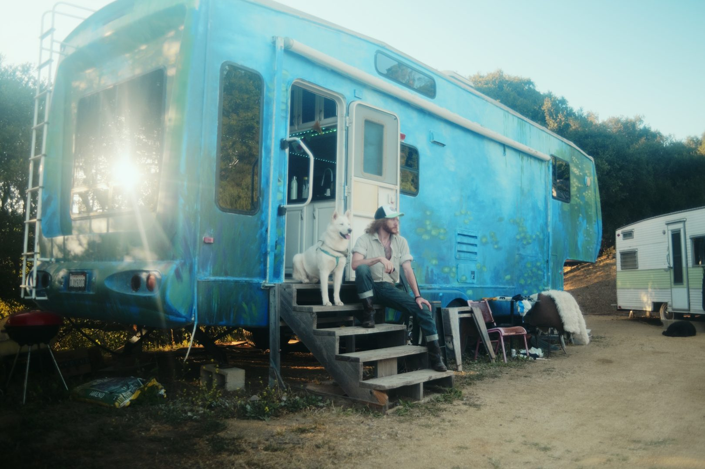<span class="act-txt"><span class="act-n"></span><span class="act-t" id="t-origin">Origin</span><span class="act-cap">A suicide attempt cracked open the story I was living. What came through the crack was the pen.</span></span></header>
<div class="act-body"><div class="wrap ch7"><section class="sub7" id="s-origin"><div class="ed"><p class="lede">We all know you need a story to know where you're going, to tell people what you're doing, to make a sale, to raise money, to build something that didn't exist before. What's not obvious is that story is the operating system of human identity, of culture, and of the very economy we live in.</p><p>I learned that the hard way. A decade ago I came to the end of my old story, and I tried to end my life with it. I ended the character I'd been living instead, and woke up to the realization that this was all a narrative, and I held the pen. So I used the power of story itself to turn my life into an adventure. Story was my only currency, and it was enough. I traveled across the planet chronicling solutions and deprogramming the economic myths that keep us stuck in a world we don't want, and I found answers to the world's greatest problems everywhere. Brilliant visionaries on every continent struggled to communicate the value and meaning of what they were doing, so the answers to humanity's biggest questions stayed invisible, illegible and impossible, even to the people building them. Then I hit the end of that story too. Nobody was coming to save us. Nobody was going to fund what I'd found.</p><aside class="q"><p class="pq">“I ended the character I&#x27;d been living instead, and woke up to the realization that this was all a narrative, and I held the pen.”</p></aside><aside class="s"><div class="stat"><b>10 yrs</b><span>chronicling solutions</span></div><div class="stat"><b>5</b><span>continents</span></div></aside></div></section><section class="sub7" id="s-the-impossible"><div class="ed"><h3 class="subh">The Impossible</h3><p>So I said fuck it. Someone has to build the bridge. Someone has to fund our evolution. Now I had to do the impossible. From a trailer in California, I had to build a company in alignment with my evolutionary values, walking people through the same mythic journey I'd walked, the Metamyth, and make enough money to reunite with the revolutionary romance I'd sought all my life. Completely broke, pulling myself up by cowboy bootstraps, living the Adam Smith myth of the rugged individual in a trailer, buying dog food with a credit card, separated from my immigrant fiancée by a border.</p><div class="wide"><p class="pq"><span class="mk">“</span>Someone has to build the bridge. Someone has to fund our evolution.<span class="mk">”</span></p></div><p>I learned sales, marketing, branding and fund structures in the heat of having to use them. I pulled together a team of volunteers. I built and designed a product, a system, a technology that blew the minds of everyone who experienced it, including mine. And the gurus taught a religion of suffering they called busyness, and it didn't work.</p><p class="lift">What actually worked was easiness.</p><p>Having an authentic story. I spoke a new story into LinkedIn, and it connected, qualified and attracted the right leads and converted them. The first client who paid us was a banker, one of the very people I used to protest. He said, "I don't know what you're selling, but I want it." Everyone we ran through this system who truly committed to a new story transformed. The first person we did it with raised $18,000. And the story I'd set out to tell transformed me. Finally, the purpose drew in a $16,000 sale from a climate scientist we transformed in a single session. He said paying that much was what made it work. I had told a new story until it was true.</p><aside class="tq"><p class="pq">“I was nervous about paying so much for this, and I got everything I wanted … I&#x27;m set for the next year.”</p><p class="cite"><b>Julien Emile-Geay</b><span>Climate scientist</span></p></aside><div class="wide"><p class="pq"><span class="mk">“</span>I had told a new story until it was true.<span class="mk">”</span></p></div><p>By the time I told her, "Babe, we did it. We can reunite," the relationship was dead, killed by the dragons of scarcity and separation. I lost the love of my life, my old identity, everything I believed in, and so many old friends. No one understood what I was doing or what I was becoming.</p><p>I broke down, took my own medicine and ended my old story. I was not a victim. I was the author of this story. The system didn't do this to me. I did. And for the rest of my life I will work to make sure that no visionary carrying something the world needs, no artist or dreamer or healer, no one trapped inside the system, has to go through what I went through. I left the country, and my heartbreak became the crack into the next world.</p><figure class="wide full">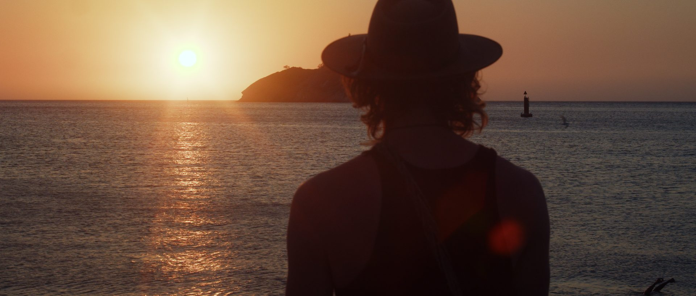</figure></div></section><section class="sub7" id="s-the-metamyth"><div class="ed"><h3 class="subh">The Metamyth</h3><p>Reality is story-shaped. The same structures that make a great book or an addictive series run human consciousness itself, and the brands and economies that create our world. The Metamyth is the ancient pattern that gives those stories meaning. We take founders on the journey of a lifetime to rewrite their story into an epic quest and a magnetic brand narrative that attracts people, resources and opportunities, a story that becomes more real the more you tell it.</p><aside class="q"><p class="pq">“Reality is story-shaped.”</p></aside><p>Metamyth is the transformation system that gives you yours. It finds the story inside a person, a project or a movement, turns the wound into the gift and the crisis into the calling, and forges it into everything the mission needs: the strategy, the brand, the offer, the tribe, the future. Nothing systematically increases the value of a person or an organization more than its story, and yet the greatest stories in the world are unsung.</p><aside class="q"><p class="pq">“Nothing systematically increases the value of a person or an organization more than its story”</p></aside><p>People who've crossed call it mind-blowing, like dying and being reborn.</p><figure class="span tblock long"><span class="tb-mk" aria-hidden="true">“</span><blockquote>I feel like I have a new nervous system. I honestly feel like I have entered a different reality. I am synchronized at mind, body, spirit. The story is real. My story is real. The weak parts of my story are what make it strong. The story itself is invincible. Come at me with what you got. You cannot take it down. I am a scientist. I am a doctor. If anyone with a rational analytical mind is doubting this process, stop and listen. Throw everything you have got at this. Zachary is the real deal. The Metamyth is the real deal. This is how it is done.</blockquote><figcaption><p class="cite"><b>Gareth Thompson</b><span>Doctor</span></p></figcaption></figure></div></section><section class="sub7" id="s-the-story-keeps-storying"><figure class="subband">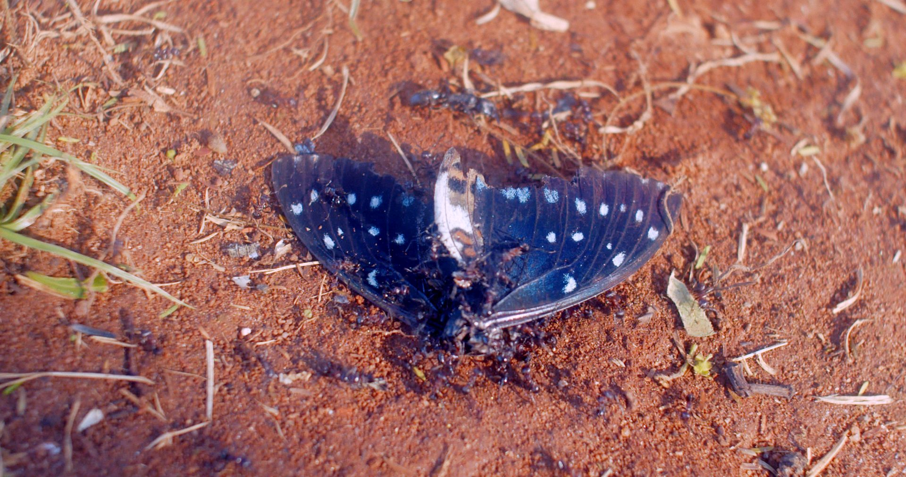<figcaption><span>The real story was always there.</span></figcaption></figure><div class="ed"><h3 class="subh">The Story Keeps Storying</h3><p>What happens when someone rewrites their life story? In our experience, everything changes, and it changes fast.</p><div class="span"><ul class="proof">
<li><strong>J Friday</strong> was the first person I ever coached, before I was even thinking about a business. She was homeless, carrying a plan for community wealth nobody would hear. She went viral, became one of the top voices on Substack, landed in the national press, and the Scottish government changed its policy.</li>
<li><strong>Steve Keen</strong> predicted the 2008 crash and spent a decade being ignored. After three sessions he raised $18,000 in a single webinar. Within months he was pulling a million views a week, sitting on the biggest podcasts in the world, and talking with political parties across the UK.</li>
<li><strong>Michael Haupt</strong> studied civilizational collapse for decades with no way to make it land. After one ninety-minute session he wrote a 30,000-word book in 28 days, launched a new brand, and watched his videos go from a hundred views to seven thousand.</li>
<li><strong>Kevin Howard</strong>, a former banker, achieved everything the game promises and found it was breadcrumbs. After his Metamyth he started a podcast and called it Breadcrumbs.</li>
</ul></div><div class="span tqpair"><figure class="tq2"><blockquote class="pq">“If you were one of the 4 million who just watched my video on Scotland&#x27;s community wealth building bill, congratulations. You just made it into the history books.”</blockquote><figcaption><p class="cite"><b>J Friday</b><span>Community wealth</span></p></figcaption></figure><figure class="tq2"><blockquote class="pq">“Brother Zachary, I am undone. The story reads like the narrative of my Akashic Records. What words describe my feeling in this now moment? Fulfillment. … Our quest has begun.”</blockquote><figcaption><p class="cite"><b>Kevin Howard</b><span>Former banker</span></p></figcaption></figure></div><p>And that's just the beginning of our story, because the whole point of Metamyth is that every personal story carries the soul of the collective one. If all the problems in the world are stories, and come on, we know they are, then look around. Politics is theater. Cult brands hypnotize the masses. And money, pure fiction, proves that a story based on nothing but belief can rewrite reality itself. So what could a true story do? What could yours do?</p><figure class="wide full"></figure><div class="wide end"><p class="pq">So what could a true story do? What could yours do?</p></div></div></section><a class="next7" href="#calling"><span>Next · Chapter 02</span><b>Calling →</b></a></div></div>
</section><section class="act" id="calling" aria-labelledby="t-calling">
<header class="act-card"><span class="act-txt"><span class="act-n"></span><span class="act-t" id="t-calling">Calling</span><span class="act-cap">Everything breaking in the world right now is the opportunity of a lifetime, hiding in plain sight. The broke visionaries, the dying solutions and the trillions with nowhere to go add up to the most undervalued asset on earth. We'll show you exactly where it is.</span></span></header>
<div class="act-body"><div class="wrap ch7"><section class="sub7" id="s-the-calling"><div class="ed"><p class="lede">You already know the story we don't want. A casino economy betting against life, tech lords building escape pods instead of fixing the planet we're on, and a meaning crisis that has almost everyone wondering if their life matters. The story that ran the world for five hundred years is ending, and you can feel it in your body.</p><aside class="tq"><p class="pq">“… the idea of separation that ran rife and left us isolated, fragmented and disempowered, allowing us to be potted and controlled as bonsai humans.”</p><p class="cite"><b>Jay Cousins</b><span>Kinship Quest</span></p></aside><figure class="inl">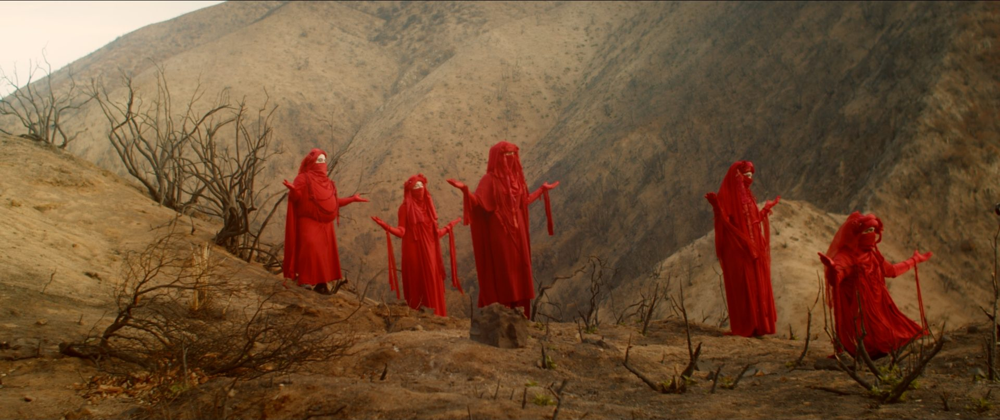</figure><p>When everything fake becomes infinite, everything real becomes priceless. Think about how many people don't identify with the story they're living. Think about how many are about to lose their jobs and their purpose to AI, hundreds of millions by most estimates. Every one of them is going to go looking for a story, and the demand for meaning is endless. Personal development is a market headed for $67B by 2030, and impact capital is piling up with no system to deploy it. The meaning crisis is becoming the meaning economy, the greatest economic transformation in the history of humankind, and whoever writes what comes next gets to author the future itself: how we price value, how business works, what wealth even means.</p><aside class="q"><p class="pq">“When everything fake becomes infinite, everything real becomes priceless.”</p></aside><p>The realest solutions on earth already exist, and most of them are dying invisible. That's what broke my heart. I've filmed them on five continents. The people carrying them are broke and burned out, because the story isn't storying: nobody can see what they're holding, sometimes not even them. Meanwhile $124 trillion is about to change hands, to a generation that wants its money to mean something, and the best the old system can offer them is seven tech companies and private equity eating the planet.</p><div class="span"><div class="v6 v6-opp">
  <span class="label">Calling · the opportunity</span>
  <h3 class="v6-h">Two groups that need each other, separated by one missing story.</h3>
  <div class="opp-row">
    <div class="opp-side">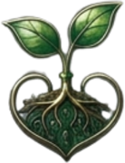<b>The visionaries</b><p>Real answers to our crises, carried by people who are broke and burned out.</p><span class="opp-n">valued at <i>zero</i></span></div>
    <div class="opp-mid"><span class="opp-line" aria-hidden="true"></span>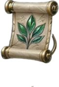<b>The missing story</b><p>Whoever makes the value legible stands right where the money is going.</p><span class="opp-line" aria-hidden="true"></span></div>
    <div class="opp-side">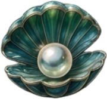<b>The capital</b><p>A generation inheriting wealth and wanting its money to mean something.</p><span class="opp-n"><i>$124T</i> about to change hands</span></div>
  </div>
  <p class="v6-foot">And the demand for meaning: personal development, a market headed for $67B by 2030.</p>
</div></div><figure class="inl"></figure><p class="lift">That looks like a tragedy, and it&#x27;s the investment opportunity of a lifetime.</p><p>All that value is locked on the other side of the old story, out of sight because it can't be told in the old story's terms, and whoever makes it legible gets to stand right where the money is going.</p><figure class="inl"></figure><p>Right now we're focused on the visionaries, the regenerators, the changemakers. They're our bet because they're the ones holding the solutions. Help them, build the company on that, and we earn the right to scale to everyone else looking for meaning. Making purpose pay is the missing piece in the whole regenerative movement, and that's our quest: a decade-long journey to build the bridge between the solutions the world needs and the people and capital looking for them.</p><aside class="q"><p class="pq">“Making purpose pay is the missing piece in the whole regenerative movement”</p></aside></div></section><section class="sub7" id="s-the-heart-of-the-world"><figure class="subband">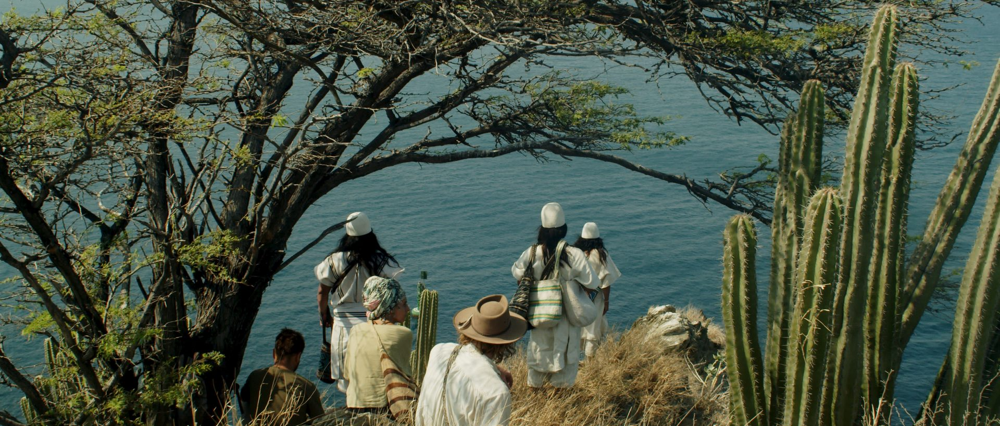</figure><div class="ed"><h3 class="subh">The Heart of the World</h3><p>The call came from the heart of the world. Years earlier, on the film expedition where this whole story began, I'd found the Arhuaco and the Kogi in the Sierra Nevada de Santa Marta, the mountains they call the heart of the world. They lived without money and never lost their connection to the old ways. For five centuries colonizers tried to convince them the default story was reality, and they never believed it. They pulled me back in for an adventure, and friends from the road converged there with me and became teammates.</p><figure class="inl">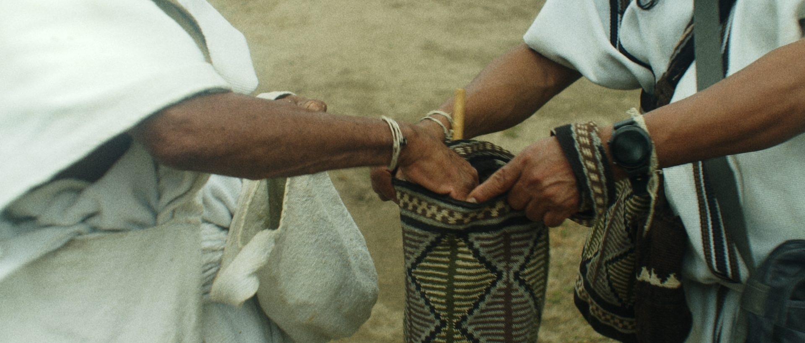</figure><p>That's where we met Cataleya, living in the jungle with a newborn baby on her back. She had worked on big teams carrying impossible missions that had <em>changed the world</em>, at some of the biggest companies ever, on track for director at Tesla, Carbon and Peloton. She watched the founders become megalomaniacs, and the gap between the mission claimed and the reality lived grew until it swallowed her belief, until she left civilization to live amongst the indigenous in the Amazon, learning from the medicine, learning from the grandmothers and grandfathers, that it's us who need to change.</p><aside class="q"><p class="pq">“It&#x27;s us who need to change.”</p></aside><p>Together we set out to build an organization, a team, a product, a system.</p></div></section><section class="sub7" id="s-the-cast"><figure class="subband"><figcaption><span>We don&#x27;t fit in this world. We&#x27;re here to build the new one.</span></figcaption></figure><div class="ed"><h3 class="subh">The Cast</h3><p>We know our customer, because our customer and the hero of our journey are the same person. They're purpose-driven visionaries, tired of the old system because they're here to build the new one. They're running companies, building organizations, launching startups. They're done protesting, done complaining, done spiritually bypassing. They know it's time for change and that they're the ones to make it. What most of them can't do yet is tell the story of what they're building, and that's where we come in.</p><aside class="q"><p class="pq">“Our customer and the hero of our journey are the same person.”</p></aside><p>And around us is the regenerative movement, an interconnected, growing community conference-hopping, going on quests with indigenous wizards and building the future together. A rag-tag, brilliant group of misfit genius polymaths, joyfully aware of how broken the system is and building the new one. We're all collaborating toward this shared future, and yet few have cracked the economics of their own business or their funding, and nobody has an offer. Till now. This network is our secret weapon, our talent pool, and the venture community we're weaving into the most valuable IP on earth: people from around the world with real answers to the greatest crises of our time.</p><aside class="tq"><p class="pq">“We&#x27;re all as crazy as each other. And we believe in this invisible force and this world that doesn&#x27;t exist yet.”</p><p class="cite"><b>Matt Ross</b><span>Kinship Quest</span></p></aside><figure class="inl">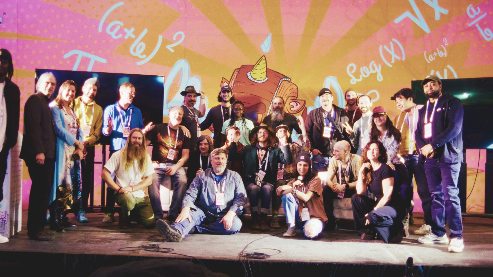</figure><p><strong>If you've never fit the box, you're already one of us.</strong></p></div></section><a class="next7" href="#quest"><span>Next · Chapter 03</span><b>Quest →</b></a></div></div>
</section><section class="act" id="quest" aria-labelledby="t-quest">
<header class="act-card"><span class="act-txt"><span class="act-n"></span><span class="act-t" id="t-quest">Quest</span><span class="act-cap">The people running this world don't have the truth. They have the story. We hand the story back to the people who carry the truth, and it changes everything fast: a doctor's five-year search answered in three hours, 26 calls booked in a single day, a crew of 21 visionaries, and a company that runs as a community.</span></span></header>
<div class="act-body"><div class="wrap ch7"><section class="sub7" id="s-making-purpose-pay"><div class="ed"><h3 class="subh">Making Purpose Pay</h3><p class="lede">We all have a story, and it's worth far more than any of us realizes. You could hold the cure for cancer, and if you can't tell it in a way that makes people care, nothing happens. Nothing changes. The people who've taken over this world don't have your truth, your wisdom or your experience. They have the story. The whole thing runs on story.</p><aside class="q"><p class="pq">“The whole thing runs on story.”</p></aside><p>Here's how the journey runs. It starts with the Origin, a self-guided initiation into the seven arts of storytelling that reprograms your narrative operating system: you meet the author of your life and take the pen back. A session with Cataleya lands the new story in the body, and a session with me crosses the threshold and closes the old story. Then the Metamyth itself. The Calling turns suffering into assignment. The Quest finds your star, names your tribe and forges the power you carry. The Sword Protocol forges your transformation into a scalable methodology. The Vision, the Mission, the Request and the Re-source architect the world your story builds and ground it in real resources. The Return looks seven generations forward. Then we craft your metamyth, the full arc from origin to legacy, a story so fully lived it begins to travel on its own, and you learn to wield it as pitch, as invitation, as the narrative spine of everything you build.</p><div class="span"><div class="viz mp pm" id="journeymap">
  <span class="label">Quest · the journey</span>
  <h2>The journey, stop by stop.</h2>
  <p class="lede">Behind every threshold is the gold. Walk it, and watch each land come alive as you clear it.</p>
  <div class="pm-bar"><div class="mp-chips"></div><button class="pm-walk">Walk the map →</button></div>
  <div class="mp-grid"><aside class="mp-panel"></aside><div class="pm-stage"><div class="pm-cam">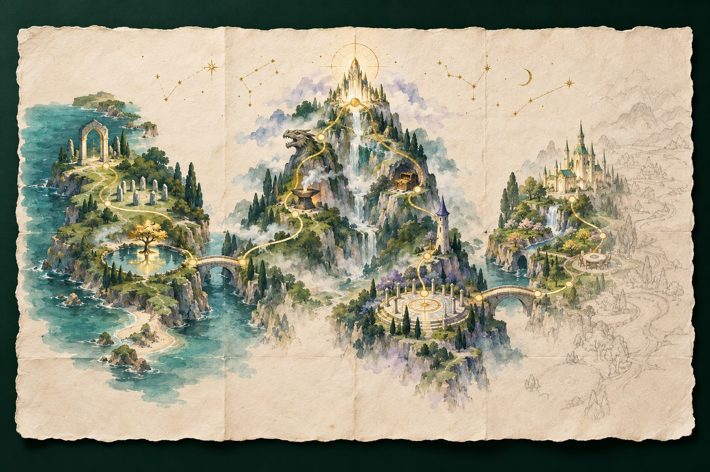</div></div></div>
</div></div><p>There are three ways in. Clients pay high-ticket prices. Contributors trade their skills and time. And when we believe in a project's story, we invest in it and share in its results.</p></div><div class="viz" id="doors">
  <span class="label">Quest · the doors</span>
  <h2>Every door leads deeper into the same story.</h2>
  <p class="lede">People come in at the level their life or venture is ready for. Many who cross stay on as members and co-authors, and some bring the next person in.</p>
  <div class="doors">
    <article class="door"><span class="lift"></span>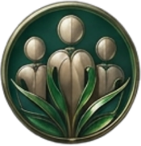<span class="step">The community</span><h3>Kinship</h3><div class="price">$250–500</div><div class="unit">a month</div><p>The circle that keeps holding you after the journey.</p></article>
    <article class="door"><span class="lift"></span>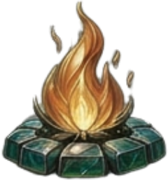<span class="step">The group journey</span><h3>The Kinship Quest</h3><div class="price">$3,500</div><div class="unit">a seat · $7,000 guided</div><p>Twenty-one people crossing their thresholds together, three seasons a year.</p></article>
    <article class="door"><span class="lift"></span>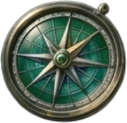<span class="step">One to one</span><h3>The Adventure</h3><div class="price">$7–15K</div><div class="unit">a journey</div><p>For visionaries already in motion who need it sharp, now.</p></article>
    <article class="door"><span class="lift"></span>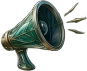<span class="step">Organizations</span><h3>Brands and teams</h3><div class="price">$21K+</div><div class="unit">an engagement</div><p>A whole company finding the story it's really living.</p></article>
    <article class="door soon"><span class="lift"></span>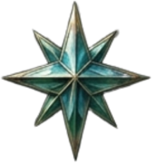<span class="step">In conversation now</span><h3>The higher table</h3><div class="price">$50K+</div><div class="unit">not in the forecast yet</div><p>Bigger work with brands and leaders, already in conversation.</p></article>
  </div>
  <div class="spiral-line"><svg width="46" height="24" viewBox="0 0 46 24" aria-hidden="true"><path d="M44 12c0 6-8 10-21 10S2 18 2 12 10 2 23 2c8 0 13 2 16 5" fill="none" stroke="currentColor" stroke-width="1.4"/><path d="M39 1l1 7-7-1" fill="none" stroke="currentColor" stroke-width="1.4"/></svg>Client, then member, then co-author of the mission. The people who create the demand are the same people who meet it.</div>
  <div class="side-door">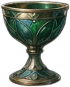<div><b>Partner projects</b><span>When we believe in a project's story, we invest in it: it comes onto the journey, and we share in what it raises and launches.</span></div></div>
</div></section><section class="sub7" id="s-the-kinship-quest"><div class="ed"><h3 class="subh">The Kinship Quest</h3><p>We set out to take a whole community through the Metamyth journey together, in a radical many-to-many system.</p><p>We hired the best business coaches we could find. The coaches of the coaches of the coaches. We described our vision and they told us, explicitly, do not do that. Don't do variable pricing. Don't give people different levels of support. Keep it simple. Simple scales, complex fails. Optimize everything toward as much money as possible, as fast as possible.</p><p>We said fuck the money. We would do it for community, as a community.</p><p>Weeks before the deadline, we broke down. The team was fracturing. The deadline kept coming. I was in bed at eleven at night when Cataleya called. Have you called this person? Have you talked to this person? I opened my WhatsApp and started sending messages. I booked 26 calls in a single day, and out of them came a crew of 21 of the most incredible visionaries from around the world.</p><figure class="inl">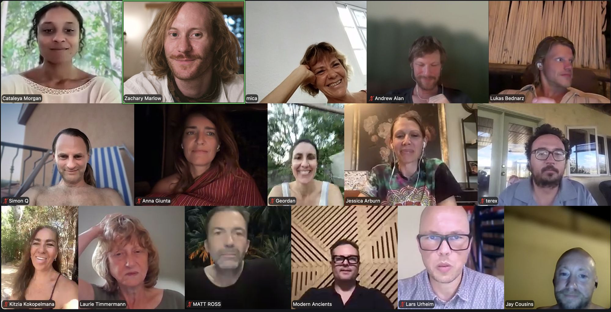<figcaption>Our first cohort and contributors, together on a call.</figcaption></figure><p>We made $35,000 in sales. But more powerfully, we pulled in 9 contributors, handpicked to earn their way in with their skills and join the mission, and 3 partner projects that paid us nothing, because we invested in them as partners. We went from broke to investors. And it worked.</p><aside class="s"><div class="stat"><b>21</b><span>visionaries in the first cohort</span></div><div class="stat"><b>$35K</b><span>first cohort sales</span></div><div class="stat"><b>9</b><span>contributors</span></div><div class="stat"><b>3</b><span>partner projects</span></div></aside><figure class="span tblock long"><span class="tb-mk" aria-hidden="true">“</span><blockquote>Looking back I am still in awe of how important it was to step into the Metamyth experience. It was the catalyst and necessary step to stepping into the fullest version of who I am today. From the very acceptance of this process, everything activated within. My cells changed and the remembrance of mission came into clarity. I am now walking the path meant for me and able to see with great clarity how to serve humanity in my own unique way. I have aligned with my highest mission and am in constant gratitude for how I can serve others in bringing in this New Earth. Serving others in the greatest remembrance and sharing inspiration and hope every single day.</blockquote><figcaption><p class="cite"><b>Jessica Arburn</b><span>Founder, Dose of Hope</span></p></figcaption></figure></div></section><section class="sub7" id="s-community"><figure class="subband"><figcaption><span>We were never meant to transform alone.</span></figcaption></figure><div class="ed"><h3 class="subh">Community</h3><p>Community is the atomic unit of transformation. How crazy that the whole world economy is organized around individuals? Personal transformation is a scam in isolation, because you're fighting the way your brain is wired as a social species. We always and only transform in community. And yet we're living in the stone age of coaching, one expert talking at one client in one room.</p><aside class="q"><p class="pq">“How crazy that the whole world economy is organized around individuals?”</p></aside><figure class="inl">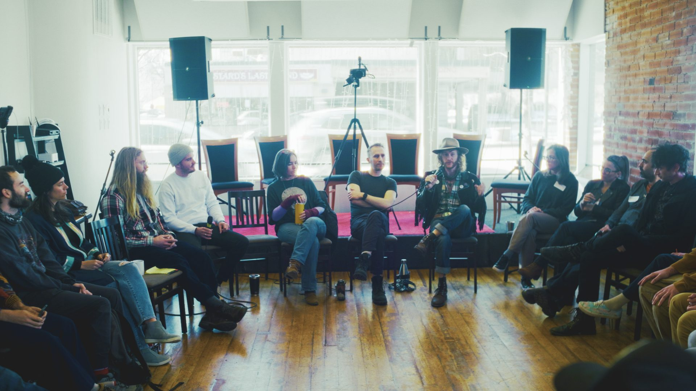</figure><p>So the group is the technology. The Kinship Quest runs many-to-many: clients guide each other, they guide us, and the breakthrough often comes from someone in the room who walked the path a few weeks earlier. By the end, the founders in that room were backing each other's work. I'm sitting there watching it like, holy shit, we built a thing that teaches itself.</p><aside class="q"><p class="pq">“We built a thing that teaches itself.”</p></aside><p>The magic of this community is mind-blowing. People crossing their thresholds in 30-minute sessions. It's transformed us as much as, if not more than, anyone. It's pure magic.</p><figure class="span tblock"><span class="tb-mk" aria-hidden="true">“</span><blockquote>How do you describe a process that reorganizes you on a cellular level? … You trip the circuit on deep connection and ruined all my other in-person communities.</blockquote><figcaption><p class="cite"><b>Dr. Geordan Shannon</b><span>Building Unexia</span></p></figcaption></figure><p>By the end of that journey I didn't know who I was. Every old illusion and belief and limit was destroyed. The campfire burned away everything untrue. On one of our calls, after 21 people crossed their thresholds together, a silence fell. Two minutes, pregnant and unplanned, everyone in complete and total presence. In that silence I found who I really was and had always been. I felt connected to all the misfits and all the visionaries, everyone who sees a world that doesn't exist yet because they're here to create it. I felt everyone we're here to help, everyone out there who needs this and is waiting for us to lead the way into the new future. And the way there isn't more doing. It isn't busyness, more action, more conferences. It's showing up and being ourselves, authentically.</p><figure class="span tblock"><span class="tb-mk" aria-hidden="true">“</span><blockquote>It&#x27;s almost like going to church. I&#x27;d imagine that&#x27;s what it&#x27;s like to go to church … around people who are the same as you and believe in the same thing, a life committed to something they can&#x27;t see. … And there&#x27;s this higher power that we&#x27;re all following and have no idea what it is, and we&#x27;re willing to sacrifice ourselves on it. And it&#x27;s awesome. I love all of you.</blockquote><figcaption><p class="cite"><b>Matt Ross</b><span>Kinship Quest</span></p></figcaption></figure><p>Almost exactly a year after I dreamed of running this company as a community, it was alive and more fantastic than I could have imagined. I'd gone from a lone visionary, heartbroken in a trailer, struggling to make a sale, to $90,000 in sales and a community of the most incredible people imaginable, actually doing the thing: federating, interconnecting, truly functioning as a community.</p><aside class="s"><div class="stat"><b>$90K</b><span>in sales, first year</span></div></aside><p>I started telling a story, and my entire reality transformed. That is the proof that this works.</p><p>Scaling THAT is going to be the hardest part.</p></div></section><a class="next7" href="#vision"><span>Next · Chapter 04</span><b>Vision →</b></a></div></div>
</section><section class="act" id="vision" aria-labelledby="t-vision">
<header class="act-card"><span class="act-txt"><span class="act-n"></span><span class="act-t" id="t-vision">Vision</span><span class="act-cap">Every system wrecking the planet is a story gone wrong, and story is the oldest technology we have. So we're building the technology to rewrite them at the root: a living web that weaves millions of lives into one story, until the world runs on a story people actually chose.</span></span></header>
<div class="act-body"><div class="wrap ch7"><section class="sub7" id="s-technology-of-meaning"><div class="ed"><h3 class="subh">Technology of Meaning</h3><p class="lede">Story is the original technology. It's how humans got from scattered tribes around fires to civilizations, and every system running the world today is a story system that's evolved right up to the point of blowing itself up. The market coordinates us through price, so we fight over fake value. The feed coordinates us through attention, so our stories become someone else's product. Now AI shows up, the first technology you program with story, and the context that shapes our lives turns out to be the key to using it with purpose. Turning data into meaning is what stories do. We're all getting tired of tech that harvests us and drowns us in slop. So we're building the kind that makes you more human.</p><p>Right now the tech is me up all night running chains of prompts through the Metamyth sauce to build one client's story. Even that duct-taped version, on off-the-shelf tools, produces syntheses that blow people's minds. It's blown mine. So we're building the first level of the game: a living book you write in that rewrites your life. You talk, type or snap a photo of your journal, an AI guide walks you through it, and you get a reading of your own story after every chapter. It makes delivery easier, opens the journey to way more people, and every story makes the system wiser. And it explicitly won't write for you. It helps you tell your own story, because in a world drowning in slop, that's the edge.</p><aside class="tq"><p class="pq">“Holy shit. You made sense of the madness.”</p><p class="cite"><b>Michael Haupt</b><span>Civilization researcher</span></p></aside><p>It maps your story and turns it into a system you can actually interact with, visualize, turn into the game of your life and project into the future. It maps the world around you, your offering, your vision, your values, everything a brand is. It connects you to your people and to others who struggle with what you've been through, which is really what marketing is. It helps you embody the dream and the outcome you want to get to, which is what makes an offer attractive. And it holds a vision of the future that you make bigger and bigger, that grows with the community and becomes your fundraising and your mission, a real embodied action plan and organizational structure. You can run an organization through the story. You can run your life through it. Connect it to your workspace, your calendar and your notes, and you get agentic intelligence wrapped in the context of your story, so agents and people can immerse themselves in why what you do matters and how they can contribute. That's what story is.</p><div class="span"><div class="v6 v6-gm"><span class="label">Vision · the game</span><h3 class="v6-h">The game of your life.</h3><p class="v6-lede">Each level is built from the one before it, and each one does a job the old business game charges you for.</p><ol class="gm"><li style="--i:0"><div class="gm-t"><span class="gm-n">01</span><b>Your story</b><p>A living book that maps your story and turns it into the game of your life.</p></div><div class="gm-r"><span>is</span><b>the source</b></div></li><li style="--i:1">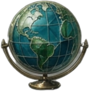<div class="gm-t"><span class="gm-n">02</span><b>Your world</b><p>Your offering, your vision, your values, everything a brand is.</p></div><div class="gm-r"><span>does the job of</span><b>your brand</b></div></li><li style="--i:2"><div class="gm-t"><span class="gm-n">03</span><b>Your people</b><p>Everyone who struggles with what you&#x27;ve been through.</p></div><div class="gm-r"><span>does the job of</span><b>your marketing</b></div></li><li style="--i:3"><div class="gm-t"><span class="gm-n">04</span><b>Your offer</b><p>The dream and the outcome you embody.</p></div><div class="gm-r"><span>does the job of</span><b>your sales</b></div></li><li style="--i:4">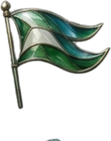<div class="gm-t"><span class="gm-n">05</span><b>Your mission</b><p>A vision that grows with the community into an action plan you can run an organization through.</p></div><div class="gm-r"><span>does the job of</span><b>fundraising, the org chart</b></div></li><li style="--i:5">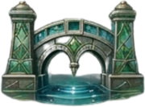<div class="gm-t"><span class="gm-n">06</span><b>Multiplayer</b><p>Tell your story to advance, and meet the person who just crossed your threshold.</p></div><div class="gm-r"><span>does the job of</span><b>the social network</b></div></li><li style="--i:6">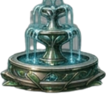<div class="gm-t"><span class="gm-n">07</span><b>The living web</b><p>Stories inside stories, coordinating at scale in an economy of gifts.</p></div><div class="gm-r"><span>does the job of</span><b>the market</b></div></li></ol></div></div><p>Here's where it gets fun. All that data, wrapped in context, connected to purpose, seeking meaning, can create incredible synchronicity between players in this new game. It goes multiplayer, because of course you've got to tell your story to someone to advance. It becomes a social network that connects you to the people who fit your story, from the words you use, the way ads blast us with toothpaste right after we've spit in the sink. Imagine you pour out your soul, share a need, and immediately someone who just got through that threshold connects with you, and their offer is crystal clear. It all runs on our own video calling that stores locally on your device, building a graph of your interactions that you control, not big data. And the more giving and open you are with it, the more it enriches the network and the more it repays you in synchronicity and connection. All of us and everything we need is one story away.</p><p>Do that for thousands of people and you get a living web. The internet we have connects pages and harvests attention. This one connects purposes: my story to your need, your gift to this project, this project to the investor who's been looking for exactly it. And the real magic is holonic, a part that contains the whole. Your story is yours, and it's part of someone else's story, and theirs is part of someone else's. Weave them together and we can tell a shared story of stories that lets us coordinate at vast scales without losing coherence, because it's distributed. The intelligence inside it, the storyweaver, works the way a brain does, holding a model of each story, noticing what fits and learning as it goes, so it sees the matches no human could spot. It runs on the sovereign web, owned by the people who use it. If that sounds crazy, we have wizard nerds around the world, our CTO Terex Price among them, already building pieces of it, all the way down to distributed computing that gets us off big tech entirely.</p><aside class="q"><p class="pq">“The internet we have connects pages and harvests attention. This one connects purposes”</p></aside><figure class="inl">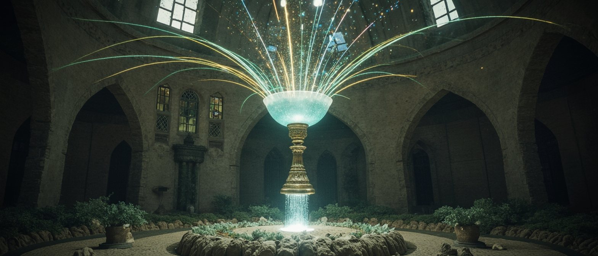</figure><p>Point all of that at the world's greatest problems, which are the greatest opportunities to create value together, and you get an economy of gifts. We need to give our gift to make it flow, and what we have, someone else needs. We have the capacity to solve for food, water and housing, and we have enough resources. They're just not connected. The homeless person who plays the drums would fit right in with the person with a spare room who plays bass. People connect through who creates the most meaning, expresses themselves the most authentically and helps the most people, instead of who pays the most. That brings us back to currency, to flow, not accumulation, as the true source of wealth and abundance. The more resources flow, the richer our networks and our communities. My story needs your story to succeed.</p><aside class="q"><p class="pq">“My story needs your story to succeed.”</p></aside><p>Every platform shift had a killer app that pulled people onto it. Finding your story is that app, and Metamyth is the front door. The thing that's been pulling humanity away from its purpose becomes the thing that helps us find it again.</p></div></section><section class="sub7" id="s-how-we-changed-the-story"><figure class="subband"></figure><div class="ed"><h3 class="subh">How We Changed the Story</h3><p class="kline">This is a vision from the future, remembering its way back to us.</p><p>It began one story at a time. People came through the journey and walked out authors of their own lives, and the narrative intelligence holding their stories began to see the whole field at once: whose gift answered whose quest, which founder needed which storyteller, where capital looking for meaning could finally land. Every story it held made the next match sharper, and underneath us grew a living web that let thousands of people coordinate around shared purpose the way markets once coordinated around price. Our stories became our media, true stories told by the people living them, shaping a culture the feed used to own.</p><p>Then the circle widened. The same many-to-many system that made our community fall in love with each other let us take entire companies through the Metamyth, and the companies running the old game, the ones that had spent decades wrecking the world, started paying us to rejoin it. Department by department they evolved into a game of purpose: from busyness to easiness, from marketing to movement, from brand to world. Every company that crossed over became a story that pulled in the next. Better than revolution: evolution.</p><p>And the circle widened again. The ventures on the other side of the stories found their funding, launched their offers and carried their solutions out into the world. Moving a billion dollars into regeneration took just 3,333 of them hitting $25,000 a month in revenue for a year, or raising $300,000, which is exactly what we're raising now. As partners, we shared in what they built, and their stories brought the next wave into the journey, so every turn of the spiral fed the next.</p><aside class="s"><div class="stat"><b>3,333</b><span>ventures at $25K a month</span></div><div class="stat"><b>$1B</b><span>moved into regeneration</span></div></aside><div class="span vcar" id="future" aria-roledescription="carousel"><span class="label">Vision · stories from the future</span><h3 class="vc-h">The cohort, speaking from the world we&#x27;re building.</h3><p class="vc-lede">In our Legacy session, each member of the first cohort told the story of the future from the other side, then looked back at us.</p><div class="vc-names" role="tablist"><button type="button" data-i="1" aria-label="Jay Cousins"><i>01</i><span>Jay Cousins</span></button><button type="button" data-i="2" aria-label="Andrew Alan"><i>02</i><span>Andrew Alan</span></button><button type="button" data-i="3" aria-label="T.R. Price"><i>03</i><span>T.R. Price</span></button><button type="button" data-i="4" aria-label="Laurie Timmermann"><i>04</i><span>Laurie Timmermann</span></button><button type="button" data-i="5" aria-label="Matt Golding"><i>05</i><span>Matt Golding</span></button><button type="button" data-i="6" aria-label="Jessica Arburn"><i>06</i><span>Jessica Arburn</span></button><button type="button" data-i="7" aria-label="mica"><i>07</i><span>mica</span></button><button type="button" data-i="8" aria-label="Dr. Geordan Shannon"><i>08</i><span>Dr. Geordan Shannon</span></button></div><div class="vc-track" tabindex="0"><figure class="vc-card" id="future-1"><span class="tb-mk" aria-hidden="true">“</span><blockquote>We broke our pots and bound ourselves through living threads that grew through a shared story of the best possible future. … We focused our attention on growing what we valued in the world and bore witness to our writing of reality until we found ourselves living in a state of ease and wonder that burst our hearts open with joy.</blockquote><figcaption><p class="cite"><b>Jay Cousins</b></p></figcaption></figure><figure class="vc-card" id="future-2"><span class="tb-mk" aria-hidden="true">“</span><blockquote>We shook free from the spells of fear, control, and separation. We embraced our intuition, our power, each other, the earth. And then we began to co-create with the song of life. The flourishing future.</blockquote><figcaption><p class="cite"><b>Andrew Alan</b></p></figcaption></figure><figure class="vc-card" id="future-3"><span class="tb-mk" aria-hidden="true">“</span><blockquote>What has to die is belief in what the current system is, and how concrete people have formed ideas around that system, so that they can embrace that death and rejoice in a new life.</blockquote><figcaption><p class="cite"><b>T.R. Price</b></p></figcaption></figure><figure class="vc-card" id="future-4"><span class="tb-mk" aria-hidden="true">“</span><blockquote>Service to self is one orientation. That&#x27;s what the system is based on. And it&#x27;s a system that shifts to the value of service to others. … It&#x27;s much more fun to be a global citizen.</blockquote><figcaption><p class="cite"><b>Laurie Timmermann</b></p></figcaption></figure><figure class="vc-card" id="future-5"><span class="tb-mk" aria-hidden="true">“</span><blockquote>There&#x27;s collective gratitude for the work that people did to get us here. It took a process and a healing and a journey to get from that crazy place we were to where we are now.</blockquote><figcaption><p class="cite"><b>Matt Golding</b></p></figcaption></figure><figure class="vc-card" id="future-6"><span class="tb-mk" aria-hidden="true">“</span><blockquote>I ran the underground railroad of leading those that lived in fear into love.</blockquote><figcaption><p class="cite"><b>Jessica Arburn</b></p></figcaption></figure><figure class="vc-card" id="future-7"><span class="tb-mk" aria-hidden="true">“</span><blockquote>There was something really big within her. And one day, she stepped into her full power and everything changed. Not just everything within her, but everything around her as well.</blockquote><figcaption><p class="cite"><b>mica</b></p></figcaption></figure><figure class="vc-card" id="future-8"><span class="tb-mk" aria-hidden="true">“</span><blockquote>She was one of the kindest badasses you&#x27;ve ever seen in this world. She was able to transform things from the garden through to financial systems, and she worked with the magic of the elements as a bridge between the old system and the new.</blockquote><figcaption><p class="cite"><b>Dr. Geordan Shannon</b></p></figcaption></figure></div><div class="vc-nav"><button type="button" class="vc-prev" aria-label="Previous">←</button><span class="vc-count">01 / 08</span><button type="button" class="vc-next" aria-label="Next">→</button></div></div><p>The skeptics who had been betting on the wrong future started investing in the right one. This is how we changed the story.</p></div></section><a class="next7" href="#mission"><span>Next · Chapter 05</span><b>Mission →</b></a></div></div>
</section><section class="act" id="mission" aria-labelledby="t-mission">
<header class="act-card">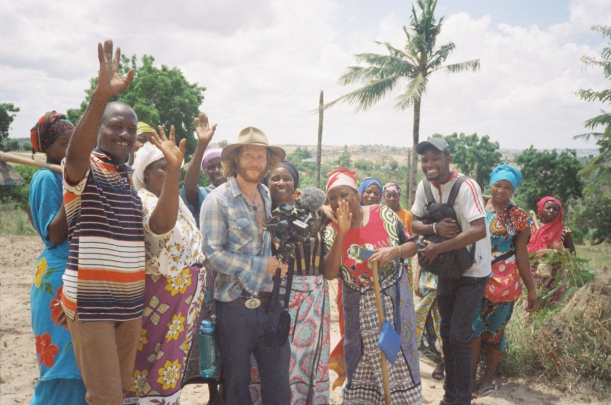<span class="act-txt"><span class="act-n"></span><span class="act-t" id="t-mission">Mission</span><span class="act-cap">The company that builds it, proving purpose pays better than the old game ever did and turning business into easiness. A crew of renegades walked out of Tesla, Hollywood and the White House to play this new one with us.</span></span></header>
<div class="act-body"><div class="wrap ch7"><section class="sub7" id="s-business-runs-the-world"><div class="ed"><h3 class="subh">Business Runs the World</h3><p class="lede">We all know it by now. Politics doesn't run things. Business does. It shapes the culture, it holds the narrative, and the people with the money rule the world.</p><aside class="q"><p class="pq">“Politics doesn&#x27;t run things. Business does.”</p></aside><figure class="inl">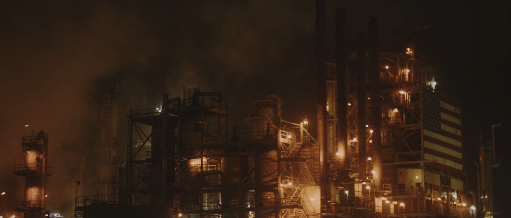</figure><p>Which means fewer people than ever need to be convinced to join the new world. And the way we're going to do it is by getting them to pay us to do it.</p><p>So let's stop protesting. Let's transform the companies and build new ones from scratch, and turn purpose-driven business into the most powerful, dynamic force for good on the planet. No greenwashing, no half-assed version of it: a better system that takes every flaw of the old one and systematically fixes it. A game where you help others help you help the world.</p><figure class="inl"></figure></div></section><section class="sub7" id="s-the-for-purpose-company"><div class="ed"><h3 class="subh">The For-Purpose Company</h3><p>The numbers are already in. In an age of collapsing trust, Edelman found that business is the only institution people see as both competent and ethical. Deloitte found that purpose-driven companies gain more market share and grow three times faster than their competitors on average, with 30% more innovation and 40% higher retention. Kantar found that brands with a high sense of purpose grew their value 175% over twelve years, against 70% for brands with a low one. That's just a company with a "purpose." Imagine purpose as the operating system, the navigation system for creating the future.</p><aside class="s"><div class="stat"><b>3x</b><span>faster growth for purpose-driven companies (Deloitte)</span></div><div class="stat"><b>40%</b><span>higher retention (Deloitte)</span></div><div class="stat"><b>175%</b><span>brand value growth, high-purpose brands (Kantar)</span></div></aside><p>The for-purpose organization blends the power of a for-profit with the heart of a nonprofit. We can bring in contributors. We can price flexibly, on the value we create, which makes the company even more profitable and dynamic.</p><p>Above all, our greatest power is community. And it's federation: a network of ventures sharing resources, talent, audiences, even capital, joined by cooperative, all-win agreements. Together we can scale in a circle, faster than the megacorporations that took over the world by scaling straight up.</p><p>It works for companies too, and this is where the money gets serious. Brands and teams pay us from $21K to find the story they're really living, and deals of $50K and up are in conversation now.</p></div><div class="viz" id="system">
  <span class="label">The story system</span>
  <h2>One story, and everything it grows into.</h2>
  <p class="lede">From the outside, Metamyth looks like six businesses: a transformation journey, its guides, a community, a media company, a technology and a venture network. Look closer and it's one living thing. Every part grows from the same seed, a person's true story, and every part feeds the others. Money runs through all of it like water through a garden.</p>
  <div class="chips" id="fChips" role="group" aria-label="Jump to a part"></div>
  <div class="flower">
    <div class="fstage"><svg id="fSvg" viewBox="0 0 1300 1130" role="img" aria-label="The story system: a person's story at the center, six parts around it, and the fund flowing through all of them"></svg></div>
    <div class="fpanel" id="fPanel" aria-live="polite"></div>
  </div>
</div></section><section class="sub7" id="s-the-story-engine"><figure class="subband"></figure><div class="ed"><h3 class="subh">The Story Engine</h3><p>For the last decade I've lived my life as a story and spent it like currency. It sounded insane. Turns out it was fucking brilliant, because it worked. I went straight to high ticket, and sales became a kind of therapy for me and the person across from me, an alignment that repels the wrong people and pulls in the right ones.</p><aside class="q"><p class="pq">“Sales became a kind of therapy for me and the person across from me”</p></aside><p>Pushy marketing turns you into a commodity and a salesperson. A great story builds a world around you that people want to be part of, and they come chasing you with their money to get in. Ours has hooked people so fast and so hard that it converts like crazy off a tiny reach, because I've been too busy selling to build the system that tells the story. That's what this capital fixes.</p><aside class="tq"><p class="pq">“Six posts in the past month or so, I have doubled my followers and gotten thousands of dollars in donations.”</p><p class="cite"><b>J Friday</b><span>Community wealth</span></p></aside><p>So we're building a transmedia production house and agency, a whole narrative universe with a family of characters: me, our clients, our co-creators, everyone telling the story together, from a banger phone video up to the cinematic work we've been shooting across the planet. Every dollar we spend builds an asset that keeps paying: an audience and a platform everyone shares, the marketing engine for the whole movement. Media built the culture and the reality we're all living inside. Take back the narrative and you create reality itself.</p><div class="wide"><p class="pq"><span class="mk">“</span>Take back the narrative and you create reality itself.<span class="mk">”</span></p></div><p>A client was so in love with the process that she forgot she paid me, then lined up ten referrals for our next program. My highest-paying clients light up talking about this as <em>our</em> project, and our contributors keep showing up again and again, the best talent funnel I've ever seen. Sales, hiring, fundraising, partnerships, all of it grows out of real relationships.</p><p>It gets easier by the day, because the story compounds. That's what easiness means: a business that runs on relationships and gets lighter the longer it runs. We're building the new economy cowboy style, on handshake deals, shooting first and asking questions later, while we architect an incorruptible all-win engine underneath it: contribution tracking and shared value.</p><figure class="inl"></figure><p>Easiness is also one of the biggest market opportunities there is: the information and service economy is booming. People are starting businesses that aren't really businesses, just a person with an Instagram account who helps people with one specific thing and goes direct to their audience. You can scale a person if you turn their experience into a transformational journey, and that's what the Metamyth gives you. Everyone on earth has been through something they can guide other people through. They can help a few people a month, scale that offering, connect with their people, and grow toward a greater game as they solve bigger problems and seek a purpose bigger than themselves and bigger than money. That's the game of easiness in a nutshell. It takes the weight of the economy off commodity production and the extraction of the earth's resources, and puts it into relationship, information, consciousness, culture, art and creativity.</p><aside class="tq"><p class="pq">“The mission that&#x27;s come through in this is to help my little army of givers become receivers.”</p><p class="cite"><b>Jessica Arburn</b><span>Founder, Dose of Hope</span></p></aside><p>And everything we figure out, we teach, and program into the operating system so the whole thing becomes a game. It always was one. So why not give it a story, make it actually fun, make it co-op, measure more than one number, and let the human stuff get more and more premium? We're creating the operating system for running your own organization, your media, your organic content, your sales offers, even adaptive websites, using technology natively to automate all the bullshit of the old business game. The whole thing becomes about creativity, and the rote productivity and busyness fall away. The experts in the old system are experts in a dead system, and we're writing the playbook for the living one.</p><aside class="q"><p class="pq">“The experts in the old system are experts in a dead system”</p></aside><div class="span"><div class="strip three" aria-label="Stills from our films">
  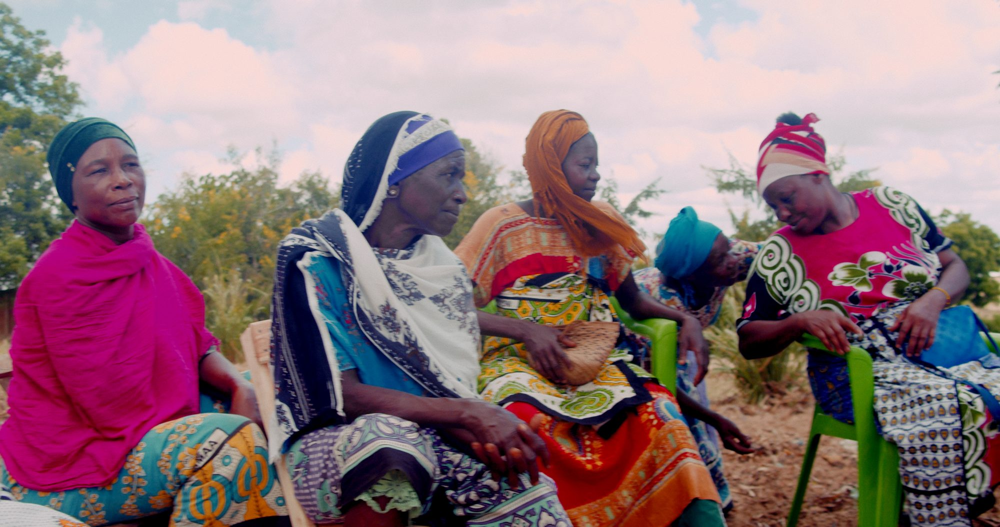
  
  
</div><p class="strip-cap">From the road: a decade of filming across five continents.</p></div></div></section><section class="sub7" id="s-the-crew"><div class="crew-block plate"><span class="p-corner-bl" aria-hidden="true"></span><div class="cartouche"><h3>The Crew</h3><span class="rule" aria-hidden="true"></span><p class="sub">We all walked different journeys to get to the same mission, and the team is assembling from those shared journeys into a Kinship Quest of its own. A planetary bunch of renegades from in and out of the old system: deep insiders from Tesla, Peloton, Hollywood and the White House, and characters we couldn't make up. A family brand of the heroes we've been waiting for.</p></div><ul class="crew"><li class="crew-card"><b>Zachary Marlow</b><span class="role">Visionary Story Director</span><p>A decade across five continents with nothing but story: movement builder, filmmaker, alternate system designer and futurist.</p></li><li class="crew-card"><b>Cataleya Morgan</b><span class="role">Co-founder and Chief of Staff</span><p>Ex Tesla, Peloton, Carbon. Missionkeeper: sales as service, marketing as movement, social entrepreneurship as ceremony.</p></li><li class="crew-card"><b>Terex Price</b><span class="role">CTO</span><p>Environmental economist turned full-stack blockchain engineer. As Chief Science Officer at Azos Labs he connected $57M+ of environmental assets and mapped paths to $2B more. Runs defi4refi, a public-goods studio for regenerative finance protocol code.</p></li><li class="crew-card"><b>Tommy Wilkinson</b><span class="role">Chief Financial Alchemist</span><p>Former pirate turned adventure tour guide, hedge fund manager, investor. A regenerative entrepreneur who grounds us and drives us forward.</p></li><li class="crew-card"><b>Jeremy Akers</b><span class="role">Program Game Design</span><p>Expert facilitator of many-to-many coaching, agile scrum master, turns work into play.</p></li><li class="crew-card"><b>Andrew Hasse</b><span class="role">Filmmaker and Operator</span><p>Left Hollywood&#x27;s illusion to make cinema for a better world, and runs the operations like a film production.</p></li><li class="crew-card"><b>Nathan Rickey</b><span class="role">Full Stack Developer</span><p>Ex Cisco. Tech ethicist building outside extraction.</p></li><li class="crew-card"><b>Sarah Manski</b><span class="role">AI Advisor</span><p>Spatial Web Foundation. Steering AI toward planetary enlightenment.</p></li><li class="crew-card all"><b>The Kinship Community</b><span class="role">23+ epic changemakers</span><p>A global network of world-changing visionaries and ventures fully supporting the mission and serving clients, where many began.</p></li></ul><div class="crew-tail"><p>Also advising: Fernanda Ibarra (new economic systems), Graham Boyd (econophysics) and Michel Bauwens (the Cosmolocal Initiative).</p></div></div></section><section class="sub7" id="s-seeds-in-the-ground"><figure class="subband">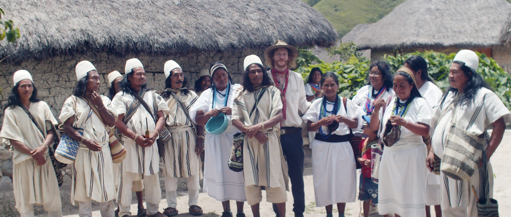<figcaption><span>Every time the world changed, someone talked about it until it was true.</span></figcaption></figure><div class="ed"><h3 class="subh">Seeds in the Ground</h3><p>A year in, it's a global movement with dozens of people involved, building serious ventures and prototyping technology. Every day another amazing thing happens, and as the world around us gets shittier, the price of meaning keeps going up.</p><p>We've been making consistent $10K months with no systems, just stories. Nine contributors from five countries worked through our first cohort and stayed on.</p><aside class="s"><div class="stat"><b>$10K</b><span>months, consistently</span></div></aside><figure class="inl"></figure><p>We bet on visionaries who see from A to C before anyone else knows there's an alphabet, and their ventures are already moving. A capital-mapping survey of just six members found more than $1.4M already invested in their ventures, 135+ acres of stewarded land, and $7.5–10M in near-term capital needs. We're already functioning as a fund, we've been offered general partner roles by Atlas Research and our technology partners, and we never waited for permission.</p><aside class="s"><div class="stat"><b>$1.4M+</b><span>already invested in six members&#x27; ventures</span></div><div class="stat"><b>135+</b><span>acres of stewarded land</span></div><div class="stat"><b>$7.5–10M</b><span>in near-term capital needs</span></div></aside><p>You can't buy that. You can raise money for software and rent an audience, but you can't fake a room full of people whose lives actually changed and who now want to build the thing with you. That takes years and dirt under your nails. We've put the years in.</p><aside class="tq"><p class="pq">“Really embed each of you in different ways into the work that we&#x27;re doing. Really get entangled, if we can, through story and everything.”</p><p class="cite"><b>Dr. Geordan Shannon</b><span>Building Unexia</span></p></aside><figure class="inl"></figure></div></section><section class="sub7" id="s-nothing-in-the-bank"><div class="ed"><h3 class="subh">Nothing in the Bank</h3><p>And here I am, back in Colombia, on the other side of the Kinship Quest, transformed more than anyone. I've got a beautiful place to live and food in my belly, and I have absolutely no money. It's like the billionaires who say they don't have any money because it's all tied up in stocks. Only my value is invested in flowing streams, in community, in visionary potential, and we need to build this system to unlock it. That's the whole play.</p><aside class="q"><p class="pq">“That&#x27;s the whole play.”</p></aside><figure class="inl">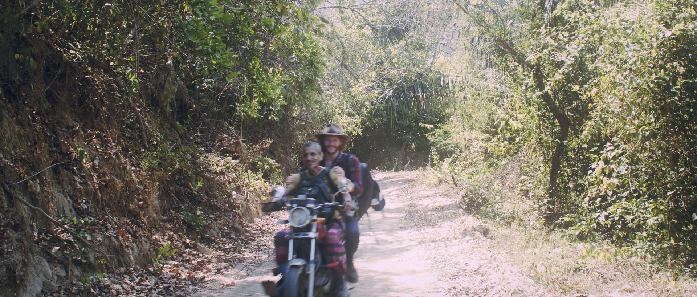</figure><p>I transformed my money story. I went from being terrified to ask for $200, stuttering on sales calls when it came time to name the price, to forecasting a multi-million-dollar company and asking for millions, knowing that what it really takes to solve this is even bigger. Now I'm guiding business leaders and giving hope to people stuck in the systems who'd given up. We built all this. We did it as a community. I'm not alone anymore.</p><aside class="q"><p class="pq">“I&#x27;m not alone anymore.”</p></aside><figure class="inl"></figure><p>And here's the joke. All the reasons the system was broken, all the reasons it didn't work for me, all the reasons I protested it and took it apart, are the competitive advantage that's going to make the new economy succeed, right as the world needs it. The matrix of artificial scarcity has made the things that aren't scarce, purpose, meaning, community and belonging, rare enough that people will pay for them. That's the market signal we're going to use to turn the system in on itself.</p><p>So here's the mission. Change our own story. Turn the value we've created into abundance for others. Fund the network and the system, scale this company, and take the protocols of how we did it to everyone, so this impossible journey becomes a game anyone can play. Because that's the heartbreak right now: all of this is still unsung. I wake up in a cold sweat with individual faces in my head, visionaries who don't know you can do it like this. Every day this system isn't built, more of them lose hope.</p><div class="wide"><p class="pq"><span class="mk">“</span>Every day this system isn&#x27;t built, more of them lose hope.<span class="mk">”</span></p></div></div></section><section class="sub7" id="s-the-dragons"><div class="ed"><h3 class="subh">The Dragons</h3><figure class="inl">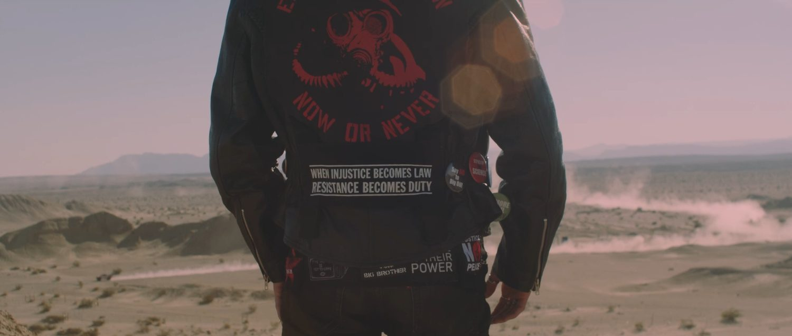</figure><p>So this is where we lay it bare. Everything so far was done organically, with no systems and no marketing, and it's incredibly complex. I created something and midwifed it with an incredible community, and it has grown past what I can hold alone and what volunteers and contributors can carry. These are the dragons between us and the story becoming real:</p><div class="span"><div class="v6 v6-dr"><span class="label">Mission · the dragons</span><h3 class="v6-h">Five dragons, and the key to each.</h3><div class="dr-bar" role="img" aria-label="The first $300K: story engine $120K, team and reserve $85K, technology $75K, legal $20K"><span style="flex:120;--c:#d4a843" title="The unsung story: $120K"><i>$120K</i></span><span style="flex:85;--c:#2ec4b0" title="Scarcity: $85K"><i>$85K</i></span><span style="flex:75;--c:#8bc472" title="Rented technology: $75K"><i>$75K</i></span><span style="flex:20;--c:#c090c8" title="The old vessel: $20K"><i>$20K</i></span></div><p class="dr-cap">The first $300K, key by key.</p><ol class="dr-list"><li><div class="dr-name">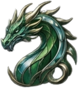<b>The unsung story</b></div><p class="dr-what">A marketing system, a brand I didn&#x27;t vibe-code myself, our own media, our story in your feed like a portal out of the old world.</p><div class="dr-key"><span class="dr-sw" style="--c:#d4a843"></span><span>The story engine: organic marketing, a designer, a new website</span><b class="dr-amt">$120K</b></div></li><li><div class="dr-name"><b>Scarcity</b></div><p class="dr-what">A paid team and a runway.</p><div class="dr-key"><span class="dr-sw" style="--c:#2ec4b0"></span><span>The team, paid ahead of revenue, and a reserve</span><b class="dr-amt">$85K</b></div></li><li><div class="dr-name"><b>Rented technology</b></div><p class="dr-what">Off frontier tech and onto our own AI, our own apps and systems.</p><div class="dr-key"><span class="dr-sw" style="--c:#8bc472"></span><span>The AI workflow, a graph engineer and a second developer</span><b class="dr-amt">$75K</b></div></li><li><div class="dr-name"><b>The old vessel</b></div><p class="dr-what">New legal structures for federated contracts and investment between projects that share each other&#x27;s fate, and a purpose foundation that owns the for-profits as they evolve into cooperatives, governed by a council of stakeholders from the projects.</p><div class="dr-key"><span class="dr-sw" style="--c:#c090c8"></span><span>Legal now; the cooperative and fund architecture at Level 2</span><b class="dr-amt">$20K</b></div></li><li><div class="dr-name"><b>The lone hero</b></div><p class="dr-what">And I&#x27;m going to have to break something too: my own self-reliance, the ability to get by with nothing that let me build all this, travel the world and create whole organizations with no money.</p><div class="dr-key dr-free"><span class="dr-sw" style="--c:transparent"></span><span>The crew. This one money can&#x27;t buy.</span></div></li></ol></div></div><p>We're in the gap between worlds. We need funding, serious funding. I've modeled an amount we can repay from cash flow, taking on more as it grows. It would be easy at this point to take venture capital and slice off a chunk of equity. We're not doing that, because this company isn't a thing to be owned. It's a living organism, a community of people, a vision of the future. What capital buys us is time travel: moving faster, in more directions at once, getting to the future before the old story finishes burning down.</p><aside class="q"><p class="pq">“What capital buys us is time travel”</p></aside><figure class="inl">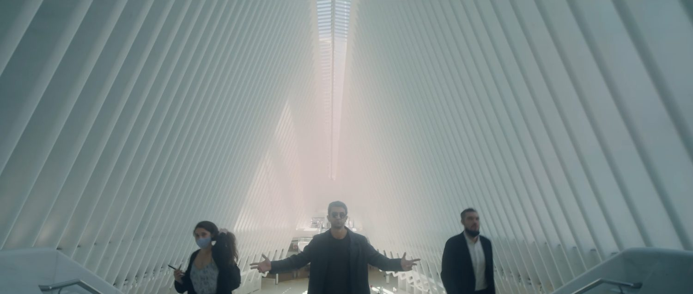</figure></div></section><section class="sub7" id="s-snake-venom"><div class="ed"><h3 class="subh">Snake Venom</h3><p>When I laid this plan out to the mamos in Nabusímake, the Arhuaco capital, I told them you can't pay the little brother to change. That's what they call our civilization. But he's so obsessed with money that if you can get him to value the transformation, the meaning and energy we have in abundance, he'll pay you for the chance to change. They grinned and said it's like using the snake venom to cure the bite.</p><aside class="q"><p class="pq">“It&#x27;s like using the snake venom to cure the bite.”</p></aside><p>That's how the people destroying the planet end up paying for the chance to help regenerate it. We stop doing this work in scarcity, and we call in what we need.</p><figure class="wide full">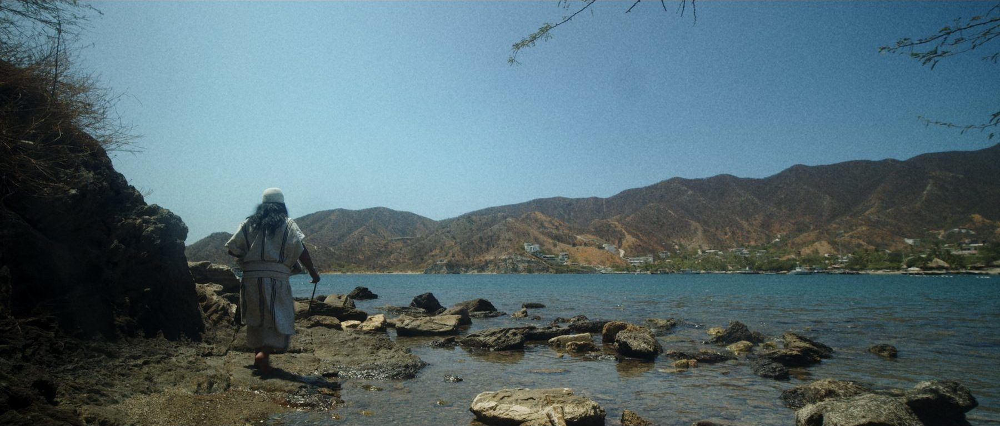</figure></div></section><a class="next7" href="#request-ch"><span>Next · Chapter 06</span><b>Request →</b></a></div></div>
</section><section class="act" id="request-ch" aria-labelledby="t-request-ch">
<header class="act-card"><span class="act-txt"><span class="act-n"></span><span class="act-t" id="t-request-ch">Request</span><span class="act-cap">Money is the most powerful story ever told, and it's built on nothing but belief. That puts the most powerful system on earth up for rewriting, and you can help write it.</span></span></header>
<div class="act-body"><div class="wrap ch7"><section class="sub7" id="s-money-is-a-story"><div class="ed"><h3 class="subh">Money Is a Story</h3><figure class="inl">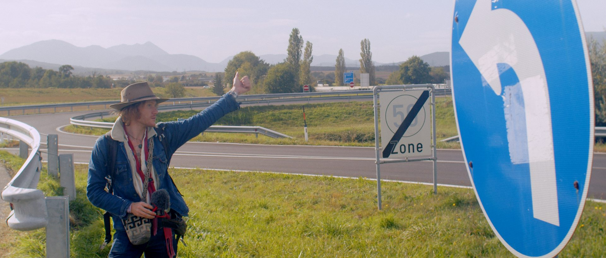</figure><p class="journey">I was homeless for many years. I lived on food stamps in six states. I was living in a pickup truck, feeling so disabled I couldn't even finish the disability application. I watched friends die on the streets, and then I traveled the earth to see what the story of money has done to the planet and the people on it. I have given everything to this quest, and I will never quit.</p><p>For years I fought money. I studied it all the way back to its origins, trying to understand the thing that was eating the world. And then I finally saw what it is. Money is a story, one we all agreed to believe, built on nothing but trust, and it runs the whole planet. It's the story that proves the power of story itself. And if money is a story, we can write a new one for it to follow.</p><aside class="tq"><p class="pq">“You are still a slave. Even though you think you&#x27;re free, you&#x27;re a slave to your own assets.”</p><p class="cite"><b>Lars Urheim</b><span>Kinship Quest</span></p></aside><div class="wide"><p class="pq"><span class="mk">“</span>It&#x27;s the story that proves the power of story itself.<span class="mk">”</span></p></div><p>The broke visionaries, the dying solutions, all that locked-up value: that's where the new story starts paying. That's where this raise leads, and it starts by building the engine.</p></div></section><section class="sub7" id="s-the-deal"><div class="ed"><h3 class="subh">The Deal</h3><p><strong>The first $300K</strong> takes on those dragons: it gets the team paid properly, builds the story engine and builds the tech, with a small reserve underneath.</p><p>In year one that takes revenue to roughly $492K at our floor case, $894K at target and $1.36M at stretch. Two more levels open as we hit our marks. <strong>Level 2, $520K</strong>, opens at $100K a month and funds the community: more guides, the distributed agency, and the capital and legal architecture for the commons and the federation. <strong>Level 3, $900K</strong>, opens at $200K a month and funds the game, the full app that opens the door to whole organizations.</p><div class="span"><div class="v6 v6-lad">
  <span class="label">Request · the levels</span>
  <h3 class="v6-h">Each level opens when the last one proves itself.</h3>
  <ol class="lad">
    <li style="--h:52%"><span class="lad-when">Now</span><b class="lad-amt">$300K</b><span class="lad-name">Level 1 · fund the company</span><p>The team paid properly, the story engine, the tech, a small reserve.</p></li>
    <li style="--h:68%"><span class="lad-when">At $100K a month</span><b class="lad-amt">$520K</b><span class="lad-name">Level 2 · fund the community</span><p>More guides, the distributed agency, the legal architecture for the commons and the federation.</p></li>
    <li style="--h:84%"><span class="lad-when">At $200K a month</span><b class="lad-amt">$900K</b><span class="lad-name">Level 3 · fund the game</span><p>The full app that opens the door to whole organizations.</p></li>
    <li class="lad-fund" style="--h:100%"><span class="lad-when">After Level 3</span><b class="lad-amt">The fund</b><span class="lad-name">Another World Is Possible</span><p>A stewardship instrument, designed in the open with the larger partners who will hold it.</p></li>
  </ol>
</div></div><p>Each level is a Mission Note, a demand dividend. It takes no equity, and nothing has to be sold for you to get paid. We repay it from free cash flow after an 18-month build, at a multiple that rises the longer repayment takes. On the $300K of Level 1 alone, our target case has $377K back to you by month 36 and the note repaid in full in month 38, at 1.40<span class="xs">×</span>. At stretch it is repaid in month 29, at 1.35<span class="xs">×</span>. At our floor it is slow: $39K back by month 36, and repaid in full in month 66, at 1.75<span class="xs">×</span>. That works out to roughly 14% to 18% a year. Holders can roll into the next level as it opens, and the faster we get there, the faster everyone gets paid. The fund comes after Level 3, a stewardship instrument we design in the open with the larger partners who will hold it. The full schedule, the risks and the open terms are in the Mission Note at the end of this chapter.</p><div class="span"><div class="v6 v6-ch"><span class="label">Request · how it grows</span><h3 class="v6-h">Three years on the first $300K, in all three cases.</h3><div class="ch-wrap"><svg viewBox="0 0 760 330" role="img" aria-label="Revenue by year in the floor, target and stretch cases" class="ch-svg"><line x1="56" x2="748" y1="290.0" y2="290.0" class="gl"/><text x="46" y="294.0" class="ax" text-anchor="end">$0</text><line x1="56" x2="748" y1="236.0" y2="236.0" class="gl"/><text x="46" y="240.0" class="ax" text-anchor="end">$1M</text><line x1="56" x2="748" y1="182.0" y2="182.0" class="gl"/><text x="46" y="186.0" class="ax" text-anchor="end">$2M</text><line x1="56" x2="748" y1="128.0" y2="128.0" class="gl"/><text x="46" y="132.0" class="ax" text-anchor="end">$3M</text><line x1="56" x2="748" y1="74.0" y2="74.0" class="gl"/><text x="46" y="78.0" class="ax" text-anchor="end">$4M</text><line x1="56" x2="748" y1="20.0" y2="20.0" class="gl"/><text x="46" y="24.0" class="ax" text-anchor="end">$5M</text><text x="171.3" y="318" class="ax" text-anchor="middle">Year one</text><rect x="98.3" y="263.4" width="46.0" height="26.6" rx="3" fill="#b0c4bb"><title>Floor, year one: $492K</title></rect><rect x="148.3" y="241.7" width="46.0" height="48.3" rx="3" fill="#d4a843"><title>Target, year one: $894K</title></rect><rect x="198.3" y="216.6" width="46.0" height="73.4" rx="3" fill="#2ec4b0"><title>Stretch, year one: $1.36M</title></rect><text x="402.0" y="318" class="ax" text-anchor="middle">Year two</text><rect x="329.0" y="237.8" width="46.0" height="52.2" rx="3" fill="#b0c4bb"><title>Floor, year two: $966K</title></rect><rect x="379.0" y="188.5" width="46.0" height="101.5" rx="3" fill="#d4a843"><title>Target, year two: $1.88M</title></rect><rect x="429.0" y="130.7" width="46.0" height="159.3" rx="3" fill="#2ec4b0"><title>Stretch, year two: $2.95M</title></rect><text x="632.7" y="318" class="ax" text-anchor="middle">Year three</text><rect x="559.7" y="214.4" width="46.0" height="75.6" rx="3" fill="#b0c4bb"><title>Floor, year three: $1.40M</title></rect><text x="582.7" y="206.4" class="vl" text-anchor="middle">$1.40M</text><rect x="609.7" y="140.4" width="46.0" height="149.6" rx="3" fill="#d4a843"><title>Target, year three: $2.77M</title></rect><text x="632.7" y="132.4" class="vl" text-anchor="middle">$2.77M</text><rect x="659.7" y="47.0" width="46.0" height="243.0" rx="3" fill="#2ec4b0"><title>Stretch, year three: $4.50M</title></rect><text x="682.7" y="39.0" class="vl" text-anchor="middle">$4.50M</text></svg></div><div class="chm" aria-hidden="true"><div class="chm-y"><span class="chm-l">Year one</span><div class="chm-r"><i style="width:10.9%;background:#b0c4bb"></i><b>$492K</b></div><div class="chm-r"><i style="width:19.9%;background:#d4a843"></i><b>$894K</b></div><div class="chm-r"><i style="width:30.2%;background:#2ec4b0"></i><b>$1.36M</b></div></div><div class="chm-y"><span class="chm-l">Year two</span><div class="chm-r"><i style="width:21.5%;background:#b0c4bb"></i><b>$966K</b></div><div class="chm-r"><i style="width:41.8%;background:#d4a843"></i><b>$1.88M</b></div><div class="chm-r"><i style="width:65.6%;background:#2ec4b0"></i><b>$2.95M</b></div></div><div class="chm-y"><span class="chm-l">Year three</span><div class="chm-r"><i style="width:31.1%;background:#b0c4bb"></i><b>$1.40M</b></div><div class="chm-r"><i style="width:61.6%;background:#d4a843"></i><b>$2.77M</b></div><div class="chm-r"><i style="width:100.0%;background:#2ec4b0"></i><b>$4.50M</b></div></div></div><ul class="ch-key"><li><i style="background:#b0c4bb"></i><b>Floor</b><span>$492K → $1.40M</span><em>Level 1 repaid in month 66 · 1.75<span class="xs">×</span></em></li><li><i style="background:#d4a843"></i><b>Target</b><span>$894K → $2.77M</span><em>Level 1 repaid in month 38 · 1.40<span class="xs">×</span></em></li><li><i style="background:#2ec4b0"></i><b>Stretch</b><span>$1.36M → $4.50M</span><em>Level 1 repaid in month 29 · 1.35<span class="xs">×</span></em></li></ul><p class="v6-foot">From our month-by-month model. The full tables are in the Mission Note below.</p></div></div></div></section><section class="sub7" id="s-adventure-capital"><div class="ed"><h3 class="subh">Adventure Capital</h3><p>And here's the irony. Isn't it amazing that in capital-ism there are so few widely understood ways for capital to actually move? I stood on a rooftop with a bunch of VCs in their suits and asked them: if there were an alternative that wasn't extractive and soulless, that didn't bleed companies for thousand-times returns, fail most of the time, offer no support and just own the transaction, do you really think anyone would choose you? Meanwhile all that wealth is moving between generations, and the people carrying the real solutions are priced at zero, right alongside nature itself. The most asymmetric trade in the history of humanity is sitting in plain sight, and we're building new ways for capital to move toward it, sharing the upside instead of owning it and using it to take over the political system and rewrite the narrative. Well, we are rewriting the narrative, just in the opposite direction.</p><aside class="q"><p class="pq">“We are rewriting the narrative, just in the opposite direction.”</p></aside><figure class="inl">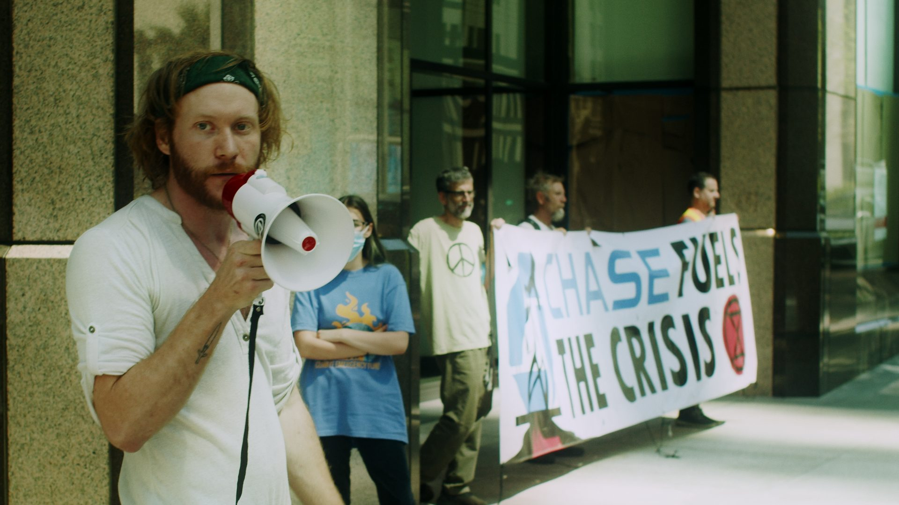</figure><p>That's adventure capital: making systemic investing sexy by funding adventures. Multiple projects, solutions and networks join together in a shared story, so you can fund the story rather than the individual project, and flow capital and resources through missions that are cooperative and jointly owned, and eventually far more resilient and ergodic, meaning interconnected, with shared success instead of distributed failure. It's a virtuous cycle of true wealth and value creation that beats a system where most businesses fail. Many of them didn't need to exist in the first place, the ones that did couldn't make it through the horrible game of business, and even most of the ones that get funded still fail.</p><aside class="q"><p class="pq">“You can fund the story rather than the individual project”</p></aside><p>So the journey becomes our diligence. The ventures in the pool get access to each other, to the stories, clients, services and technology we share, and to every form of value and capital we hold that isn't money, until it starts transforming itself into money. Every venture pays a share back into the commons that holds the whole. Philanthropy, grants, patient capital and return-bearing investment flow through the same living system, the risk spreads and the rewards are shared. Money becomes a plot device in a greater story, because it was never the point. Purpose was.</p><aside class="q"><p class="pq">“Money becomes a plot device in a greater story, because it was never the point. Purpose was.”</p></aside><p>One of the first funds we want to seed is an indigenous-led fund for the heart of the world, led by the peoples who have always protected it.</p><p>It's our time. We go from asking for funds, to raising for others, to writing the checks, to changing what the checks are made of. The fund is Another World Is Possible.</p></div></section><section class="sub7" id="s-the-forest"><figure class="subband"><figcaption><span>Why invest in a potted plant when you can grow a forest?</span></figcaption></figure><div class="ed"><h3 class="subh">The Forest</h3><p>We're rich in every form of capital except financial, and financial is the weakest of them. We haven't made as much money as we would have if money were the goal. It isn't. We're here to change the fucking world, so we've done plenty of things nobody chasing a return would ever do, and every one of them planted something: relationships, trust, talent, IP, land, ventures, and a story that makes strangers devoted.</p><aside class="tq"><p class="pq">“I feel so enriched. As Bob Marley used to say, I feel very rich in life.”</p><p class="cite"><b>Anna Giunta</b><span>Kinship Quest</span></p></aside><p>We're building from sovereignty, so the next raise comes from strength. Come be one of the authors of what comes next. Back the visionaries while the old story comes apart, put your money into a new world instead of more zeroes, and have the stories to show for it for the rest of your life.</p><aside class="tq"><p class="pq">“It empowers them to contribute and connect back in to the system that we can build for the future, rather than remain detached in this isolated, separated world with loads of cash but no connection.”</p><p class="cite"><b>Matt Golding</b><span>Storyteller</span></p></aside><div class="wide"><p class="pq"><span class="mk">“</span>Come be one of the authors of what comes next.<span class="mk">”</span></p></div><p>The seeds are in the ground. This plan grows the forest.</p></div><div class="terms7" id="terms">
    <div class="note-detail first">
      <span class="label">The Mission Note</span>
      <div class="ledger plate mission-only"><span class="p-corner-bl" aria-hidden="true"></span><div class="cartouche"><h3>The forecast</h3><span class="rule" aria-hidden="true"></span><p class="sub">Three years on Level 1, the $300K we're raising now, in all three cases.</p></div><div class="figs-wrap"><table class="figs">
        <thead><tr><th></th><th>Floor</th><th>Target</th><th>Stretch</th></tr></thead>
        <tbody><tr><td>Revenue, year one</td><td data-c="Floor">$492K</td><td data-c="Target">$894K</td><td data-c="Stretch">$1.36M</td></tr><tr><td>Revenue, year three</td><td data-c="Floor">$1.40M</td><td data-c="Target">$2.77M</td><td data-c="Stretch">$4.50M</td></tr><tr><td>People through the journey, three years</td><td data-c="Floor">~332</td><td data-c="Target">~529</td><td data-c="Stretch">~767</td></tr><tr><td>Guides by month 36</td><td data-c="Floor">3</td><td data-c="Target">4</td><td data-c="Stretch">8</td></tr><tr><td>Level 1 repaid</td><td data-c="Floor">$39K by month 36; in full in month 66 at 1.75<span class="xs">×</span></td><td data-c="Target">$377K by month 36; in full in month 38 at 1.40<span class="xs">×</span></td><td data-c="Stretch">month 29, at 1.35<span class="xs">×</span></td></tr><tr><td>Return a year</td><td data-c="Floor">~14%</td><td data-c="Target">~16%</td><td data-c="Stretch">~18%</td></tr></tbody></table></div>
      <p class="figs-note">Three years from our month-by-month model, built person by person with every salary, guide payment, tax reserve and profit share, on the $300K of Level 1 alone. The note is repaid from free cash flow after the 18-month build. We stop the forecast at three years because that is as far as a forecast can honestly see.</p></div>
    </div>
    <ul class="docs" aria-label="Documents">
      <li><a href="investor-sheet.html"><small>Two-page summary</small><strong>Investor Sheet</strong><span>The whole round on two pages.</span></a></li>
      <li><a href="terms.html"><small>Proposed terms</small><strong>The Mission Note</strong><span>Schedule, outcomes, comparisons, risks and open terms.</span></a></li>
      <li><a href="forecast.html"><small>Forecast</small><strong>The Forecast</strong><span>Three years on Level 1: year one month by month, then years two and three, in all three cases.</span></a></li>
    </ul>
    <div class="ways-after"><div class="ways" id="ways"><span class="label">Ways to be part of it</span><h3 class="ways-h">An invitation with multidimensional returns.</h3><p class="ways-lead">Purpose, talent, network, craft, story and capital, each compounding into the others, as we return to who we've always been.</p><div class="wtabs" role="tablist" aria-label="Ways to be part of it"><button class="wtab" role="tab" id="wt-clients" aria-controls="wp-clients" aria-selected="true" tabindex="0"><span class="wl">Transform your story</span></button><button class="wtab" role="tab" id="wt-grants" aria-controls="wp-grants" aria-selected="false" tabindex="-1"><span class="wl">Gift the journey</span></button><button class="wtab" role="tab" id="wt-capital" aria-controls="wp-capital" aria-selected="false" tabindex="-1"><span class="wl">A new story for capital</span></button><button class="wtab" role="tab" id="wt-inkind" aria-controls="wp-inkind" aria-selected="false" tabindex="-1"><span class="wl">Lend your craft</span></button><button class="wtab" role="tab" id="wt-referrals" aria-controls="wp-referrals" aria-selected="false" tabindex="-1"><span class="wl">Bring a story</span></button></div><div class="wpanel nightplate" role="tabpanel" id="wp-clients" aria-labelledby="wt-clients"><span class="label">Clients</span><h3>Transform your story</h3><p class="wlead">Cross into your purpose, and watch people, capital and attention move toward what you carry.</p><p class="whow">Clients pay for the journey. That revenue runs the business, and every other path strengthens it.</p><div class="pladder"><ol class="lrows"><li><span class="lp">$3,500</span><span class="lk">Kinship Quest · a seat</span><span class="lw">If you’re a visionary carrying something the world needs.</span><span class="ld">Twenty-one people on the full journey together, three seasons a year.</span></li><li><span class="lp">$7,000</span><span class="lk">Kinship Quest · guided</span><span class="lw">The same cohort, with one-to-one guidance.</span><span class="ld">A guide at your side through the crossing.</span></li><li class="t"><span class="lp">$7,000–15,000</span><span class="lk">The Adventure</span><span class="lw">If your venture is already moving and you need it sharp now.</span><span class="ld">The journey one-to-one over a few weeks. We run it for brands and teams too.</span></li></ol><p class="lnote">After the journey, people can stay on in Kinship, our community, and many bring someone with them.</p></div><a class="btn small wcta" href="#talk">Start your journey</a></div><div class="wpanel nightplate" role="tabpanel" id="wp-grants" aria-labelledby="wt-grants" hidden><span class="label">Grants & donations</span><h3>Gift the journey</h3><p class="wlead">Give the journey to a visionary who couldn't reach it alone, and a living to the regenerators who support this work.</p><p class="whow">Gifts and grants reach the work through our fiscal sponsors.</p><div class="wgrid"><div class="wcol"><span class="label">Levels</span><div class="lvls"><details class="lvl"><summary><span class="n">01</span><span class="t">Sponsor a seat</span><span class="pm" aria-hidden="true"></span></summary><p>Fund a journey for someone carrying medicine the world needs who could not otherwise afford it.</p></details><details class="lvl"><summary><span class="n">02</span><span class="t">Sponsor a livelihood</span><span class="pm" aria-hidden="true"></span></summary><p>Give a living to the regenerators and visionaries who support this work, so they can keep doing it.</p></details><details class="lvl"><summary><span class="n">03</span><span class="t">Fund a program</span><span class="pm" aria-hidden="true"></span></summary><p>Back a whole program or bioregional initiative, from a cohort of changemakers to work on the land.</p></details></div></div></div><a class="btn small ghost wcta" href="#talk">Talk with us about this</a></div><div class="wpanel nightplate" role="tabpanel" id="wp-capital" aria-labelledby="wt-capital" hidden><span class="label">Patient capital · values-aligned partners only</span><h3>A new story for capital</h3><p class="wlead">Your capital is bored. It wants a better story, a purpose to serve. We're offering it an adventure.</p><p class="whow">We take investment only from partners whose values match the regenerative ecosystem we're co-creating. The capital changes shape as the work grows.</p><div class="wgrid"><div class="wcol"><span class="label">Levels</span><div class="lvls"><details class="lvl"><summary><span class="n">01</span><span class="t">Level 1 · fund the company</span><span class="pm" aria-hidden="true"></span></summary><p>$300K on the Mission Note. <a href="terms.html">Read the terms</a>.</p></details><details class="lvl"><summary><span class="n">02</span><span class="t">Level 2 · fund the community</span><span class="pm" aria-hidden="true"></span></summary><p>$520K, opening when revenue holds at $100K a month: more guides, the distributed agency, and the capital and legal architecture for the commons and the federation.</p></details><details class="lvl"><summary><span class="n">03</span><span class="t">Level 3 · fund the game</span><span class="pm" aria-hidden="true"></span></summary><p>$900K, opening at $200K a month, to build the full app.</p></details><details class="lvl"><summary><span class="n">04</span><span class="t">Stage 4 · the fund</span><span class="pm" aria-hidden="true"></span></summary><p>The highest stage. A stewardship instrument for larger partners, designed in the open with the people who will hold it, on our way to one vehicle that supports the whole ecosystem: the ventures, the people and the places it grows.</p></details></div></div></div><div class="forms"><span class="label">For the long game</span><h4>Why are we so unimaginative with how we flow capital?</h4><div class="fgrid"><details class="form"><summary><span class="ft">Demand dividend notes</span><span class="tag on">In use</span></summary><p>Repaid from free cash flow, with no sale or exit required.</p></details><details class="form"><summary><span class="ft">Recoverable grants</span><span class="tag">Exploring</span></summary><p>A grant that comes back if the work succeeds, and stays a gift if it doesn't.</p></details><details class="form"><summary><span class="ft">Program-related investments</span><span class="tag">Exploring</span></summary><p>Low-interest, long-horizon loans foundations make to mission-driven work.</p></details><details class="form"><summary><span class="ft">Steward-ownership shares</span><span class="tag">Exploring</span></summary><p>Capped returns, with control staying with the people who hold the mission.</p></details><details class="form"><summary><span class="ft">Cooperative capital membership</span><span class="tag">Exploring</span></summary><p>Investors join the cooperative as members, with capped returns and a place in the network.</p></details><details class="form"><summary><span class="ft">Community bonds and direct public offerings</span><span class="tag">Exploring</span></summary><p>The community itself invests, in amounts anyone can reach.</p></details><details class="form"><summary><span class="ft">Flow funding</span><span class="tag">Exploring</span></summary><p>Capital entrusted to people who pass it on to what they see, circulating through the network.</p></details><details class="form"><summary><span class="ft">Land trusts</span><span class="tag">Exploring</span></summary><p>Land held in common for the long term, with the living planet as the store of value.</p></details><details class="form"><summary><span class="ft">Mutual credit and community currencies</span><span class="tag">Exploring</span></summary><p>Value exchanged directly between members, without waiting for money to arrive.</p></details><details class="form"><summary><span class="ft">Guarantees and first-loss capital</span><span class="tag">Exploring</span></summary><p>One funder absorbs early risk so others can commit more.</p></details><details class="form"><summary><span class="ft">Blended finance</span><span class="tag">Exploring</span></summary><p>Grants, patient debt and investment layered so each does what it does best.</p></details><details class="form"><summary><span class="ft">An indigenous-led bioregional fund</span><span class="tag">Exploring</span></summary><p>A fund for the Sierra Nevada, led by the peoples who have always protected it.</p></details></div><div class="further"><p>Go further with us. If you dream about new ways for capital to flow, or want to develop and invest at a larger scale over a longer horizon, we want you in the room while we design what comes next.</p><a class="btn small" href="#talk">Go further with us</a></div></div></div><div class="wpanel nightplate" role="tabpanel" id="wp-inkind" aria-labelledby="wt-inkind" hidden><span class="label">In-kind</span><h3>Lend your craft</h3><p class="wlead">Your gift answers someone's quest, and becomes part of the system that carries every story.</p><p class="whow">Give a role-sized piece of work. We credit it at what that role costs in our own forecast, returned to you as dividends or as access to our service.</p><div class="wgrid two"><div class="wcol"><span class="label">Levels</span><div class="lvls"><details class="lvl"><summary><span class="n">01</span><span class="t">A gift of time</span><span class="pm" aria-hidden="true"></span></summary><p>Hours or a single piece of work where it's needed most.</p></details><details class="lvl"><summary><span class="n">02</span><span class="t">A role</span><span class="pm" aria-hidden="true"></span></summary><p>An ongoing seat on the team for a season, from the roles alongside.</p></details><details class="lvl"><summary><span class="n">03</span><span class="t">A build</span><span class="pm" aria-hidden="true"></span></summary><p>A defined deliverable, start to finish, like a piece of the platform.</p></details><details class="lvl"><summary><span class="n">04</span><span class="t">A partnership</span><span class="pm" aria-hidden="true"></span></summary><p>Your system connects to ours, and both grow from it.</p></details></div></div><div class="wcol"><div class="domains"><span class="label">Where it helps</span><div class="dtabs" role="tablist" aria-label="In-kind roles"><button class="dtab" role="tab" id="dt-0" aria-controls="dp-0" aria-selected="true" tabindex="0">Marketing & story</button><button class="dtab" role="tab" id="dt-1" aria-controls="dp-1" aria-selected="false" tabindex="-1">Operations</button><button class="dtab" role="tab" id="dt-2" aria-controls="dp-2" aria-selected="false" tabindex="-1">Product & program</button><button class="dtab" role="tab" id="dt-3" aria-controls="dp-3" aria-selected="false" tabindex="-1">Tech that interconnects</button><button class="dtab" role="tab" id="dt-4" aria-controls="dp-4" aria-selected="false" tabindex="-1">Also welcome</button></div><div class="dpanel" role="tabpanel" id="dp-0" aria-labelledby="dt-0"><ul><li>Organic marketing lead</li><li>Social media</li><li>Video editor</li><li>Designer</li><li>Specialized organic help and consulting</li></ul></div><div class="dpanel" role="tabpanel" id="dp-1" aria-labelledby="dt-1" hidden><ul><li>Admin and scheduling</li><li>Project manager</li><li>Community and coaching</li><li>Grant writing and philanthropic fundraising</li></ul></div><div class="dpanel" role="tabpanel" id="dp-2" aria-labelledby="dt-2" hidden><ul><li>Program design</li><li>Guide training</li><li>Flexible gigs and projects</li></ul></div><div class="dpanel" role="tabpanel" id="dp-3" aria-labelledby="dt-3" hidden><ul><li>DevOps and infrastructure</li><li>Self-hosted AI</li><li>The platform build</li><li>Builders whose tech connects with ours</li></ul></div><div class="dpanel" role="tabpanel" id="dp-4" aria-labelledby="dt-4" hidden><ul><li>Legal and accounting</li><li>Website</li><li>Newsletters, podcasts and stages</li><li>Introductions</li><li>Tools and compute credits</li><li>Translation</li><li>Studio gear</li></ul></div></div></div></div><a class="btn small ghost wcta" href="#talk">Talk with us about this</a></div><div class="wpanel nightplate" role="tabpanel" id="wp-referrals" aria-labelledby="wt-referrals" hidden><span class="label">Referrals</span><h3>Bring a story</h3><p class="wlead">A story the world needs to hear finds its voice.</p><p class="whow">What is a story the world needs to hear? Every journey begins with someone pointing the way.</p><div class="wgrid"><div class="wcol"><span class="label">Levels</span><div class="lvls"><details class="lvl"><summary><span class="n">01</span><span class="t">Introduce a story</span><span class="pm" aria-hidden="true"></span></summary><p>A person or project carrying something the world needs, who hasn't found the words yet.</p></details><details class="lvl"><summary><span class="n">02</span><span class="t">Introduce a client or funder</span><span class="pm" aria-hidden="true"></span></summary><p>Someone ready for the journey, or ready to resource it.</p></details><details class="lvl"><summary><span class="n">03</span><span class="t">Bring a venture into the ecosystem</span><span class="pm" aria-hidden="true"></span></summary><p>A project that belongs in the federation, ready to have its story told and its work resourced.</p></details></div></div></div><a class="btn small ghost wcta" href="#talk">Talk with us about this</a></div></div></div>
  </div></section><a class="next7" href="#legacy"><span>Next · Chapter 07</span><b>Legacy →</b></a></div></div>
</section><section class="act" id="legacy" aria-labelledby="t-legacy">
<header class="act-card"><span class="act-txt"><span class="act-n"></span><span class="act-t" id="t-legacy">Legacy</span><span class="act-cap">The other side, where the misfits got funded, money learned to move toward life, and our grandkids ask what we did when the story changed.</span></span></header>
<div class="act-body"><div class="wrap ch7"><section class="sub7" id="s-the-misfits"><div class="ed"><h3 class="subh">The Misfits</h3><p class="lede">This is our return, and our gift to the world.</p><p>If you've ever been the weird one, the misfit, the one who didn't fit the box and couldn't make yourself perform for a game you could see was rigged, this part is about you. You've always had a vision. You've always had so much to give. And the system never saw it, never encouraged it, never once bet on you. I know, because it never bet on me. Then I traveled the world and found people like us everywhere, brilliant, heart-centered, courageous, carrying exactly what the world needs, and that stops being a heartbreaking story the moment you realize they have the value. They have the fucking value, and the market says they're worth nothing. Most of them don't even believe in themselves.</p><aside class="q"><p class="pq">“They have the fucking value, and the market says they&#x27;re worth nothing.”</p></aside><figure class="inl">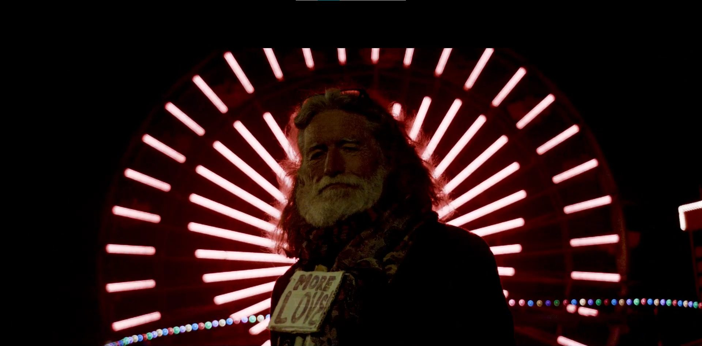</figure><p>Look at who's already here. Magenta Light spent a decade following a psychedelic vision of community wealth, built a platform, programmed it herself, worked eighty-hour weeks and grew Bloom Network into a community of thousands across the planet, and now it's raising with our help. Matt Ross is the most brilliant, charismatic, hilarious genius of a banker, who left the system after winning it to learn how nature flows value and saw that nature is the biggest asymmetrical bet of all, and the damned irony is that he couldn't value himself until the journey. Now he's building a nature-capital hedge fund with us. Geordan Shannon understood that nature's value was too vast for the old math, the journey gave her the story to explain it, and now she's building the multidimensional valuation that makes every form of value we carry legible. She's raising $2M, then $20M, then $2B for it, and we're building it with her. Jessica Arburn, through Dose of Hope, helps givers become receivers, and routes philanthropic capital into the journey. Aaron Malone is building Unbound Science, a $10M fund for decentralized science we're helping raise. When it closes, he invests in our round and we restory every project in his portfolio. These are the people we bet on: the solutions I traveled the world to film, the mad geniuses at the edges of the map who would never play the business game, who don't trust capital, but they trust me. By the end of our first cohort they were all on one journey together. They are our investors, and we are theirs, literally.</p><div class="span vcar" id="words" aria-roledescription="carousel"><span class="label">Legacy · in their words</span><h3 class="vc-h">The people who crossed.</h3><div class="vc-names" role="tablist"><button type="button" data-i="1" aria-label="Kevin Howard"><i>01</i><span>Kevin Howard</span></button><button type="button" data-i="2" aria-label="Michael Haupt"><i>02</i><span>Michael Haupt</span></button><button type="button" data-i="3" aria-label="Dr. Geordan Shannon"><i>03</i><span>Dr. Geordan Shannon</span></button><button type="button" data-i="4" aria-label="Matt Ross"><i>04</i><span>Matt Ross</span></button><button type="button" data-i="5" aria-label="Jessica Arburn"><i>05</i><span>Jessica Arburn</span></button></div><div class="vc-track" tabindex="0"><figure class="vc-card long" id="words-1"><span class="tb-mk" aria-hidden="true">“</span><blockquote>You are a master of narrative, of unpacking the story that is in each of us. You made it safe. You helped peel back the layers of what was not true in my own head about who I am. I did not have the language to express what I felt, who I am. I could not have done it without you, no matter how hard or how long I tried. It was my highest expense for the year, and it was not expensive, because the value was infinitely more than it cost. When the light hits the prism, something magic happens by the time it comes out the other side. Work with Zachary. Go through the process. There is nothing more powerful and important than that.</blockquote><figcaption><p class="cite"><b>Kevin Howard</b><span>Former banker</span></p></figcaption></figure><figure class="vc-card long" id="words-2"><span class="tb-mk" aria-hidden="true">“</span><blockquote>Zachary got me at a moment of despair. I was basically giving up. The synthesis document that came out of our interview was profound. Your process shifts energetically how you are interpreting your story. Less than four months later, I had written the book, launched a paid program, and was getting feedback like this chapter brought me to tears. I had been on a 20-year mission and I could not see it. It took Zachary&#x27;s process for me to see that is exactly what I have been trying to do.</blockquote><figcaption><p class="cite"><b>Michael Haupt</b><span>Civilization researcher</span></p></figcaption></figure><figure class="vc-card long" id="words-3"><span class="tb-mk" aria-hidden="true">“</span><blockquote>I came to this slow recognition that you guys actually, genuinely embody love for us, for the world, for each other. I think that probably until now I&#x27;d experienced some sort of conditional love in my life. And the fact that you would show up consistently with such generosity and just pure innocent love in your heart, for me and for each of us, that just blew me away. It shifted something so deeply, because now, tasting this and feeling this, I don&#x27;t think that there&#x27;s any other way to do life. … You&#x27;ve created the conditions for kinship.</blockquote><figcaption><p class="cite"><b>Dr. Geordan Shannon</b><span>Building Unexia</span></p></figcaption></figure><figure class="vc-card long" id="words-4"><span class="tb-mk" aria-hidden="true">“</span><blockquote>I&#x27;ve done stuff before, but you feel like you&#x27;re being led by someone, but really they&#x27;re on an earpiece, and they&#x27;re somewhere comfortable, and they&#x27;re telling you to climb the mountain, but they&#x27;re not there. With Zach, it&#x27;s like being with Indiana Jones or a Sherpa, and you&#x27;re going up Mount Everest, and you&#x27;re like, there&#x27;s nothing left of me, and then he&#x27;s just there next to you. … I was in all this pain, and he dropped down there with me and sat in it. … And then the wound turned out to be a window.</blockquote><figcaption><p class="cite"><b>Matt Ross</b><span>Building a nature-capital fund</span></p></figcaption></figure><figure class="vc-card" id="words-5"><span class="tb-mk" aria-hidden="true">“</span><blockquote>This is the greatest thing I&#x27;ve ever done with my life.</blockquote><figcaption><p class="cite"><b>Jessica Arburn</b><span>Founder, Dose of Hope</span></p></figcaption></figure></div><div class="vc-nav"><button type="button" class="vc-prev" aria-label="Previous">←</button><span class="vc-count">01 / 05</span><button type="button" class="vc-next" aria-label="Next">→</button></div></div></div></section><section class="sub7" id="s-the-other-side"><figure class="subband"></figure><div class="ed"><h3 class="subh">The Other Side</h3><p>In the future, they tell the story of what we did together. How we went on quests to regenerate the world. How we created meaning for a living and discovered it was the most valuable work there is. How AI helped us find our purpose and the tools we built made coordination feel like play. How we ended poverty as a quest and found cooperation was the most practical strategy anyone had ever tried. How we bought land and built communities and raised our children inside a story worth inheriting. How even the story of capital itself was transformed into something alive.</p><figure class="inl">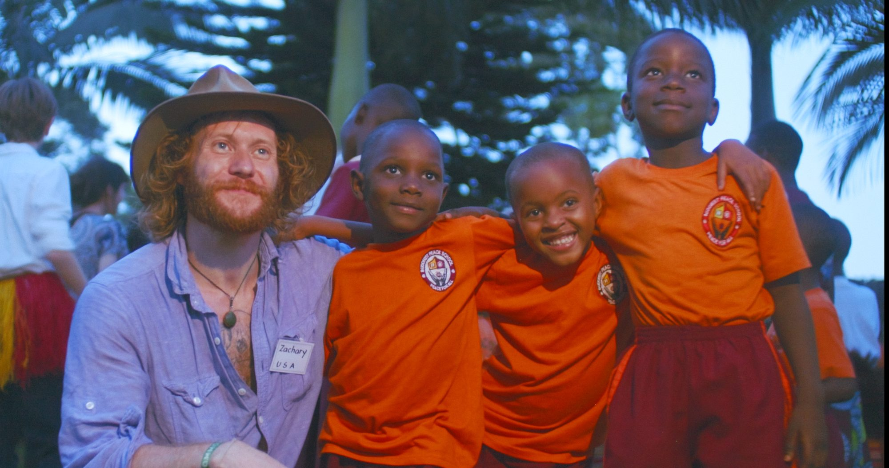</figure><p>It started with one person who saw the default story for what it was and fell through the crack into the living one. And then another. And then fifty. And then thousands. And then it was simply the way the world worked, and nobody could remember why it had ever been any other way.</p><aside class="q"><p class="pq">“Nobody could remember why it had ever been any other way.”</p></aside><p>And the breakthrough, the one that made all of it possible, the thing that no civilization in human history had ever had, was this: for the first time, humanity could consciously author its own future together. Not one leader imposing a vision. Not one story crushing the others. Collective authorship. The technology that let a thousand stories become one greater story that none of them could have authored alone.</p><div class="wide"><p class="pq"><span class="mk">“</span>For the first time, humanity could consciously author its own future together.<span class="mk">”</span></p></div><p>When we were children, we dreamed we could be the ones who took on the forces of darkness to save the world. We invented worlds from our imagination and lived inside them so completely that they felt more real than the one outside. We grew up. We forgot. The world we live in now is the world the people who never forgot have been authoring all along, and the dream we had as children has been waiting for us to come back and finish it.</p><p>The casino is real. The escape pods are real. The fake worlds being built to replace this one are real. And the choice is real. The story can change. We are changing it.</p><p>What we are offering is an invitation to author a new reality with us, one we get to live in, swim in the waterfalls of, eat the fruit from, be characters in together. The speculative market is a bet against life on earth. This is a bet on the future, for seven generations, and the return is the hope in your grandchildren's eyes when they look at the world we built together.</p><p>We are all the main characters of this story. The only question is whether we answer the call.</p><p>Many worlds are possible. We are the ones who choose which to grow. The future we dream is one story away.</p><p class="lift">So imagine your world. What story would you tell?</p></div></section><a class="next7" href="#talk"><span>The end of the beginning</span><b>Let's talk →</b></a></div></div>
</section></section>

<section class="request finale" id="request">
  
  <div class="wrap">
    <span class="label">The invitation</span>
    <h2>The pen is yours.</h2>
    <p class="lead">Take one breath. Climb the mountain. Walk this path. Live the future it creates.</p>
    <div class="talk" id="talk">
      <h3>Let's talk.</h3>
      <span class="email" id="email">zachary@anotherworld.earth</span>
      <button class="btn small ghost" type="button" id="copy">Copy email</button>
      <span class="who">Zachary Marlow · Founder · Another World Is Possible, PBC</span>
    </div>
  </div>
</section>
</main>

<footer class="fine"><div class="wrap">For discussion only; not an offer to sell securities. Projections are estimates, not guarantees. Final terms are set in a note agreement prepared with counsel.</div></footer>

<script>
(function(){
  var reduce = window.matchMedia('(prefers-reduced-motion: reduce)').matches;
  var bar = document.getElementById('progress');
  var cards = [].slice.call(document.querySelectorAll('.act-card'));
  function onScroll(){
    var h = document.documentElement, max = h.scrollHeight - h.clientHeight;
    bar.style.width = (max > 0 ? (h.scrollTop / max) * 100 : 0) + '%';
    if (reduce) return;
    var vh = window.innerHeight;
    cards.forEach(function(c){
      var r = c.getBoundingClientRect();
      if (r.bottom < 0 || r.top > vh) return;
      var p = (r.top + r.height / 2 - vh / 2) / vh;
      c.firstElementChild.style.transform = 'translate3d(0,' + (p * -6) + '%,0) scale(1.08)';
    });
  }
  window.addEventListener('scroll', onScroll, {passive:true});
  window.addEventListener('resize', onScroll);
  onScroll();
  var btn = document.getElementById('copy'), em = document.getElementById('email');
  btn.addEventListener('click', function(){
    var done = function(){ btn.textContent = 'Copied'; setTimeout(function(){ btn.textContent = 'Copy email'; }, 1800); };
    var fallback = function(){ var s = window.getSelection(), r = document.createRange(); r.selectNodeContents(em); s.removeAllRanges(); s.addRange(r); btn.textContent = 'Selected'; };
    try { navigator.clipboard.writeText(em.textContent).then(done, fallback); } catch (e) { fallback(); }
  });
  
function tabset(list, sel){
  var tabs = Array.prototype.slice.call(list.querySelectorAll(sel));
  function pick(t, focus){
    tabs.forEach(function(x){
      var on = x === t;
      x.setAttribute('aria-selected', on ? 'true' : 'false');
      x.tabIndex = on ? 0 : -1;
      document.getElementById(x.getAttribute('aria-controls')).hidden = !on;
    });
    if (focus) t.focus();
  }
  tabs.forEach(function(t, i){
    t.addEventListener('click', function(){ pick(t); });
    t.addEventListener('keydown', function(e){
      var k = e.key, j = null;
      if (k === 'ArrowRight' || k === 'ArrowDown') j = (i + 1) % tabs.length;
      if (k === 'ArrowLeft' || k === 'ArrowUp') j = (i - 1 + tabs.length) % tabs.length;
      if (k === 'Home') j = 0;
      if (k === 'End') j = tabs.length - 1;
      if (j !== null){ e.preventDefault(); pick(tabs[j], true); }
    });
  });
}
document.querySelectorAll('.wtabs').forEach(function(l){ tabset(l, '.wtab'); });
document.querySelectorAll('.dtabs').forEach(function(l){ tabset(l, '.dtab'); });


  var KEY='mm-mode';
  function setMode(m, save){
    document.body.setAttribute('data-mode', m);
    document.querySelectorAll('.mbtn').forEach(function(b){ b.setAttribute('aria-pressed', b.dataset.mode===m ? 'true' : 'false'); });
    if (save) { try { localStorage.setItem(KEY, m); } catch(e){} }
  }
  var start='mission';
  try { start = localStorage.getItem(KEY) || 'mission'; } catch(e){}
  if (location.hash === '#whole-story') start = 'whole';
  setMode(start, false);
  document.querySelectorAll('.mbtn').forEach(function(b){ b.addEventListener('click', function(){ setMode(b.dataset.mode, true); }); });
  document.querySelectorAll('[data-goto]').forEach(function(b){ b.addEventListener('click', function(){ setMode(b.dataset.goto, true); var t=document.getElementById('ladder')||document.getElementById('request'); if(t){ var d=t.closest('details'); if(d) d.open=true; t.scrollIntoView({behavior:'smooth'}); } }); });
  function openTarget(){ var id=location.hash.slice(1); if(!id) return; var el=document.getElementById(id); if(el && el.tagName==='DETAILS'){ el.open=true; } }
  window.addEventListener('hashchange', openTarget); openTarget();
  document.querySelectorAll('a[href^="#"]').forEach(function(a){ a.addEventListener('click', function(){ var el=document.getElementById(a.getAttribute('href').slice(1)); if(el && el.tagName==='DETAILS') el.open=true; }); });
  var allBtn=document.getElementById('openall');
  if (allBtn) allBtn.addEventListener('click', function(){
    var acts=[].slice.call(document.querySelectorAll('.act')).filter(function(d){ return d.offsetParent!==null; });
    var anyClosed=acts.some(function(d){ return !d.open; });
    acts.forEach(function(d){ d.open=anyClosed; });
    allBtn.textContent = anyClosed ? 'Close every chapter' : 'Open every chapter';
  });


  document.querySelectorAll('.vcar').forEach(function(c){
    var tr=c.querySelector('.vc-track'), cards=[].slice.call(tr.children), names=[].slice.call(c.querySelectorAll('.vc-names button')),
        prev=c.querySelector('.vc-prev'), next=c.querySelector('.vc-next'), cnt=c.querySelector('.vc-count'), n=cards.length, cur=0;
    function mark(i){ cur=i; names.forEach(function(b,k){ b.classList.toggle('on',k===i); b.setAttribute('aria-selected',k===i); });
      cnt.textContent=String(i+1).padStart(2,'0')+' / '+String(n).padStart(2,'0'); prev.disabled=i===0; next.disabled=i===n-1; }
    function go(i){ i=Math.max(0,Math.min(n-1,i)); tr.scrollTo({left:cards[i].offsetLeft-tr.offsetLeft}); mark(i); }
    prev.addEventListener('click',function(){ go(cur-1); }); next.addEventListener('click',function(){ go(cur+1); });
    names.forEach(function(b,k){ b.addEventListener('click',function(){ go(k); }); });
    tr.addEventListener('keydown',function(e){ if(e.key==='ArrowRight'){e.preventDefault();go(cur+1);} if(e.key==='ArrowLeft'){e.preventDefault();go(cur-1);} });
    var t; tr.addEventListener('scroll',function(){ clearTimeout(t); t=setTimeout(function(){ var i=Math.round(tr.scrollLeft/tr.clientWidth); if(i!==cur) mark(i); },80); });
    mark(0);
  });

  // reveal: paragraphs, notes, figures and visuals rise in as they enter
  var rvEls=[].slice.call(document.querySelectorAll('.ed > *, .viz, .act-txt, .opening .syn > *, .toc8 li, .request .wrap > *'));
  rvEls.forEach(function(e){ e.classList.add('rv'); });
  if('IntersectionObserver' in window && !reduce){
    var io=new IntersectionObserver(function(es){ es.forEach(function(e){ if(e.isIntersecting){ e.target.classList.add('in'); io.unobserve(e.target); } }); },{rootMargin:'0px 0px -8% 0px'});
    rvEls.forEach(function(e){ io.observe(e); });
    setTimeout(function(){ rvEls.forEach(function(e){ var r=e.getBoundingClientRect(); if(r.top<innerHeight) e.classList.add('in'); }); },1200);
  } else rvEls.forEach(function(e){ e.classList.add('in'); });
  // chapter rail: mark the chapter in view
  var railLinks=[].slice.call(document.querySelectorAll('.rail a'));
  if('IntersectionObserver' in window){
    var ro=new IntersectionObserver(function(es){ es.forEach(function(e){ if(e.isIntersecting){ railLinks.forEach(function(a){ a.classList.toggle('on', a.dataset.ch===e.target.id); }); var on=document.querySelector('.rail a.on'); if(on&&on.scrollIntoView&&window.innerWidth<900){ var r=on.parentNode; r.scrollTo({left:on.offsetLeft-r.clientWidth/2+on.clientWidth/2,behavior:'smooth'}); } } }); },{rootMargin:'-45% 0px -50% 0px'});
    document.querySelectorAll('.act').forEach(function(s){ ro.observe(s); });
  }
  function open7(id){
    var el=document.getElementById(id); if(!el) return null;
    var d=el.tagName==='DETAILS'?el:el.closest('details'); if(d) d.open=true; return el;
  }
  document.querySelectorAll('.toc7 a, .next7').forEach(function(a){
    a.addEventListener('click', function(ev){
      var id=a.getAttribute('href').slice(1), el=open7(id); if(!el) return;
      ev.preventDefault(); history.replaceState(null,'','#'+id);
      requestAnimationFrame(function(){ el.scrollIntoView({behavior: reduce ? 'auto' : 'smooth', block:'start'}); });
    });
  });
  if (location.hash){ var t0=open7(location.hash.slice(1)); if(t0) setTimeout(function(){ t0.scrollIntoView(); }, 60); }

  if (typeof tabset === 'function') document.querySelectorAll('.ttabs').forEach(function(l){ tabset(l, '.ttab'); });
})();
</script>
<script>

(function(){
  var reduce=window.matchMedia('(prefers-reduced-motion: reduce)').matches;
  var NS='http://www.w3.org/2000/svg';
  function el(n,a,p){var e=document.createElementNS(NS,n);for(var k in a)e.setAttribute(k,a[k]);if(p)p.appendChild(e);return e;}
  function glow(defs,id,sd){var f=el('filter',{id:id,x:'-60%',y:'-60%',width:'220%',height:'220%'},defs);el('feGaussianBlur',{stdDeviation:sd,result:'b'},f);var m=el('feMerge',{},f);el('feMergeNode',{in:'b'},m);el('feMergeNode',{in:'SourceGraphic'},m);}
  function fitCanvas(cv,ctx,w,h){var r=cv.getBoundingClientRect(),d=window.devicePixelRatio||1;cv.width=Math.max(1,r.width*d);cv.height=Math.max(1,r.height*d);ctx.setTransform(d*r.width/w,0,0,d*r.height/h,0,0);}

  /* =================== THE STORY SYSTEM FLOWER =================== */
  (function(){
    var svg=document.getElementById('fSvg'), panel=document.getElementById('fPanel');
    var W=1300,H=1130, C={x:650,y:560}, R=180;
    var defs=el('defs',{},svg); glow(defs,'fg',6);
    var rg=el('radialGradient',{id:'frg'},defs); el('stop',{offset:0,'stop-color':'#2ec4b0','stop-opacity':.14},rg); el('stop',{offset:1,'stop-color':'#2ec4b0','stop-opacity':0},rg);
    var CENTER={id:'center',ic:'scroll',name:'A person’s story',kind:'Where it all begins',
      soul:'Everything starts with one person remembering who they are.',
      what:'Inside every founder, healer and misfit genius is the story they were born to tell. Most have never heard it out loud. The moment they do, things start to move: people, money, opportunity. That moment is the seed of this whole system.',
      hint:'Tap any part of the flower to see what that one story grows into.'};
    var PARTS=[
      {id:'journey',ic:'map',name:'The Journey',kind:'Transformation',
        soul:'Where the story gets found.',
        what:'We walk you through the Metamyth, the ancient pattern underneath every great story, until the life you’ve lived makes sense and the mission ahead becomes obvious. You walk out with a clear calling, a brand that sounds like you and an offer the world can say yes to. People who’ve crossed say it felt like dying and being reborn.',
        earn:'The engine that pays for everything else: $3,500 a seat in the group journey, up to $15,000 one to one, and from $21,000 for brands and teams.',
        give:'People leave with a story worth telling. Many stay on as members, and some bring projects worth backing.',
        cons:[['fire','The Kinship Quest','group · $3,500–7,000'],['compass','The Adventure','one to one · $7–15K'],['megaphone','Brands and teams','from $21K'],['north-star','The higher table','$50K+ · in conversation']]},
      {id:'media',ic:'megaphone',name:'The Media',kind:'The story engine',
        soul:'Where the story gets told.',
        what:'Every journey ends with a true story, told by the person who lived it. We turn those stories into films, posts and talks, from a phone video to cinema shot across five continents, and gather them into one channel where people find the projects building the future.',
        earn:'Brands and projects pay us for storytelling and production. Over time the channel itself becomes shared infrastructure every project in the network can use.',
        give:'A shared audience and platform for every project: the place people discover causes, collaborators and investments, and the marketing engine for the whole movement.',
        cons:[['map','Films from five continents','a decade of footage'],['scroll','Client stories','told by the people living them'],['globe','A shared channel','where people find projects to join and fund'],['megaphone','Brand storytelling','for projects and companies']]},
      {id:'ventures',ic:'compass',name:'The Ventures',kind:'The network',
        soul:'Where the story becomes something the world can back.',
        what:'Some people who cross are carrying more than a life. They’re carrying a fund, a protocol, a platform, a movement. We become their partner. We tell their story until funders can see it, then help them launch and raise.',
        earn:'We share in what they build, through fees, revenue shares and stakes.',
        give:'Partners bring their own people, proof and capital back into the circle.',
        cons:[['crystal-ball','Unbound Science','science fund'],['pearl','Unexia','valuation protocol'],['landscape','Mattr','nature-capital fund'],['fountain','Dose of Hope','philanthropy'],['globe','Bloom Network','community wealth']]},
      {id:'community',ic:'council',name:'The Community',kind:'Kinship',
        soul:'Where nobody transforms alone.',
        what:'After the journey, people can stay on in Kinship: a room full of brilliant, heart-led people building the future, backing each other’s work and done with the old game. At the end of our first cohort, every person asked what came next.',
        earn:'Members pay $250 to $500 a month.',
        give:'Members back each other’s work, bring their friends, and some grow into guides themselves.',
        cons:[['council','Kinship members','$250–500 a month'],['butterfly','The first cohort','every person asked what came next'],['fire','Contributors','who trade skills for a seat']]},
      {id:'tech',ic:'crystal-ball',name:'The Technology',kind:'The app and the living web',
        soul:'Where every story gets remembered and connected.',
        what:'We’re building an app you talk to, type into or show your journal. It holds your story and walks you through the journey between sessions. Underneath it grows a living web, A-WE, AI for the we, that sees what each person needs and what each can give, and introduces the right people at the right time.',
        earn:'Members will subscribe for about $30 a month.',
        give:'It will carry the method so guides don’t burn out, and help thousands of stories find each other.',
        cons:[['crystal-ball','The app','your story, guided'],['globe','A-WE','AI for the we'],['bridge','Sovereign web partners','Holons · Coasys · ZK Net']]},
      {id:'guides',ic:'wizard-hat',name:'The Guides',kind:'Kinship coaching',
        soul:'Where the people we serve become the people who serve.',
        what:'On the journey, many people discover their own medicine and shape it into a journey they can offer others. They join our family of guides and coaches, and we become their engine: clients, structure and a community at their back. Some go further and learn to guide the Metamyth itself.',
        earn:'Clients will get credits to work with several coaches at once, and a share of the coaching that flows through the network comes back to us.',
        give:'Clients are held by a circle of guides instead of one expert, and the work grows far past one founder.',
        cons:[['sword','Their own journey','a gift shaped into an offer'],['council','The coach network','guides and coaches, booked through us'],['pearl','Coaching credits','several coaches per client'],['wizard-hat','Guiding the Metamyth','a path to lead the journey itself']]}
    ];
    var LENS=[
      {a:'journey',b:'media',t:'Each journey ends with a story worth sharing.'},
      {a:'media',b:'ventures',t:'The shared channel puts our partners’ work in front of the people who can back it.'},
      {a:'ventures',b:'community',t:'The community backs its own projects.'},
      {a:'community',b:'tech',t:'The app introduces members who can change each other’s work.'},
      {a:'tech',b:'guides',t:'The app will match clients with the guides they need.'},
      {a:'guides',b:'journey',t:'Guides carry new people through the journey, so it stops resting on one person.'}
    ];
    var FUND={id:'fund',ic:'chalice',name:'The Fund',kind:'The current running through it all',
      soul:'Money, finally following the story.',
      what:'Clients, members and partners pay in. The fund will pay it forward into the projects that prove themselves on the journey, and the ones that grow pull more stories into the flower. Money stops chasing the past and starts building the future.',
      list:['The Mission Note: $300K now, repaid from our cash flow','Level 2 ($520K) and Level 3 ($900K) as we hit our marks','Then the fund itself, Another World Is Possible, investing in projects proven on the journey'],
      hint:'Tap any part to see what it earns and what it gives the rest.'};
    // fund ring
    var fr=el('g',{class:'fundring',tabindex:0,role:'button','aria-label':'The Fund'},svg);
    el('circle',{cx:C.x,cy:C.y,r:R*2+40,fill:'none',stroke:'transparent','stroke-width':26},fr);
    var fRing=el('circle',{cx:C.x,cy:C.y,r:R*2+40,fill:'none',stroke:'rgba(212,168,67,.32)','stroke-width':1.2,'stroke-dasharray':'2 8'},fr);
    el('circle',{cx:C.x,cy:C.y,r:R*2,fill:'url(#frg)'},svg);
    var fLab=el('text',{class:'f-kind','text-anchor':'middle',style:'transition:opacity .5s',x:C.x,y:C.y+R*2+78},fr); fLab.textContent='THE FUND · MONEY FLOWING THROUGH EVERY PART';
    fr.addEventListener('click',function(){ select('fund'); }); fr.addEventListener('keydown',function(e){ if(e.key==='Enter'||e.key===' '){e.preventDefault();select('fund');} });
    var flowPath=el('circle',{cx:C.x,cy:C.y,r:R*1.3,fill:'none',stroke:'none'},svg);
    // constellations layer (below parts)
    var consG=el('g',{},svg);
    // parts
    var nodes={}, centers={};
    PARTS.forEach(function(p,k){ var a=-Math.PI/2+k*Math.PI/3, cx=C.x+R*Math.cos(a), cy=C.y+R*Math.sin(a); centers[p.id]=[cx,cy,a];
      var g=el('g',{class:'part',tabindex:0,role:'button','aria-label':p.name},svg);
      el('circle',{class:'disc',cx:cx,cy:cy,r:R},g);
      var ix=C.x+R*1.62*Math.cos(a), iy=C.y+R*1.62*Math.sin(a);
      el('image',{class:'ico',href:'assets/deck/'+p.ic+'.png',x:ix-34,y:iy-58,width:68,height:68},g);
      el('text',{class:'f-name',x:ix,y:iy+38,'text-anchor':'middle'},g).textContent=p.name;
      el('text',{class:'f-kind f-cs',x:ix,y:iy+62,'text-anchor':'middle'},g).textContent=p.kind.toUpperCase();
      g.addEventListener('click',function(e){ e.stopPropagation(); select(p.id); }); g.addEventListener('keydown',function(e){ if(e.key==='Enter'||e.key===' '){e.preventDefault();select(p.id);} });
      nodes[p.id]=g; });
    var cg=el('g',{class:'part',tabindex:0,role:'button','aria-label':CENTER.name},svg);
    el('circle',{class:'disc',cx:C.x,cy:C.y,r:R,style:'fill:rgba(212,168,67,.05);stroke:#d4a843;stroke-width:1.6'},cg);
    el('image',{class:'ico',href:'assets/deck/scroll.png',x:C.x-34,y:C.y-64,width:68,height:68},cg);
    el('text',{class:'f-name',x:C.x,y:C.y+30,'text-anchor':'middle'},cg).textContent='A person’s story';
    el('text',{class:'f-kind',x:C.x,y:C.y+54,'text-anchor':'middle'},cg).textContent='WHERE EVERYTHING STARTS';
    cg.addEventListener('click',function(){ select('center'); }); cg.addEventListener('keydown',function(e){ if(e.key==='Enter'||e.key===' '){e.preventDefault();select('center');} });
    nodes.center=cg;
    // lenses
    var lensEls=LENS.map(function(L,k){ var a=-Math.PI/2+k*Math.PI/3+Math.PI/6, x=C.x+R*.98*Math.cos(a), y=C.y+R*.98*Math.sin(a);
      var g=el('g',{class:'lens',tabindex:0,role:'button','aria-label':'Link '+(k+1)},svg);
      el('circle',{cx:x,cy:y,r:20},g); el('text',{x:x,y:y+6,'text-anchor':'middle'},g).textContent=k+1;
      g.addEventListener('click',function(){ select('lens'+k); }); g.addEventListener('keydown',function(e){ if(e.key==='Enter'||e.key===' '){e.preventDefault();select('lens'+k);} });
      return g; });
    function byId(id){ if(id==='center') return CENTER; if(id==='fund') return FUND; for(var i=0;i<PARTS.length;i++) if(PARTS[i].id===id) return PARTS[i]; }
    function drawCons(p){ while(consG.firstChild) consG.removeChild(consG.firstChild); if(!p||!p.cons) return;
      var c=centers[p.id], a0=c[2], n=p.cons.length, spread=Math.min(1.25,.36*(n-1)), RC=R*2.48;
      p.cons.forEach(function(cn,i){ var a=a0-spread/2+(n>1?i*spread/(n-1):0), x=C.x+RC*Math.cos(a), y=C.y+RC*Math.sin(a);
        var ax=C.x+R*1.98*Math.cos(a0), ay=C.y+R*1.98*Math.sin(a0);
        var g=el('g',{class:'cons',opacity:0},consG);
        el('line',{x1:ax,y1:ay,x2:x,y2:y},g); el('circle',{cx:x,cy:y,r:32},g);
        el('image',{href:'assets/deck/'+cn[0]+'.png',x:x-23,y:y-23,width:46,height:46},g);
        var ca=Math.cos(a), sa=Math.sin(a), mid=Math.abs(ca)<.45, tx=x+ca*48, ty=y+sa*48+7;
        if(mid) ty=y+sa*52+(sa>0?14:2);
        el('text',{class:'f-cn',x:tx,y:ty,'text-anchor':mid?'middle':(ca>0?'start':'end')},g).textContent=cn[1];
        setTimeout(function(){ g.setAttribute('opacity',1); }, 60+i*110); }); }
    var chips=document.getElementById('fChips'), cur=null;
    [['center','The story'],['journey','Journey'],['media','Media'],['ventures','Ventures'],['community','Community'],['tech','Technology'],['guides','Guides'],['fund','The Fund']].forEach(function(c){ var b=document.createElement('button'); b.className='chip'; b.type='button'; b.textContent=c[1]; b.dataset.id=c[0]; b.onclick=function(){ select(c[0]); }; chips.appendChild(b); });
    function select(id){ cur=id;
      [].forEach.call(chips.children,function(b){ b.setAttribute('aria-pressed',b.dataset.id===id||(id.indexOf('lens')===0&&false)?'true':'false'); });
      var lk=id.indexOf('lens')===0?+id.slice(4):-1, L=lk>=0?LENS[lk]:null;
      Object.keys(nodes).forEach(function(k){ var on=(k===id)||(L&&(k===L.a||k===L.b)); nodes[k].classList.toggle('on',on); nodes[k].classList.toggle('dim',id!=='center'&&id!=='fund'&&!on&&k!=='center'); });
      lensEls.forEach(function(g,j){ var on=j===lk; if(!L&&id!=='center'&&id!=='fund'){ on=(LENS[j].a===id||LENS[j].b===id); } g.classList.toggle('on',on); });
      fRing.setAttribute('stroke',id==='fund'?'rgba(212,168,67,.9)':'rgba(212,168,67,.32)');
      fLab.setAttribute('opacity',(id==='center'||id==='fund'||id.indexOf('lens')===0)?1:0);
      var html;
      if(L){ var A=byId(L.a), B=byId(L.b);
        html='<div class="fp-in"><span class="kind">Where two parts meet</span><h3>'+A.name+' and '+B.name.replace('The ','the ')+'</h3><p>'+L.t+'</p><p class="hint">Six of these meetings run around the flower. Together they make a loop that keeps turning on its own.</p></div>';
        drawCons(null);
      } else { var p=byId(id);
        html='<div class="fp-in"><span class="kind">'+p.kind+'</span><h3>'+p.name+'</h3>'+(p.soul?'<p class="soul">'+p.soul+'</p>':'')+'<p>'+p.what+'</p>';
        if(p.earn) html+='<dl><div><dt>The money</dt><dd>'+p.earn+'</dd></div><div><dt>What it feeds</dt><dd>'+p.give+'</dd></div></dl>';
        if(p.list) html+='<ul>'+p.list.map(function(x){return '<li>'+x+'</li>';}).join('')+'</ul>';
        if(p.cons) html+='<dl><div><dt>Inside it</dt><dd><ul>'+p.cons.map(function(c){return '<li>'+c[1]+' <span style="color:var(--smoke)">· '+c[2]+'</span></li>';}).join('')+'</ul></dd></div></dl>';
        if(p.cons) { var ls=LENS.filter(function(l){return l.a===id||l.b===id;}); html+='<dl><div><dt>How it connects</dt><dd>'+ls.map(function(l){return l.t;}).join(' ')+'</dd></div></dl>'; }
        html+='<p class="hint">'+(p.hint||'Its pieces open around the edge of the flower.')+'</p></div>';
        drawCons(p.cons?p:null); }
      panel.innerHTML=html; }
    select('center');
    function sizeF(){ var small=window.innerWidth<700; svg.setAttribute('viewBox',small?'230 140 840 930':'0 0 '+W+' '+H); consG.style.display=small?'none':''; }
    sizeF(); window.addEventListener('resize',sizeF);
    // bloom on load
    if(!reduce){ PARTS.forEach(function(p,k){ var g=nodes[p.id]; g.style.opacity=0; g.style.transition='opacity .9s'; setTimeout(function(){ g.style.opacity=1; }, 250+k*180); }); }
  })();

  
})();
</script>
<script>
(function(){
const root=document.getElementById('journeymap');if(!root)return;
const IW=1536,IH=1024,IC='assets/deck/';
const ARC={I:{c:'#d4a843',region:'The Shore',chip:'Origin · Weeks 1–3'},II:{c:'#2ec4b0',region:'The Forge',chip:'Metamyth · Weeks 4–9'}};
// arc, x, y (image px), title, tagline, when, icon, description
const N=[
['I',229,357,'Origin','take the pen back','Weeks 1–3 · in community','scroll','A self-guided initiation into the seven arts of storytelling that reprograms your narrative operating system. You meet the author of your life and take the pen back, alongside people doing the same.'],
['I',312,520,'Embodiment','land it in the body','Runs through every week','shield-leaf','The new story lands in the body, every week, so the body carries it forward.'],
['I',412,568,'Threshold','close the old story','Week 3','gate','Cross the threshold and close the old story. You walk out carrying your origin story and your VoiceSeed, ready for the metamyth.'],
['II',523,568,'Calling','wound becomes gift','Week 4','dragon','The Calling turns suffering into assignment. The dragon burning you is burning your people, and your sensitivity to that fire is your qualification to help them through it.'],
['II',582,520,'Quest','star, tribe, cause, power','Week 5','north-star','The Quest finds your star, names your tribe, and forges the power you carry.'],
['II',637,463,'Sword Protocol','forge the methodology','Week 5','sword','You walk the Sword Protocol and forge your transformation into a scalable methodology. We workshop it until it cuts.'],
['II',768,222,'Vision','architect the world','Week 6','crystal-ball','A future vivid enough that the brain starts building it. Personal to planetary, each scale a natural consequence of the one before.'],
['II',858,322,'Mission','lay the first brick','Week 7','flag','The Mission grounds the vision in ethos and agreements.'],
['II',903,410,'Request','open the door','Week 8','megaphone','The Request shapes your offer, maps every door into your world, and writes the legend that travels without you.'],
['II',800,470,'Re-source','ground the source','Week 8','fountain','The Re-source protocol grounds the source and closes the arc.'],
['II',921,553,'Return','seven generations forward','Week 9','landscape','The Return looks seven generations forward.'],
['II',917,640,'The Metamyth','the story walks on its own','Week 9','map','We craft your metamyth: the full arc from origin to legacy, a story so fully lived it begins to travel on its own. You learn to wield it as pitch, as invitation, as the narrative spine of everything you build.'],
['II',1035,647,'Celebration','integration','Week 9','chalice','Then we celebrate the crossing, together.'],
].map((n,i)=>({i,arc:n[0],x:n[1],y:n[2],t:n[3],tag:n[4],who:n[5],ic:n[6],d:n[7]}));
const reduce=matchMedia('(prefers-reduced-motion: reduce)').matches;
const stage=root.querySelector('.pm-stage'),cam=root.querySelector('.pm-cam'),img=cam.querySelector('img');
const cv=document.createElement('canvas');cv.width=IW;cv.height=IH;cam.appendChild(cv);const ctx=cv.getContext('2d');
const mk=document.createElement('canvas');mk.width=IW;mk.height=IH;const mctx=mk.getContext('2d');
const col=new Image();col.src=img.src;
// hotspots
const hs=N.map(n=>{const el=document.createElement('div');el.className='pm-hs'+(n.x>1250?' flip':'');el.style.cssText=`left:${n.x/IW*100}%;top:${n.y/IH*100}%;--c:${ARC[n.arc].c}`;el.dataset.arc=n.arc;el.innerHTML=`<button aria-label="${n.t}"></button><span class="pm-lb"><i>${String(n.i+1).padStart(2,'0')}</i>${n.t}</span>`;el.querySelector('button').onclick=()=>{stopWalk();select(n.i)};cam.appendChild(el);return el});
// watercolor blobs
let seed=11;const rnd=()=>(seed=(seed*16807)%2147483647)/2147483647;
function blob(x,y,r,delay){const d=[{dx:0,dy:0,r:r*.62,w:0}];const n=Math.round(14+r/8);for(let k=0;k<n;k++){const a=rnd()*Math.PI*2,dist=Math.pow(rnd(),.7)*r*.82;d.push({dx:Math.cos(a)*dist,dy:Math.sin(a)*dist*.85,r:r*(.22+rnd()*.32),w:dist/r*.45})}return{x,y,d,delay}}
function paint(c,b,k){for(const d of b.d){const p=Math.max(0,Math.min(1,(k-d.w)/(1-d.w)));if(!p)continue;const e=1-Math.pow(1-p,3),R=d.r*e;if(R<1)continue;const cx=b.x+d.dx*(.6+.4*e),cy=b.y+d.dy*(.6+.4*e);const g=c.createRadialGradient(cx,cy,0,cx,cy,R);g.addColorStop(0,'rgba(0,0,0,1)');g.addColorStop(.55,'rgba(0,0,0,.9)');g.addColorStop(1,'rgba(0,0,0,0)');c.fillStyle=g;c.beginPath();c.arc(cx,cy,R,0,Math.PI*2);c.fill()}}
let active=[],raf=0;const DUR=reduce?200:1700;
function tick(t){ctx.globalCompositeOperation='source-over';ctx.clearRect(0,0,IW,IH);ctx.drawImage(mk,0,0);
 active=active.filter(b=>{const k=(t-b.t0)/DUR;if(k<=0)return true;if(k>=1){paint(mctx,b,1);ctx.globalCompositeOperation='source-over';paint(ctx,b,1);return false}paint(ctx,b,k);return true});
 ctx.globalCompositeOperation='source-in';ctx.drawImage(col,0,0,IW,IH);ctx.globalCompositeOperation='source-over';
 raf=active.length?requestAnimationFrame(tick):0}
function queue(bs){const t=performance.now();bs.forEach(b=>{b.t0=t+b.delay*1000;active.push(b)});if(!raf)raf=requestAnimationFrame(tick)}
let maxRev=-1,full=false;const RAD={I:120,II:92,III:100,IV:130};
// zone rects in image px [x0,y0,x1,y1]
const ZONE={I:[0,250,500,1024],II:[470,150,1110,1024],III:[1090,300,1536,1024],IV:[0,0,1536,260]};
const lastOf={};N.forEach(n=>lastOf[n.arc]=n.i);const filled=new Set();
function fillZone(k,ox,oy,d0){const[x0,y0,x1,y1]=ZONE[k],st=95,bs=[];for(let x=x0+st/2;x<x1;x+=st)for(let y=y0+st/2;y<y1;y+=st){const px=x+(rnd()-.5)*50,py=y+(rnd()-.5)*50;bs.push(blob(px,py,150,d0+Math.hypot(px-ox,py-oy)/900*1.8))}return bs}
function reveal(i){if(i<=maxRev)return;const bs=[];let q=0;
 for(let j=maxRev+1;j<=i;j++){const n=N[j],p=N[j-1];
  if(p&&p.arc!=='IV'&&n.arc!=='IV'){const dx=n.x-p.x,dy=n.y-p.y,L=Math.hypot(dx,dy),s=Math.max(1,Math.round(L/40));for(let k=1;k<s;k++)bs.push(blob(p.x+dx*k/s,p.y+dy*k/s,62,q*.32+k/s*.5))}
  bs.push(blob(n.x,n.y,RAD[n.arc],q*.32+.35));q++;
  if(lastOf[n.arc]===j&&!filled.has(n.arc)){filled.add(n.arc);bs.push(...fillZone(n.arc,n.x,n.y,q*.32+.6))}}
 maxRev=i;queue(bs);hs.forEach((h,k)=>h.classList.toggle('seen',k<=maxRev));
 if(i===N.length-1&&!full){full=true;const L=N[i],fb=[];for(let gx=0;gx<=8;gx++)for(let gy=0;gy<=5;gy++){const x=gx*IW/8+(rnd()-.5)*80,y=gy*IH/5+(rnd()-.5)*80;fb.push(blob(x,y,260,1+Math.hypot(x-L.x,y-L.y)/IW*2.2))}queue(fb)}}
// camera
function camTo(i){const W=stage.clientWidth,H=stage.clientHeight;if(i<0||W<500){cam.style.transform='none';return}const s=1.16,n=N[i];let tx=W/2-n.x/IW*W*s,ty=H/2-n.y/IH*H*s;tx=Math.min(0,Math.max(W-W*s,tx));ty=Math.min(0,Math.max(H-H*s,ty));cam.style.transform=`translate(${tx}px,${ty}px) scale(${s})`}
// panel
const panel=root.querySelector('.mp-panel');
panel.innerHTML=`<div class="mp-body"></div><div class="nav3"><button data-d="-1">← Back</button><span class="cnt"></span><button data-d="1">Onward →</button></div>`;
const body=panel.querySelector('.mp-body'),back=panel.querySelector('[data-d="-1"]'),fwd=panel.querySelector('[data-d="1"]'),cnt=panel.querySelector('.cnt');
let cur=-1;
function render(){const n=N[cur];if(!n){panel.style.setProperty('--c','#d4a843');body.innerHTML=`<div class="label">The Map</div><h3>The map is still a sketch.</h3><p>Every stop you open bleeds into color. Clear a land and the whole of it comes alive.</p><p class="who">Tap any stop, or walk it in order.</p>`;cnt.textContent=`00 / ${N.length}`;back.disabled=true;fwd.disabled=false;return}
 const a=ARC[n.arc];panel.style.setProperty('--c',a.c);body.innerHTML=`<div class="label">${a.region} · ${a.chip}</div><h3>${n.t}</h3><div class="tag">${n.tag}</div><div class="who">${n.who}</div><p>${n.d}</p>`;
 cnt.textContent=`${String(cur+1).padStart(2,'0')} / ${N.length}`;back.disabled=cur<=0;fwd.disabled=cur>=N.length-1}
function select(i){if(i===cur)return;cur=i;hs.forEach((h,k)=>h.classList.toggle('on',k===i));reveal(i);camTo(i);
 const a=N[i].arc;hs.forEach(h=>h.classList.toggle('inarc',h.dataset.arc===a));
 chips.querySelectorAll('button').forEach(b=>b.classList.toggle('on',b.dataset.k===a));root.dataset.arc=a;
 body.classList.add('swap');setTimeout(()=>{render();body.classList.remove('swap')},200)}
back.onclick=()=>{stopWalk();if(cur>0)select(cur-1)};fwd.onclick=()=>{stopWalk();select(Math.min(N.length-1,cur+1))};
// chips
const chips=root.querySelector('.mp-chips');
chips.innerHTML=Object.entries(ARC).map(([k,v])=>`<button data-k="${k}" style="--c:${v.c}">${v.region}</button>`).join('');
chips.querySelectorAll('button').forEach(b=>b.onclick=()=>{stopWalk();select(N.findIndex(n=>n.arc===b.dataset.k))});
// walk
const walkBtn=root.querySelector('.pm-walk');let wt=0;
function stopWalk(){clearTimeout(wt);wt=0;walkBtn.classList.remove('on');walkBtn.textContent='Walk the map →'}
function step(){const nx=cur>=N.length-1?0:cur+1;select(nx);if(nx<N.length-1)wt=setTimeout(step,2900);else stopWalk()}
walkBtn.onclick=()=>{if(wt){stopWalk();return}walkBtn.classList.add('on');walkBtn.textContent='Pause';step()};
addEventListener('resize',()=>camTo(cur));
render();
col.onload=()=>{ctx.clearRect(0,0,IW,IH)};
})();

</script>
